NIST IR 7791 日本語訳
英語タイトル : Conformance Test Architecture and Test Suite for ANSI/NIST-ITL 1-2007日本語タイトル : ANSI/NIST-ITL 1-2007 の適合性テストアーキテクチャとテストスイート
公開日 : 2011-06-22
原文URL : https://csrc.nist.gov/pubs/ir/7791/final
翻訳編集 : 自動生成（有志による非公式の日本語訳）, 原文取得日 : 2026-10-31, 訳文 : 355 / 356 ブロック
[要約] NIST IR 7791 は、ANSI/NIST-ITL 1-2007 の実装をテストするように設計された、適合性テストアーキテクチャ（CTA）とテストスイート（CTS）を説明する報告書です。ANSI/NIST-ITL 標準は、指紋、顔、その他の生体情報の交換のためのデータ形式を規定するもので、世界中の法執行機関、情報機関、軍、国土安全保障の組織で使用されています。本書は、アーキテクチャとテストスイートの概要に加え、ソフトウェアの詳細とコード構造、クイックスタートのユーザーガイド、テスト結果を示します。コード（Beta 0.4）は、標準のうち選択したレコードタイプのテストをサポートするように設計されており、標準の要件と実装済みの 530 を超える適合性テストアサーションを網羅した表も含まれています。
NISTIR 7791
NISTIR 7791
Conformance Test Architecture and Test Suite for ANSI/NIST-ITL 1-2007
ANSI/NIST-ITL 1-2007 の適合性テストアーキテクチャとテストスイート
Fernando L. Podio
Dylan Yaga
Christofer J. McGinnis
Fernando L. Podio
Dylan Yaga
Christofer J. McGinnis
［NIST のロゴ。公的な標章のため、この非公式サイトには掲載していません。原本 PDF を参照してください。］
NISTIR 7791
NISTIR 7791
Conformance Test Architecture and Test Suite for ANSI/NIST-ITL 1-2007
ANSI/NIST-ITL 1-2007 の適合性テストアーキテクチャとテストスイート
Fernando L. Podio
Dylan Yaga
Christofer J. McGinnis
Fernando L. Podio
Dylan Yaga
Christofer J. McGinnis
June 2011
2011 年 6 月
U.S. Department of Commerce
Gary Locke, Secretary
米国商務省
Gary Locke 長官
National Institute of Standards and Technology
Patrick D. Gallagher, Director
国立標準技術研究所
Patrick D. Gallagher 所長
Reports on Computer Systems Technology
コンピューターシステム技術に関する報告書
The Information Technology Laboratory (ITL) at the National Institute of Standards and Technology (NIST) promotes the U.S. economy and public welfare by providing technical leadership for the Nation’s measurement and standards infrastructure. ITL develops tests, test methods, reference data, proof of concept implementations, and technical analysis to advance the development and productive use of information technology. ITL’s responsibilities include the development of technical, physical, administrative, and management standards and guidelines for the cost-effective security and privacy of sensitive unclassified information in Federal computer systems. This Interagency Report discusses ITL’s research, guidance, and outreach efforts in computer security, and its collaborative activities with industry, government, and academic organizations.
米国国立標準技術研究所（NIST）の情報技術研究所（ITL）は、米国の測定・標準基盤に技術的リーダーシップを提供することにより、米国の経済と公共の福祉を促進しています。ITL は、情報技術の発展と生産的な利用を進めるため、テスト、テスト方法、参照データ、概念実証の実装、および技術分析を開発しています。ITL の責務には、連邦コンピューターシステムにおける機密扱いではない機微情報のセキュリティとプライバシーを費用対効果よく確保するための、技術的、物理的、管理的、および経営管理上の標準とガイドラインの策定が含まれます。この省庁間報告書は、コンピューターセキュリティに関する ITL の研究、ガイダンス、普及活動と、産業界、政府、学術機関との協働活動について述べています。
National Institute of Standards and Technology Interagency Report
76 pages (2011)
米国国立標準技術研究所 省庁間報告書
76 ページ（2011 年）
Certain commercial entities, equipment, or materials may be identified in this document in order to describe an experimental procedure or concept adequately. Such identification is not intended to imply recommendation or endorsement by the National Institute of Standards and Technology, nor is it intended to imply that the entities, materials, or equipment are necessarily the best available for the purpose.
本書では、実験の手順や概念を適切に説明するために、特定の商業的主体、機器、または資材を挙げている場合があります。こうした記載は、米国国立標準技術研究所による推奨や支持を意味するものではなく、それらの主体、資材、または機器が目的にとって必ずしも最良であることを意味するものでもありません。
Abstract
要旨
The Computer Security Division of NIST/ITL supports the development of biometric conformance testing methodology standards and other conformity assessment efforts through active technical participation in the development of these standards and the associated conformance test architectures and test suites. The ANSI/NIST-ITL standard "Data Format for the Interchange of Fingerprint, Facial & Other Biometric Information" is used by law enforcement, intelligence, military, and homeland security organizations throughout the world. The current version specified in its Traditional Format, is Part 1: ANSI/NIST-ITL 1-2007. Although a revised and augmented version of the standard is under development, the 2007 version is still widely used. The Conformance Test Architecture and Test Suite described in this publication are designed to test implementations of ANSI/NIST ITL 1-2007. The code (Beta 0.4) is currently designed to support testing of selected record types of the standard but can be extended to support other record types as required. A high-level overview of the architecture and test suite as well as software details and the code structure are provided. A quick start user guide and a comprehensive table of the standard’s requirements and the associated implemented conformance test assertions (over five-hundred and thirty) are included.
NIST/ITL のコンピューターセキュリティ部門は、生体認証の適合性テスト方法論の標準の策定と、その他の適合性評価の取り組みを、これらの標準の策定と、関連する適合性テストアーキテクチャおよびテストスイートの策定への積極的な技術的参加を通じて支援しています。ANSI/NIST-ITL 標準「Data Format for the Interchange of Fingerprint, Facial & Other Biometric Information」は、世界中の法執行機関、情報機関、軍、国土安全保障の組織で使用されています。Traditional Format で規定された現行版は、Part 1: ANSI/NIST-ITL 1-2007 です。改訂・拡充された版の標準が策定中ですが、2007 年版は現在でも広く使用されています。本書で説明する適合性テストアーキテクチャおよびテストスイートは、ANSI/NIST ITL 1-2007 の実装をテストするように設計されています。コード（Beta 0.4）は現在、標準のうち選択したレコードタイプのテストをサポートするように設計されていますが、必要に応じて他のレコードタイプをサポートするよう拡張できます。アーキテクチャとテストスイートの概要に加え、ソフトウェアの詳細とコード構造を示します。クイックスタートのユーザーガイドと、標準の要件および実装済みの関連する適合性テストアサーション（530 を超える）を網羅した表も含まれています。
Disclaimer
免責事項
Statements made in this paper should not be interpreted as standards, guidelines, best practices, or recommendations for specific changes to any other NIST publications.
本書の記述を、標準、ガイドライン、ベストプラクティス、あるいは他の NIST 刊行物に対する特定の変更の推奨として解釈すべきではありません。
Acknowledgment
謝辞
The authors would like to acknowledge Mark Jerde from ID Technology Partners (NIST contractor for this project) as the principal software developer of the Conformance Test Architecture/Test Suite addressed in this publication.
著者らは、本書で扱う適合性テストアーキテクチャ／テストスイートの主たるソフトウェア開発者である、ID Technology Partners（このプロジェクトにおける NIST の請負業者）の Mark Jerde 氏に謝意を表します。
Sponsor
スポンサー
The work described in this document was sponsored by The Department of Homeland Security/US-VISIT Program.
本書に記載した作業は、国土安全保障省（Department of Homeland Security）の US-VISIT プログラムの支援を受けました。
Feedback
フィードバック
The Conformance Test Architecture (CTA)/Test Suite (CTS), sample data and documentation can be downloaded from the following web site: http://www.nist.gov/itl/csd/biometrics/biocta_download.cfm.
適合性テストアーキテクチャ（CTA）／テストスイート（CTS）、サンプルデータ、文書は、次の Web サイトからダウンロードできます: http://www.nist.gov/itl/csd/biometrics/biocta_download.cfm。
Feedback on the CTA/CTS, the sample data and documentation are welcome. Please send comments to csdbiomcta@nist.gov.
CTA/CTS、サンプルデータ、文書に対するフィードバックを歓迎します。コメントは csdbiomcta@nist.gov にお送りください。
Table of Contents
目次
List of Figures and Tables
図表一覧
1 Introduction
1 はじめに
1.1 Background
1.1 背景
The ANSI/NIST-ITL standard "Data Format for the Interchange of Fingerprint, Facial & Other Biometric Information" is used by law enforcement, intelligence, military, and homeland security organizations throughout the world. The first version of the standard dates to 1986. Over the years, it has been updated and expanded to cover more biometric modalities beyond the original record type of fingerprint minutiae. Current modalities are:
ANSI/NIST-ITL 標準「Data Format for the Interchange of Fingerprint, Facial & Other Biometric Information」は、世界中の法執行機関、情報機関、軍、国土安全保障の組織で使用されています。この標準の最初の版は 1986 年にさかのぼります。長年にわたり更新・拡張され、当初のレコードタイプである指紋細部特徴点（minutiae）を超えて、より多くの生体認証モダリティを扱うようになりました。現在のモダリティは次のとおりです。
•Fingerprint minutiae
•指紋の細部特徴点（minutiae）
•Fingerprint image (flat/plain, rolled and latent)
•指紋画像（平面／平押し、転がし採取、遺留）
•Scars, marks and tattoos
•傷、痕、入れ墨
•Facial image
•顔画像
•Iris image
•虹彩画像
•Palmprint image
•掌紋画像
The current version of the ANSI/NIST-ITL standard is:
ANSI/NIST-ITL 標準の現行版は次のとおりです。
Part 1 – (ANSI/NIST-ITL 1-2007) in Traditional Format [1]
Part 2 – (ANSI/NIST-ITL 2-2008) in NIEM-conformant XML format [2]
パート 1 – (ANSI/NIST-ITL 1-2007) の従来形式 [1]
パート 2 – (ANSI/NIST-ITL 2-2008) の NIEM 準拠 XML 形式 [2]
In addition, there is an extension to the table of finger position codes in both parts of the standard to handle multiple-finger captures: ANSI/NIST-ITL 1a-2009 [3].
このほか、複数指の取得に対応するため、標準の両パートの指の位置コードの表を拡張するものとして、ANSI/NIST-ITL 1a-2009 [3] があります。
The standard is now in the process of being revised. A workshop was held July 27-29, 2010 at NIST to determine what new biometric modalities and associated data should be included in a new version of the standard. Working groups established at this workshop provided input for the updated standard. Two drafts were developed (the first draft incorporated the output of the working groups). The second draft incorporated changes based on comments received after the first draft was issued. A second workshop, to discuss this draft was held on March 1-3, 2011 at NIST in Gaithersburg, MD., USA. A third draft was developed after the second workshop. At the time of this writing a new draft (fourth draft) was made available for review and comment. The fourth draft can be downloaded from the ANSI/NIST-ITL Standard Homepage [4].
標準は現在、改訂の途中にあります。新版の標準に、どのような新しい生体認証モダリティと関連データを含めるべきかを決定するため、2010 年 7 月 27 日から 29 日に NIST でワークショップが開催されました。このワークショップで設置された作業部会が、更新される標準への入力を提供しました。2 つのドラフトが作成されました（最初のドラフトは作業部会の成果を取り入れたものです）。2 番目のドラフトは、最初のドラフトの公表後に寄せられたコメントに基づく変更を取り入れたものです。このドラフトを議論するための 2 回目のワークショップが、2011 年 3 月 1 日から 3 日に、米国メリーランド州ゲイサースバーグの NIST で開催されました。2 回目のワークショップの後、3 番目のドラフトが作成されました。本書の執筆時点では、新しいドラフト（第 4 ドラフト）がレビューとコメントのために公開されています。第 4 ドラフトは、ANSI/NIST-ITL Standard Homepage [4] からダウンロードできます。
1.2 Need for Conformance Testing to Biometric Standards
1.2 生体認証標準に対する適合性テストの必要性
The existence of biometric standards alone is not enough to demonstrate that products meet the technical requirements specified in the standards. Conformance testing captures the technical description of a specification and measures whether an implementation faithfully implements the specification. The Computer Security Division (CSD) of NIST/ITL supports the development of biometric conformance testing methodology standards and other conformity assessment efforts through active technical participation in the development of biometric standards and the development of associated conformance test architectures and test suites. NIST/ITL CSD develops these conformance test tools to support users that require conformance to selected biometric standards and to also support product developers interested in conforming to biometric standards by using the same testing tools available to users. These efforts support the possible establishment of conformity assessment programs to validate conformance to biometric standards. Conformance testing provides developers, users, and purchasers with increased levels of confidence in product quality and increases the probability of successful interoperability. A Conformance Test Architecture (CTA) as well as Conformance Test Suites (CTS) designed to test implementations of selected biometric data interchange formats developed by Technical Committee M1- Biometrics [5] of the InterNational Committee for Information Technology Standards (INCITS) and Subcommittee 37 (SC 37) – Biometrics of the Joint Technical Committee 1 (JTC 1) of ISO and IEC [6] are available for download at a NIST/ITL CSD web page [7].
生体認証標準が存在するだけでは、製品が標準に規定された技術要件を満たしていることを示すには十分ではありません。適合性テストは、仕様の技術的な記述を捉え、実装がその仕様を忠実に実装しているかどうかを測定します。NIST/ITL のコンピューターセキュリティ部門（CSD）は、生体認証標準の策定と、関連する適合性テストアーキテクチャおよびテストスイートの策定への積極的な技術的参加を通じて、生体認証の適合性テスト方法論の標準の策定と、その他の適合性評価の取り組みを支援しています。NIST/ITL CSD は、選択した生体認証標準への適合を必要とする利用者を支援するとともに、利用者が利用できるものと同じテストツールを使って生体認証標準に適合することに関心を持つ製品開発者も支援するために、これらの適合性テストツールを開発しています。これらの取り組みは、生体認証標準への適合性を検証する適合性評価プログラムを設立する可能性を支援します。適合性テストは、開発者、利用者、購入者に、製品品質に対するより高い信頼を提供し、相互運用の成功の確率を高めます。InterNational Committee for Information Technology Standards（INCITS）の Technical Committee M1- Biometrics [5] と、ISO および IEC の Joint Technical Committee 1（JTC 1）の Subcommittee 37（SC 37）– Biometrics [6] が策定した、選択した生体認証データ交換フォーマットの実装をテストするように設計された適合性テストアーキテクチャ（CTA）と適合性テストスイート（CTS）は、NIST/ITL CSD の Web ページ [7] からダウンロードできます。
1.3 Support for the ANSI/NIST- ITL 1-2007 Standard
1.3 ANSI/NIST- ITL 1-2007 標準のサポート
Although a revised and augmented version of the standard is under development, the 2007 version is still widely used. NIST/ITL CSD developed a CTA/CTS (Beta version 0.4) designed to test implementations of selected Record Types of ANSI/NIST-ITL 1-2007, Data Format for the Interchange of Fingerprint, Facial, & Other Biometric Information – Part 1. These Record Types were considered the first-priority tier. In addition to testing Record Type 1, “Transaction Information Record”, the selected records supported by the CTA/CTS are:
改訂・拡充された版の標準が策定中ですが、2007 年版は現在でも広く使用されています。NIST/ITL CSD は、ANSI/NIST-ITL 1-2007, Data Format for the Interchange of Fingerprint, Facial, & Other Biometric Information – Part 1 のうち、選択したレコードタイプの実装をテストするように設計された CTA/CTS（Beta バージョン 0.4）を開発しました。これらのレコードタイプは、第 1 優先の階層とみなされました。レコードタイプ 1「Transaction Information Record」のテストに加え、CTA/CTS がサポートする選択したレコードは次のとおりです。
•Type 4, High-resolution grayscale fingerprint image
•Type 4、高解像度グレースケール指紋画像
•Type 10, Facial and SMT image
•Type 10、顔および SMT 画像
•Type 13, Variable-resolution latent image
•Type 13、可変解像度の潜在画像
•Type 14, Variable-resolution fingerprint image
•Type 14、可変解像度の指紋画像
•Type 17, Iris image
•Type 17、虹彩画像
Over five-hundred and thirty test assertions were implemented. The software code can be extended to support other record types as required. The tool is designed to detail a transaction’s level of conformance to the standard. The granularity of the output information in the test results is provided in section 4. The CTA/CTS can also be used as an analysis tool for determining which parts of the transaction (e.g., non-conformant fields, records) do not conform to the standard and to analyze the reason for their nonconformance. For unsupported Record Types only the length of the record is reported during testing, and no determination of conformance is made for these records. In addition to stating whether a file passes or fails, the messages provided include warnings and notes.
530 を超えるテストアサーションが実装されました。ソフトウェアコードは、必要に応じて他のレコードタイプをサポートするよう拡張できます。このツールは、トランザクションの標準への適合レベルを詳細に示すように設計されています。テスト結果における出力情報の粒度は、第 4 節に示します。CTA/CTS は、トランザクションのどの部分（たとえば、適合していないフィールドやレコード）が標準に適合していないかを判定し、その適合していない理由を分析するための分析ツールとしても使用できます。サポートされないレコードタイプについては、テスト中にレコードの長さのみが報告され、これらのレコードについて適合性の判定は行われません。ファイルが合格か不合格かを示すことに加え、提供されるメッセージには警告と注記が含まれます。
1.4 Requirements in the Standard and Conformance Test Assertions
1.4 標準の要件と適合性テストアサーション
The CTA/CTS code implements the assertions required to test all of the mandatory, conditional and optional requirements for Record Type 1 and the other supported Record Types1. One or more assertions are required to adequately test conformance for a given requirement. Section 1.5, below, briefly describes Levels 1, 2 and 3 test assertions; more detail is available in the standards identified in the footnote 22. In addition to parsing tests which are initially performed, over five-hundred Level 1 and 2 assertions were implemented in the code. The assertions also apply to a particular scope, with the scope being “File”, “Record” or “Field.”. Level 3 assertions were not implemented.
CTA/CTS のコードは、レコードタイプ 1 とサポートされるその他のレコードタイプ1 のすべての必須、条件付き、オプションの要件をテストするために必要なアサーションを実装しています。ある要件への適合性を適切にテストするには、1 つ以上のアサーションが必要です。後述の第 1.5 節では、レベル 1、2、3 のテストアサーションを簡潔に説明します。詳細は、脚注 22 に示す標準で参照できます。最初に実施されるパーステストに加え、500 を超えるレベル 1 およびレベル 2 のアサーションがコードに実装されました。アサーションは特定のスコープにも適用され、スコープは「File」、「Record」、「Field」です。レベル 3 のアサーションは実装されませんでした。
Table C-3 of Appendix C documents the requirements and test assertions for the selected Record Types. Requirements in the standard that are not tested in the current CTA/CTS release version (Beta Version 0.4) are noted in the table. They include: (a) requirements related to International Character Sets; (b) image-based requirements where the image metadata required to implement the assertion is not defined in the image standard; and (c) four assertions related to the alternate finger segment position(s) (ASEG) specified in field 14.025. The required algorithms to implement these assertions are under research.
付録 C の表 C-3 は、選択したレコードタイプの要件とテストアサーションを文書化しています。現在の CTA/CTS のリリース版（Beta バージョン 0.4）でテストされない標準の要件は、表に注記されています。これには、(a) 国際文字セットに関する要件、(b) アサーションの実装に必要な画像メタデータが画像標準で定義されていない、画像に基づく要件、(c) フィールド 14.025 で規定される代替の指セグメント位置（ASEG）に関する 4 つのアサーションが含まれます。これらのアサーションの実装に必要なアルゴリズムは、研究中です。
1.5 Hierarchy of Conformance Tests
1.5 適合性テストの階層
Three levels of conformance testing are defined below:
適合性テストの 3 つのレベルを次のように定義します。
Level 1 – Checking internal content
レベル 1 – 内部内容の検査
In Level 1 testing, an ANSI/NIST-ITL 1-2007 transaction(s) is checked for field-by-field, subfield-by-subfield and information item–by information item conformance with the specification of the standard, both in terms of ranges, character types, and cardinality. Since Level 1 testing can be performed by a simple field-by-field, subfield-by-subfield and information item–by information item reading of the standard and comparison to known values, and their encoding, performing this level of conformance testing only requires a transaction or a set of ANSI/NIST transactions (as opposed to a computer algorithm or a set of hardware and software). Therefore, any hardware or software components of the implementation being tested do not have to come into the possession of the testing lab. Only ANSI/NIST-ITL 1-2007 transactions created with those components need to be available.
レベル 1 のテストでは、ANSI/NIST-ITL 1-2007 のトランザクションを、フィールドごと、サブフィールドごと、情報項目ごとに、範囲、文字種、多重度の面で標準の仕様に適合しているかどうかを検査します。レベル 1 のテストは、標準をフィールドごと、サブフィールドごと、情報項目ごとに読み、既知の値およびその符号化と比較するという単純な方法で実施できるため、このレベルの適合性テストを実施するには、1 つのトランザクション、または ANSI/NIST トランザクションの集合があれば足ります（コンピューターアルゴリズムやハードウェアとソフトウェアの一式は必要ありません）。したがって、テスト対象の実装のハードウェアまたはソフトウェアの構成要素を、テスト機関が入手する必要はありません。それらの構成要素で作成された ANSI/NIST-ITL 1-2007 のトランザクションだけを利用できるようにすれば足ります。
Level 2 – Internal consistency checking
レベル 2 – 内部整合性の検査
In Level 2 testing, an ANSI/NIST-ITL 1-2007 transaction(s) is checked to determine if it is internally consistent. This is achieved by relating values from one or more fields, subfields, or information items within a transaction to other values within the same transaction. Level 2 tests involve interactions between multiple values from different parts of the ANSI/NIST-ITL 1-2007 standard and sometimes from implicit assumptions that are not explicitly stated in the base standard. Thus, Level 2 tests require more complex validation than Level 1. Similar to Level 1 testing, Level 2 conformance testing only requires an ANSI/NIST-ITL 1-2007 transaction(s). To ensure that all (or almost all) possible internal consistency checks are tested, tests are performed whenever possible with a large number of transactions representing as many as possible different structural variants.
レベル 2 のテストでは、ANSI/NIST-ITL 1-2007 のトランザクションが内部的に整合しているかどうかを検査します。これは、トランザクション内の 1 つ以上のフィールド、サブフィールド、または情報項目の値を、同じトランザクション内の他の値と関連付けることで行います。レベル 2 のテストでは、ANSI/NIST-ITL 1-2007 標準の異なる部分にある複数の値の相互作用が関わり、基本標準に明示されていない暗黙の前提が関わることもあります。したがって、レベル 2 のテストには、レベル 1 より複雑な検証が必要です。レベル 1 のテストと同様に、レベル 2 の適合性テストに必要なのは、ANSI/NIST-ITL 1-2007 のトランザクションだけです。考えられる内部整合性の検査のすべて（またはほぼすべて）をテストするため、可能な限り多くの異なる構造上の変種を表す多数のトランザクションを用いて、できる限りテストを実施します。
Level 3 – Content checking
レベル 3 – 内容の検査
A Level 3 test is intended to test whether an ANSI/NIST-ITL 1-2007 transaction under test is a faithful representation of the original biometric data and that it satisfies those requirements of the standard that are not simply a matter of syntax and format. This level of conformance testing for some requirements might be significantly difficult or even impossible to test.
レベル 3 のテストは、テスト対象の ANSI/NIST-ITL 1-2007 のトランザクションが、元の生体データを忠実に表現したものであるかどうか、また、構文や形式だけの問題ではない標準の要件を満たしているかどうかをテストすることを意図しています。このレベルの適合性テストは、要件によっては、テストが著しく困難であるか、不可能な場合さえあります。
1.6 Target Audience
1.6 対象読者
Although this publication is written for users of the Architecture/Conformance Test Suite, technical details of the architecture, operations, and the code structure are provided for more technically-inclined readers.
本書はアーキテクチャ／適合性テストスイートの利用者向けに書かれていますが、より技術に関心のある読者向けに、アーキテクチャ、動作、コード構造の技術的な詳細も示しています。
2 CTA/CTS Overview
2 CTA/CTS の概要
2.1 High-Level Architecture
2.1 高水準アーキテクチャ
The high-level architecture implemented for the CTA/CTS can be described using four key components. As depicted in Figure 2-1, each of these components addresses different testing levels. These components are identified as Pre-Parse testing and Field, Record and File-level testing.
CTA/CTS に実装された高水準アーキテクチャは、4 つの主要な構成要素で説明できます。図 2-1 に示すように、これらの構成要素はそれぞれ異なるテストレベルを扱います。これらの構成要素は、プレパーステストと、フィールド、レコード、ファイルの各レベルのテストです。
![Architecture block diagram. On the left, two input shapes pointing right: "AN2007 File" and "Field definitions (XML)". In the center, a dashed rounded rectangle contains four rounded boxes: "Pre-Parsing" with an arrow down to "Structure Discovery/Field Testing"; from that box a line runs right and up into an arrow to "Record-Level Testing"; "Record-Level Testing" has an arrow down to "File-Level Testing". A hollow arrow points from the dashed rectangle to a document shape on the right labeled "Test Report".](assets/ir-7791/p0011-drawing-01.png)
アーキテクチャのブロック図です。左側に右向きの入力図形が 2 つあり、「AN2007 File」（AN2007 ファイル）と「Field definitions (XML)」（フィールド定義（XML））と書かれています。中央の破線の角丸四角形の中に角丸の箱が 4 つあり、「Pre-Parsing」（事前解析）から下向きの矢印で「Structure Discovery/Field Testing」（構造の検出／フィールドのテスト）へ進みます。その箱から線が右へ出て上へ折れ、矢印で「Record-Level Testing」（レコード単位のテスト）へ進み、そこから下向きの矢印で「File-Level Testing」（ファイル単位のテスト）へ進みます。破線の四角形から右の文書図形「Test Report」（テスト報告書）へ白抜きの矢印が向いています。
Figure 2-1: CTA/CTS High-Level Architecture
図 2-1: CTA/CTS の高水準アーキテクチャ
Pre-Parsing Operations
プレパース処理
This operation verifies that the file exists (e.g., it’s not NULL) and that the proper arguments are sent to the software. In addition, the file is opened and tests are performed to verify that the first two characters in the file are “1.” since every ANSI/NIST-ITL 1-2007 transaction must start with Record Type 1.
この処理では、ファイルが存在すること（たとえば NULL でないこと）と、ソフトウェアに適切な引数が渡されていることを検証します。さらに、ファイルを開き、ファイルの最初の 2 文字が「1.」であることを検証するテストを行います。ANSI/NIST-ITL 1-2007 のトランザクションはすべて、レコードタイプ 1 で始まらなければならないためです。
Structure Discovery/Field Testing
構造の検出／フィールドテスト
During structure discovery, the Table of Contents (TOC) in Record Type 1 is read and the file is parsed based on the TOC. As the software parses the file, it builds an array containing all fields that are found in each of the records in the transaction. Level 1 testing is then performed for these fields, using the Field definitions (XML file) shown in Figure 2-1. The field definitions file includes metadata on each field such as:
構造の検出では、レコードタイプ 1 の目次（TOC）を読み取り、その TOC に基づいてファイルをパースします。ソフトウェアはファイルをパースしながら、トランザクション内の各レコードで見つかったすべてのフィールドを含む配列を構築します。その後、図 2-1 に示すフィールド定義（XML ファイル）を使用して、これらのフィールドに対してレベル 1 のテストを実施します。フィールド定義ファイルには、各フィールドについて次のようなメタデータが含まれます。
•Type/fields number
•タイプ／フィールド番号
•Length min and max
•長さの最小値と最大値
•Min and max occurrences
•出現回数の最小値と最大値
•Required Level 1 tests
•必要なレベル 1 のテスト
Level 1 test messages (errors, warning, notes, etc.) are maintained with the corresponding fields within the structure data in memory.
レベル 1 のテストメッセージ（エラー、警告、注記など）は、メモリ上の構造データの中で、対応するフィールドとともに保持されます。
Once this operation is performed and the structure is built, record-level testing is ready to be performed as detailed below. The structure discovery module is designed to allow the parsing method to change based on the type of data present (e.g., binary, ASCII, ASCII/binary). This flexible approach allows also for future revisions of the test tool to allow additional data types to be parsed. The structure discovery/fields testing module includes information on all Level 1 assertions, messages, and message types that will be included in a test report.
この処理が行われ、構造が構築されると、以下に詳述するレコードレベルのテストを実施する準備が整います。構造検出モジュールは、存在するデータの種類（たとえば、バイナリ、ASCII、ASCII/バイナリ）に応じてパース方法を変更できるように設計されています。この柔軟な方式により、テストツールの将来の改訂で、追加のデータ型をパースできるようにすることもできます。構造検出／フィールドテストのモジュールには、テストレポートに含まれるすべてのレベル 1 のアサーション、メッセージ、およびメッセージタイプに関する情報が含まれます。
Record-Level Testing
レコードレベルのテスト
In this module, initial Level 2 tests are performed such as:
このモジュールでは、次のような最初のレベル 2 のテストを実施します。
•Does the record length equal the number of bytes read?
•レコード長は、読み取ったバイト数に等しいか。
•Are the correct Record types included in each record?
•各レコードに正しいレコードタイプが含まれていますか。
•For each record, is field 1 first, field 2 second and field 999 last?
•各レコードで、フィールド 1 が最初、フィールド 2 が 2 番目、フィールド 999 が最後になっていますか。
Final record Level 2 tests are performed such as checking whether all mandatory and conditional fields are present and whether the field occurrences are correct.
最終的なレコードのレベル 2 のテストでは、必須フィールドと条件付きフィールドがすべて存在するかどうか、フィールドの出現回数が正しいかどうかなどを確認します。
File-Level Testing
ファイルレベルのテスト
Level 2 tests that include fields of more than one record are performed within this module, such as the requirements associated with the Image Designation Character (IDC) values for each record.
複数のレコードのフィールドを含むレベル 2 のテストは、このモジュールの中で実施します。たとえば、各レコードの Image Designation Character（IDC）の値に関連する要件が該当します。
2.2 Software Details
2.2 ソフトウェアの詳細
The code is developed in C# under the Microsoft® .NET 4.0 Framework. The code structure uses interfaces that allow the CTS to treat every Record Type in the same manner while testing. This allows the high-level structure in the code that pertains to all Record Types to be expanded to other Record Types (not supported in this CTA/CTS version) without having redundant code for this level of testing. Derived classes from these interfaces can implement specific tests required for each supported Record Type. Annex A provides a description and class diagram for the code structure, and is oriented towards readers interested in technical details of the code structure.
コードは、Microsoft® .NET 4.0 Framework 上の C# で開発されています。コード構造は、テスト中に CTS がすべてのレコードタイプを同じ方法で扱えるようにするインターフェースを使用しています。これにより、すべてのレコードタイプに関わるコードの高水準構造を、このレベルのテストについて冗長なコードを持たずに、他のレコードタイプ（この CTA/CTS のバージョンではサポートされていないもの）へ拡張できます。これらのインターフェースの派生クラスで、サポートされる各レコードタイプに必要な個別のテストを実装できます。附属書 A では、コード構造の説明とクラス図を示しており、コード構造の技術的な詳細に関心のある読者向けになっています。
3 Quick Start
3 クイックスタート
3.1 Installation
3.1 インストール
Run the installation program NIST ITL CSD CTA Beta 0.4.exe, and follow the on screen prompts. The CTA/CTS runs in a Windows environment. It is developed under .NET v 4.0.
インストールプログラム NIST ITL CSD CTA Beta 0.4.exe を実行し、画面の指示に従います。CTA/CTS は Windows 環境で動作します。.NET v 4.0 で開発されています。
After installation, the loaded application should resemble the image below:
インストール後に読み込まれたアプリケーションは、次の画像のようになるはずです。
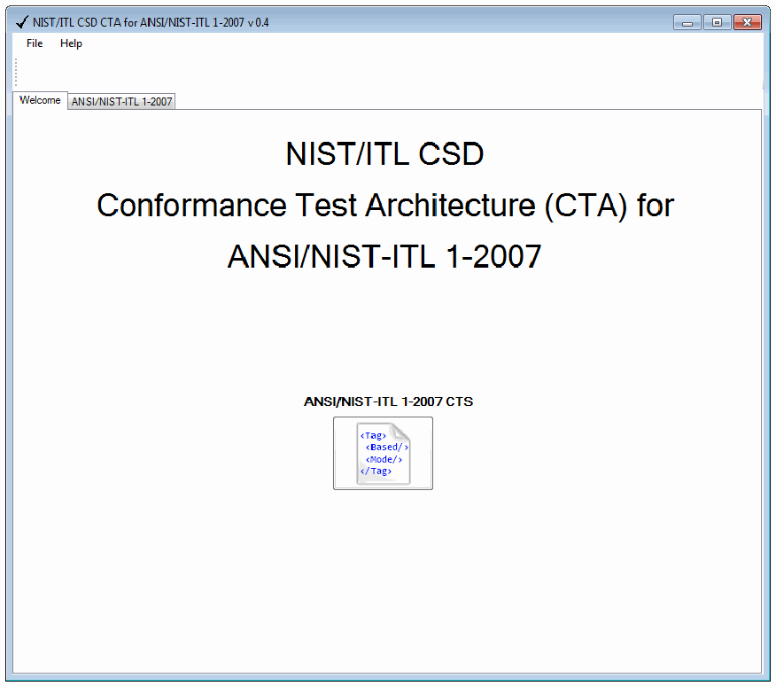
アプリケーションのウィンドウ（タイトル「NIST/ITL CSD CTA for ANSI/NIST-ITL 1-2007 v 0.4」）の画面です。File と Help のメニュー、「Welcome」（選択中）と「ANSI/NIST-ITL 1-2007」の2つのタブがあります。Welcome タブには「NIST/ITL CSD Conformance Test Architecture (CTA) for ANSI/NIST-ITL 1-2007」の文字と、その下に「ANSI/NIST-ITL 1-2007 CTS」のアイコンが表示されています。
Figure 3-1: CTA/CTS Welcome
図 3-1: CTA/CTS のウェルカム画面
3.2 Loading and Running Implementations
3.2 実装の読み込みと実行
The “ANSI/NIST-ITL 1-2007” tab must be selected before files can be loaded. An image of the test window is shown in Figure 3-2.
ファイルを読み込む前に、「ANSI/NIST-ITL 1-2007」タブを選択しなければなりません。テストウィンドウの画像を図 3-2 に示します。
![Screenshot of the "ANSI/NIST-ITL 1-2007" tab of the CTA window. A toolbar has the buttons AN1, Run and C. The Output Options area has check boxes Header, TOC, Parse Tests, L1 Tests, L2 Tests, File Level Results, Record Level Results, Field Level Results, Fields and Hide Ok, a type drop-down set to "All", field range boxes set to 1 and 999, and a "Self Test" button. Below is a list with the columns "Overall Result" and "File": each row has a green or red circle and a file path such as C:\__oak\Data\_AN 1-2007\ANSI_NIST_Character_Separated_Reference_Files\type-3.an2; most circles are green and a few (for example type-10-14-17-piv-index-iris.an2 and type-10-tattoo-zoom.an2) are red.](assets/ir-7791/p0014-figure-01.png)
CTA のウィンドウの「ANSI/NIST-ITL 1-2007」タブの画面です。ツールバーに AN1、Run、C のボタンがあります。Output Options の欄には Header、TOC、Parse Tests、L1 Tests、L2 Tests、File Level Results、Record Level Results、Field Level Results、Fields、Hide Ok のチェックボックス、「All」を選んだ種類の選択欄、1 と 999 を入れたフィールド範囲の欄、「Self Test」ボタンがあります。その下に「Overall Result」と「File」の列の一覧があり、各行に緑または赤の丸と C:\__oak\Data\_AN 1-2007\ANSI_NIST_Character_Separated_Reference_Files\type-3.an2 のようなファイルのパスが並びます。ほとんどの丸は緑で、type-10-14-17-piv-index-iris.an2 や type-10-tattoo-zoom.an2 などいくつかは赤です。
Figure 3-2: ANSI/NIST-ITL 1-2007 Test Window
図 3-2: ANSI/NIST-ITL 1-2007 のテストウィンドウ
Loading Files
ファイルの読み込み
There are two options for loading files:
ファイルを読み込む方法は 2 つあります。
1.Click the “AN1” button to specify the file path. If this option is used, the selected files will be loaded but the tests will not run until the “Run” button is selected.
1.「AN1」ボタンをクリックして、ファイルパスを指定します。この方法を使用した場合、選択したファイルは読み込まれますが、「Run」ボタンを選択するまでテストは実行されません。
2.Drag and drop one or many files into the window. If this method is chosen, the tests will automatically run and display as passed or failed.
2.1 つまたは複数のファイルをウィンドウにドラッグアンドドロップします。この方法を選択した場合、テストは自動的に実行され、合格または不合格として表示されます。
If necessary, click the “C” (Clear) button to remove the loaded files.
必要に応じて、「C」（Clear）ボタンをクリックして、読み込んだファイルを削除します。
Running Tests
テストの実行
Click the “Run” button to run the tests. The files loaded in the window will display as passed or failed, indicated by a green or red circle respectively.
「Run」ボタンをクリックして、テストを実行します。ウィンドウに読み込まれたファイルは、それぞれ緑または赤の丸で、合格または不合格として表示されます。
Sample Data Location
サンプルデータの場所
The sample data is available from the following locations for these versions of Microsoft® Windows®:
サンプルデータは、次の Microsoft® Windows® のバージョンについて、次の場所にあります。
•XP: C:\Documents and Settings\All Users\Documents\ ANSI NIST-ITL 1-2007 Sample Files
•XP: C:\Documents and Settings\All Users\Documents\ ANSI NIST-ITL 1-2007 Sample Files
•Vista: C:\Users\Public\Documents\ANSI NIST-ITL 1-2007 Sample Files
•Vista: C:\Users\Public\Documents\ANSI NIST-ITL 1-2007 Sample Files
•7: C:\Users\Public\Documents\ANSI NIST-ITL 1-2007 Sample Files
•7: C:\Users\Public\Documents\ANSI NIST-ITL 1-2007 Sample Files
4 Test Results
4 テスト結果
To generate the test results, specify the file path using the “AN1” button and click the “Run” button to run the tests. Alternatively, drag and drop the files into the GUI and the tests will run automatically.
テスト結果を生成するには、「AN1」ボタンを使ってファイルパスを指定し、「Run」ボタンをクリックしてテストを実行します。または、ファイルを GUI にドラッグアンドドロップすると、テストが自動的に実行されます。
4.1 Overall Results
4.1 全体の結果
After running the tests using one of the methods mentioned previously, the overall pass/fail results of the tests will be displayed in the “ANSI/NIST-ITL 1-2007” window. An example of the pass/fail results is shown below, with red (darker) circles representing failures and green circles representing successes.
前述のいずれかの方法でテストを実行すると、テスト全体の合格／不合格の結果が「ANSI/NIST-ITL 1-2007」ウィンドウに表示されます。合格／不合格の結果の例を以下に示します。赤（濃い色）の丸は不合格を、緑の丸は合格を表します。
![List with the columns "Overall Result" and "File". Each row has a colored circle and a file path under C:\AN2007\Data\: type-3.an2, type-4-14-slaps.an2, type-4-slaps.an2, type-5.an2, type-6.an2, type-7-latent.an2, type-8-sig.an2, type-9-4-iafis.an2 and type-9-10-14.an2 (green); type-10-14-17-fail.an2 (red); type-10-branded-tattoo-mark.an2 and type-13-tip-eji-j2l.an2 (green); type-13-tip-eji-wsq-fail.an2 (red); type-14-amp-nqm-utf8.an2, type-14-tpcard-nqm.an2 and type-15-palms.an2 (green); type-17-iris-fail.an2 (red).](assets/ir-7791/p0016-figure-01.png)
「Overall Result」と「File」の列の一覧です。各行に色付きの丸と C:\AN2007\Data\ の下のファイルのパスがあります。type-3.an2、type-4-14-slaps.an2、type-4-slaps.an2、type-5.an2、type-6.an2、type-7-latent.an2、type-8-sig.an2、type-9-4-iafis.an2、type-9-10-14.an2 は緑、type-10-14-17-fail.an2 は赤、type-10-branded-tattoo-mark.an2 と type-13-tip-eji-j2l.an2 は緑、type-13-tip-eji-wsq-fail.an2 は赤、type-14-amp-nqm-utf8.an2、type-14-tpcard-nqm.an2、type-15-palms.an2 は緑、type-17-iris-fail.an2 は赤です。
Figure 4-1: Pass/Fail Results
図 4-1: 合格／不合格の結果
The complete file path to the implementation is also listed for reference. In addition to these overall results, a detailed summary is also displayed in a separate window. The detailed summary is discussed in the next section.
参考のため、実装への完全なファイルパスも表示されます。これらの全体の結果に加えて、詳細な要約も別のウィンドウに表示されます。詳細な要約については、次の節で説明します。
4.2 Detailed Results
4.2 詳細な結果
The detailed results are displayed in a new window titled “ANSI/NIST-ITL 1-2007”, with the tab titled “Full”. The contents of this window are defined by the “Output Options” that are selected before running the tests. These options may also be selected after running the tests to update the detailed results dynamically. The image below depicts the detailed summary window with sample results.
詳細な結果は、「ANSI/NIST-ITL 1-2007」というタイトルの新しいウィンドウの、「Full」というタブに表示されます。このウィンドウの内容は、テストを実行する前に選択した「Output Options」によって決まります。これらのオプションは、テストの実行後に選択して、詳細な結果を動的に更新することもできます。次の画像は、サンプルの結果を含む詳細な要約ウィンドウを示しています。
![Screenshot of the detailed results window "ANSI/NIST-ITL 1-2007" with a Save button and a "Full" tab. The text output begins with a "Fail" banner for README.pdf and its path, "(No Table of Contents)", then a "Pass" banner for type-3.an2 and its path, a TABLE OF CONTENTS with three records (#01 Type= 1 Follow= 2 Offset= 0 Length= 170; #02 Type= 2 IDC= 0 Offset= 170 Length= 57; #03 Type= 3 IDC= 1 Offset= 227 Length= 151,170), and a list of tests each marked Ok: L1 RecordTypeValid, L2 RecordTypeFieldNumValid, L2 ReservedField, L1 LengthMin, L1 LengthMax, L1 7-Bit_Ascii, L1 Numbers_US_RS, L1 Nx2, L1 ImplementedInCode, L2 TocFieldIs_1.003, L1 AllSubfieldsNumeric, L2 IDC_Zero_First, L2 IDC_Zero_Min_Value, L2 IDC_255_Max_Value, L2 IDC_Sequence_Valid, L2 FileHasOneOrMoreRecords, L2 Type1IsFirst, L2 Type1OccursOnce, L2 NSR_NTR_ZeroIfNoType3-7. An Ok button is at the bottom.](assets/ir-7791/p0017-figure-02.png)
詳細結果のウィンドウ「ANSI/NIST-ITL 1-2007」の画面です。Save ボタンと「Full」タブがあります。出力は、README.pdf とそのパスの「Fail」の見出し、「(No Table of Contents)」、type-3.an2 とそのパスの「Pass」の見出し、3つのレコードの TABLE OF CONTENTS（#01 Type= 1 Follow= 2 Offset= 0 Length= 170、#02 Type= 2 IDC= 0 Offset= 170 Length= 57、#03 Type= 3 IDC= 1 Offset= 227 Length= 151,170）の順に続き、その後にすべて Ok の試験の一覧（L1 RecordTypeValid、L2 RecordTypeFieldNumValid、L2 ReservedField、L1 LengthMin、L1 LengthMax、L1 7-Bit_Ascii、L1 Numbers_US_RS、L1 Nx2、L1 ImplementedInCode、L2 TocFieldIs_1.003、L1 AllSubfieldsNumeric、L2 IDC_Zero_First、L2 IDC_Zero_Min_Value、L2 IDC_255_Max_Value、L2 IDC_Sequence_Valid、L2 FileHasOneOrMoreRecords、L2 Type1IsFirst、L2 Type1OccursOnce、L2 NSR_NTR_ZeroIfNoType3-7）があります。下部に Ok ボタンがあります。
Figure 4-2: ANSI/NIST-ITL 1-2007 Detailed Results
図 4-2: ANSI/NIST-ITL 1-2007 の詳細な結果
The “Save” button, shown in Figure 4-2 below the “ANSI/NIST-ITL 1-2007” tile bar, may be clicked to save the test results to a text file. After clicking the “Save” button, a Windows Explorer browser window will open to allow a file location and name to be selected.
図 4-2 の「ANSI/NIST-ITL 1-2007」タイルバーの下に示した「Save」ボタンをクリックすると、テスト結果をテキストファイルに保存できます。「Save」ボタンをクリックすると、Windows エクスプローラーのブラウザーウィンドウが開き、ファイルの場所と名前を選択できます。
Output Options
出力オプション
On the “ANSI/NIST-ITL 1-2007” tab depicted in Figure 3-2, several options are available for formatting the test results detailed output as shown in Figure 4-3 below.
図 3-2 に示した「ANSI/NIST-ITL 1-2007」タブでは、以下の図 4-3 に示すように、テスト結果の詳細な出力を整形するためのいくつかのオプションを利用できます。
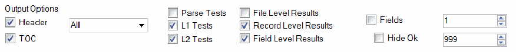
Output Options の欄です。Header（オン）、TOC（オン）、Parse Tests（オフ）、L1 Tests（オン）、L2 Tests（オン）、File Level Results（オフ）、Record Level Results（オン）、Field Level Results（オン）、Fields（オフ）、Hide Ok（オフ）のチェックボックス、「All」を選んだ選択欄、1 と 999 を入れた2つの数値欄があります。
Figure 4-3: Output Options
図 4-3: 出力オプション
Header
ヘッダー
The “Header” option displays general information about the implementation including the pass/fail status and the file path. A sample header is shown below for a passing implementation.
「Header」オプションは、合格／不合格のステータスやファイルパスなど、実装に関する一般的な情報を表示します。合格した実装のヘッダーのサンプルを以下に示します。
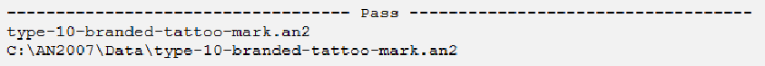
ヘッダーの出力です。中央に「Pass」のある破線の後に「type-10-branded-tattoo-mark.an2」とパス「C:\AN2007\Data\type-10-branded-tattoo-mark.an2」が続きます。
Figure 4-4: Header Sample
図 4-4: ヘッダーのサンプル
TOC
TOC
The “TOC” option displays a table of contents describing all of the content for a given implementation, including Type, IDC, Offset, and Length. The number preceding each line in the TOC (such as #01 shown in Figure 4-5) is an identifier assigned to each record found inside of the file as it is sequentially parsed. This identifier clarifies the ordering of record types found within each file.
「TOC」オプションは、Type、IDC、Offset、Length を含む、特定の実装のすべての内容を記述する目次を表示します。TOC の各行の前にある番号（図 4-5 に示す #01 など）は、ファイル内で見つかった各レコードに、順次パースされる際に割り当てられる識別子です。この識別子により、各ファイル内で見つかったレコードタイプの順序が明確になります。
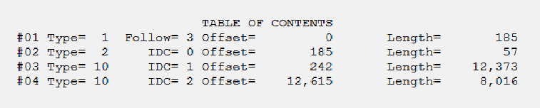
「TABLE OF CONTENTS」の出力です。#01 Type= 1 Follow= 3 Offset= 0 Length= 185、#02 Type= 2 IDC= 0 Offset= 185 Length= 57、#03 Type= 10 IDC= 1 Offset= 242 Length= 12,373、#04 Type= 10 IDC= 2 Offset= 12,615 Length= 8,016 の4行です。
Figure 4-5: TOC Sample
図 4-5: 目次のサンプル
Type Selection
タイプの選択
The type selection window allows the user to select which Record Types should be displayed, including Record Types 1, 4, 10, 13, 14, and 17 (or all record types included in the file). Only the option selected will be displayed in the results. For the unsupported Record Types (any type other than those shown in Figure 4-6), only the name and length of the record will be displayed in the results.
タイプ選択ウィンドウでは、表示するレコードタイプ（レコードタイプ 1、4、10、13、14、17、またはファイルに含まれるすべてのレコードタイプ）を、利用者が選択できます。結果には、選択したオプションだけが表示されます。サポートされないレコードタイプ（図 4-6 に示すもの以外のタイプ）については、結果にレコードの名前と長さだけが表示されます。
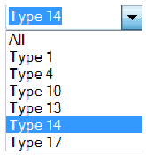
現在の値が「Type 14」の選択欄です。選択肢は All、Type 1、Type 4、Type 10、Type 13、Type 14（強調表示）、Type 17 です。
Figure 4-6: Type Selection Menu
図 4-6: タイプ選択メニュー
For example, the implementation below contains multiple types as shown in the TOC, but only the selected type (14) is shown in the results.
たとえば、以下の実装には、TOC に示されるように複数のタイプが含まれていますが、結果には選択したタイプ（14）だけが表示されています。
![Output for "type-4-14-slaps.an2" (path C:\AN2007\Data\type-4-14-slaps.an2) with a TABLE OF CONTENTS of five records (#01 Type= 1 Follow= 4 Offset= 0 Length= 195; #02 Type= 2 IDC= 0 Offset= 195 Length= 57; #03 Type= 4 IDC= 1 Offset= 252 Length= 104,277; #04 Type= 4 IDC= 2 Offset= 104,529 Length= 112,535; #05 Type= 14 IDC= 3 Offset= 217,064 Length= 50,415), then only "Type 14 (Variable-Resolution Fingerprint Image) Pass" and field "14.001 (LEN): 50415" with L1 RecordTypeValid, L2 RecordTypeFieldNumValid, L2 ReservedField and L1 LengthMin, each Ok.](assets/ir-7791/p0019-figure-03.png)
「type-4-14-slaps.an2」（パス C:\AN2007\Data\type-4-14-slaps.an2）の出力です。5つのレコードの TABLE OF CONTENTS（#01 Type= 1 Follow= 4 Offset= 0 Length= 195、#02 Type= 2 IDC= 0 Offset= 195 Length= 57、#03 Type= 4 IDC= 1 Offset= 252 Length= 104,277、#04 Type= 4 IDC= 2 Offset= 104,529 Length= 112,535、#05 Type= 14 IDC= 3 Offset= 217,064 Length= 50,415）の後に、「Type 14 (Variable-Resolution Fingerprint Image) Pass」だけが表示され、フィールド「14.001 (LEN): 50415」の L1 RecordTypeValid、L2 RecordTypeFieldNumValid、L2 ReservedField、L1 LengthMin がすべて Ok です。
Figure 4-7: Type Selection Menu
図 4-7: タイプ選択メニュー
Parse Tests
パーステスト
The “Parse Tests” option displays parse test results (i.e., tests that are executed during parsing of the file, before the testing of L1 and L2 assertions). The “File Level Results” checkbox must be selected to view the parse tests. See Figure 4-8 for an example of parse tests in the file level results.
「Parse Tests」オプションは、パーステストの結果（すなわち、ファイルのパース中、L1 および L2 アサーションのテストより前に実行されるテスト）を表示します。パーステストを表示するには、「File Level Results」チェックボックスを選択しなければなりません。ファイルレベルの結果におけるパーステストの例は、図 4-8 を参照してください。
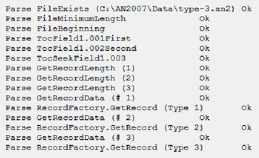
構文解析の試験の出力で、各行の末尾は Ok です。Parse FileExists (C:\AN2007\Data\type-3.an2)、Parse FileMinimumLength、Parse FileBeginning、Parse TocField1.001First、Parse TocField1.002Second、Parse TocSeekField1.003、Parse GetRecordLength (1)・(2)・(3)、Parse GetRecordData (# 1)、Parse RecordFactory.GetRecord (Type 1)、Parse GetRecordData (# 2)、Parse RecordFactory.GetRecord (Type 2)、Parse GetRecordData (# 3)、Parse RecordFactory.GetRecord (Type 3) の行が並びます。
Figure 4-8: Field-Level Parse Test Sample
図 4-8: フィールドレベルのパーステストのサンプル
L1 Tests/ L2 Tests
L1 テスト／L2 テスト
The “L1 Tests” and “L2 Tests” options display L1 and/or L2 test results at the File, Record, and Field levels. The "Fields" checkbox and at least one of the File, Record, or Field Level checkboxes must be selected to view these results.
「L1 Tests」および「L2 Tests」オプションは、ファイル、レコード、フィールドの各レベルでの L1 または L2 のテスト結果を表示します。これらの結果を表示するには、「Fields」チェックボックスと、File、Record、Field の各レベルのチェックボックスの少なくとも 1 つを選択しなければなりません。
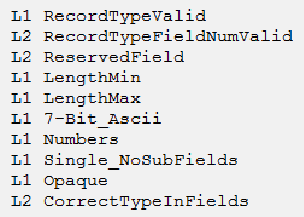
試験名の一覧です。L1 RecordTypeValid、L2 RecordTypeFieldNumValid、L2 ReservedField、L1 LengthMin、L1 LengthMax、L1 7-Bit_Ascii、L1 Numbers、L1 Single_NoSubFields、L1 Opaque、L2 CorrectTypeInFields です。
Figure 4-9: L1, L2 Tests Sample
図 4-9: L1、L2 テストのサンプル
File Level Results
ファイルレベルの結果
The “File Level Results” option displays results related to the file contents.
「File Level Results」オプションは、ファイルの内容に関する結果を表示します。
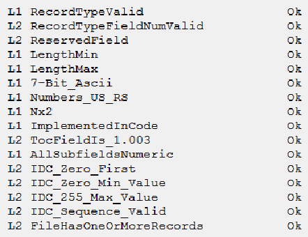
ファイルレベルの結果で、すべて Ok です。L1 RecordTypeValid、L2 RecordTypeFieldNumValid、L2 ReservedField、L1 LengthMin、L1 LengthMax、L1 7-Bit_Ascii、L1 Numbers_US_RS、L1 Nx2、L1 ImplementedInCode、L2 TocFieldIs_1.003、L1 AllSubfieldsNumeric、L2 IDC_Zero_First、L2 IDC_Zero_Min_Value、L2 IDC_255_Max_Value、L2 IDC_Sequence_Valid、L2 FileHasOneOrMoreRecords です。
Figure 4-10: File-Level Results Sample
図 4-10: ファイルレベルの結果のサンプル
Record Level Results
レコードレベルの結果
The “Record Level Results” option displays a summary of test results for the record.
「Record Level Results」オプションは、レコードのテスト結果の要約を表示します。
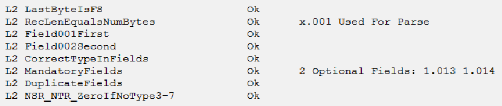
レコードレベルの結果で、すべて Ok です。L2 LastByteIsFS、L2 RecLenEqualsNumBytes（注記「x.001 Used For Parse」）、L2 Field001First、L2 Field002Second、L2 CorrectTypeInFields、L2 MandatoryFields（注記「2 Optional Fields: 1.013 1.014」）、L2 DuplicateFields、L2 NSR_NTR_ZeroIfNoType3-7 です。
Figure 4-11: Record-Level Results Sample
図 4-11: レコードレベルの結果のサンプル
Since some Record Types are not supported, the presence of these Records in a file or transaction is noted but no action on the content of the record is taken. The Record length is stated in the test result.
一部のレコードタイプはサポートされていないため、これらのレコードがファイルまたはトランザクションに存在することは記録されますが、レコードの内容に対する処理は行われません。レコードの長さは、テスト結果に記載されます。
Field Level Results
フィールドレベルの結果
The “Field Level Results” option displays all test results for each field. Figure 4-12 depicts a sample of the Field Level Results.
「Field Level Results」オプションは、各フィールドのすべてのテスト結果を表示します。図 4-12 に、フィールドレベルの結果のサンプルを示します。
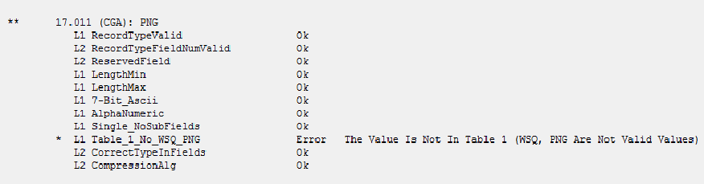
「**」の付いた「17.011 (CGA): PNG」のフィールドレベルの結果です。L1 RecordTypeValid、L2 RecordTypeFieldNumValid、L2 ReservedField、L1 LengthMin、L1 LengthMax、L1 7-Bit_Ascii、L1 AlphaNumeric、L1 Single_NoSubFields は Ok、「* L1 Table_1_No_WSQ_PNG」は Error でメッセージは「The Value Is Not In Table 1 (WSQ, PNG Are Not Valid Values)」、L2 CorrectTypeInFields と L2 CompressionAlg は Ok です。
Figure 4-12: Field-Level Results Sample
図 4-12: フィールドレベルの結果のサンプル
Fields
フィールド
The “Fields” option displays the fields within each test. If this option is not selected, “Field Level Results” will not be displayed. The image below shows the output when the “Fields” option is not selected, and thus no fields are displayed.
「Fields」オプションは、各テスト内のフィールドを表示します。このオプションを選択しない場合、「Field Level Results」は表示されません。次の画像は、「Fields」オプションを選択していないために、フィールドが表示されない場合の出力を示しています。
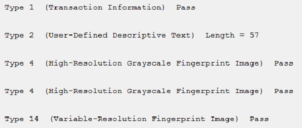
レコードの行だけの出力です。「Type 1 (Transaction Information) Pass」、「Type 2 (User-Defined Descriptive Text) Length = 57」、「Type 4 (High-Resolution Grayscale Fingerprint Image) Pass」（2行）、「Type 14 (Variable-Resolution Fingerprint Image) Pass」です。
Figure 4-13: Fields Option Not Selected
図 4-13: Fields オプションを選択していない場合
Hide Ok
Ok を非表示
The “Hide Ok” option removes all tests results that return the status "Ok" from the detailed summary with the exception of Records/Fields in error.
「Hide Ok」オプションは、エラーのレコード／フィールドを除き、ステータスが「Ok」であるすべてのテスト結果を詳細な要約から取り除きます。
Field Range
フィールドの範囲
Specifies which fields of the existing Record Types are displayed by the selected lower and upper bounds in these windows.
これらのウィンドウで選択した下限と上限によって、既存のレコードタイプのどのフィールドを表示するかを指定します。
Annex A - Code Structure
附属書 A - コード構造
This Annex discusses the elements of the code structure depicted in Figures A-1 and A-2 below.
この附属書では、以下の図 A-1 と図 A-2 に示すコード構造の要素について説明します。
The An107File Class is the entry point into the CTA/CTS module. It contains a list of all the Record Types encountered in a given transaction (file). After determining that the file exists, the parsing operation begins. As each Record in the file is parsed, it is added to the list of Records within the An107File Class.
An107File クラスは、CTA/CTS モジュールへのエントリポイントです。このクラスは、特定のトランザクション（ファイル）で見つかったすべてのレコードタイプのリストを持っています。ファイルが存在することを確認した後、パース処理が始まります。ファイル内の各レコードがパースされるたびに、そのレコードは An107File クラス内のレコードのリストに追加されます。
IRecordType is an interface that defines required methods and attributes. There is a base Class that derives from this interface called “RecordBase” that performs all common Level 1 and Level 2 assertions for each Record. From RecordBase specific implementations for each Record Type to perform Record Type-specific parsing/testing can be derived. Parsing at this level could, as required, override the general parsing performed at the RecordBase level.
IRecordType は、必要なメソッドと属性を定義するインターフェースです。このインターフェースから派生した「RecordBase」という基底クラスがあり、各レコードに共通のレベル 1 およびレベル 2 のアサーションをすべて実行します。RecordBase から、レコードタイプごとの固有のパース／テストを行う、各レコードタイプ向けの個別の実装を派生させることができます。このレベルでのパースは、必要に応じて、RecordBase レベルで行われる一般的なパースを上書きできます。
IField is the interface for fields which describes the content of fields in the file under test. IRecordType contains a list of IFields. FieldBase is a specific implementation of IField.
IField は、テスト対象のファイル内のフィールドの内容を記述する、フィールド用のインターフェースです。IRecordType は IFields のリストを持っています。FieldBase は IField の個別の実装です。
After each test is performed the code updates the list of results at every testing level (File, Record, Field, Subfield, and Subfield data). Possible results, listed in order of increasing severity are: (a) “Ok”; (b) “Note”; (c) “Warning”; (d) “Error”; and “Critical Error3”. There is also an overall result, once all tests have been completed. A Transaction is determined to be “passing” or “failing” in the OverallResult.
各テストが実行された後、コードは、すべてのテストレベル（ファイル、レコード、フィールド、サブフィールド、サブフィールドデータ）で結果のリストを更新します。取りうる結果は、深刻度の低い順に、(a)「Ok」、(b)「Note」、(c)「Warning」、(d)「Error」、「Critical Error3」です。すべてのテストが完了した時点での全体の結果もあります。トランザクションが「合格」か「不合格」かは、OverallResult で判定されます。
![Class diagram box "An107File", Sealed Class. Fields: _an1Dash2007OutputOptions : An1Dash2007OutputOptions; _assertions : Assertions; _dataBinary : byte[]; _records : List<IRecordType>; _results : Results. Properties: AssertionHandlesImplemented : List<string>; OverallResult : OverallResult; Records : List<IRecordType>; RecordsCount : int; Results : Results; SelfTestFailed : bool; SelfTestFailureInfo : string; TblOfContents : TableOfContents; TocEntriesCount : int. Methods: An107File() (+ 1 overload); AppendToc() : void; CompareNumRecsToTocEntries() : void; DiscoverStructure() : void; GetDataBinary() : byte[]; PostDiscoveryTests() : void; SetDataBinary() : void; TocIdcsSameInRecords() : void; ToString() : string.](assets/ir-7791/p0023-figure-01.png)
クラス「An107File」（Sealed Class）のクラス図です。Fields は _an1Dash2007OutputOptions : An1Dash2007OutputOptions、_assertions : Assertions、_dataBinary : byte[]、_records : List<IRecordType>、_results : Results です。Properties は AssertionHandlesImplemented : List<string>、OverallResult : OverallResult、Records : List<IRecordType>、RecordsCount : int、Results : Results、SelfTestFailed : bool、SelfTestFailureInfo : string、TblOfContents : TableOfContents、TocEntriesCount : int です。Methods は An107File() (+ 1 overload)、AppendToc() : void、CompareNumRecsToTocEntries() : void、DiscoverStructure() : void、GetDataBinary() : byte[]、PostDiscoveryTests() : void、SetDataBinary() : void、TocIdcsSameInRecords() : void、ToString() : string です。
Figure A-1: Class Diagram for the An107 File Class
図 A-1: An107 File クラスのクラス図
![Class diagram. On the left, sealed classes Type1, Type7, Type8, Type10, Type13, Type14 and Type17 derive from RecordBase; class Type3Throu… (Type3Through6) derives from RecordBase, and sealed class Type4 derives from Type3Through6. RecordBase (Class) implements the interface IRecordType. The IRecordType interface lists Properties: Fields : List<IField>, FieldsCount : int, IdcField : IField, ImageDesignationChar…, OverallResult : Overall…, RecordType : int, Results : Results, UnsupportedMessage :…, UseThis : bool; and Methods: Assert() : bool (+ 1 over…), Field() : IField, FieldExists() : bool, L2IdcSameAsToc() : bool, Parse() : bool, RunFinalLevel2Tests() :…, ToString() : string. The IField interface lists Properties: Abbreviation : string, DataLength : uint, Display : string, DisplayAsString : bool, FieldContentsType : FieldCo…, FieldNum : int, GetData : byte[], GetDataAsInt : int, GetDataFsGsRsUs : string, OverallResult : OverallResult, Results : Results, Subfields_NumberOfRows : int, Type : int; and Methods: Assert() : bool, Subfields_Contain() : bool, Subfields_Get_Number() : int, Subfields_Get_String() : string, Subfields_RowCol_Is() : bool, ToString() : string. FieldBase (Class) implements IField, and FieldBaseTest (Class) derives from FieldBase. Results (Sealed Class) and OverallResult (Enum) are shown separately.](assets/ir-7791/p0024-figure-01.png)
クラス図です。左側の Type1、Type7、Type8、Type10、Type13、Type14、Type17（Sealed Class）は RecordBase から派生し、Type3Throu…（Type3Through6）も RecordBase から派生し、Type4（Sealed Class）は Type3Through6 から派生します。RecordBase（Class）はインタフェース IRecordType を実装します。IRecordType インタフェースの Properties は Fields : List<IField>、FieldsCount : int、IdcField : IField、ImageDesignationChar…、OverallResult : Overall…、RecordType : int、Results : Results、UnsupportedMessage :…、UseThis : bool で、Methods は Assert() : bool (+ 1 over…)、Field() : IField、FieldExists() : bool、L2IdcSameAsToc() : bool、Parse() : bool、RunFinalLevel2Tests() :…、ToString() : string です。IField インタフェースの Properties は Abbreviation : string、DataLength : uint、Display : string、DisplayAsString : bool、FieldContentsType : FieldCo…、FieldNum : int、GetData : byte[]、GetDataAsInt : int、GetDataFsGsRsUs : string、OverallResult : OverallResult、Results : Results、Subfields_NumberOfRows : int、Type : int で、Methods は Assert() : bool、Subfields_Contain() : bool、Subfields_Get_Number() : int、Subfields_Get_String() : string、Subfields_RowCol_Is() : bool、ToString() : string です。FieldBase（Class）は IField を実装し、FieldBaseTest（Class）は FieldBase から派生します。Results（Sealed Class）と OverallResult（Enum）は別に示されています。
Figure A-2: Class Diagram for the Data Types
図 A-2: データ型のクラス図
Annex B - References
附属書 B - 参考文献
[1] NIST Special Publication 500-271, ANSI/NIST-ITL 1-2007 (Revision of ANSI/NIST-ITL 1-2000), American National Standard for Information Systems — Data Format for the Interchange of Fingerprint Facial, & Other Biometric Information – Part 1
[1] NIST Special Publication 500-271, ANSI/NIST-ITL 1-2007 (Revision of ANSI/NIST-ITL 1-2000), American National Standard for Information Systems — Data Format for the Interchange of Fingerprint Facial, & Other Biometric Information – Part 1
[2] NIST Special Publication 500-275, ANSI/NIST-ITL 2-2008 (XML Version of ANSI/NIST-ITL 1-2007), American National Standard for Information Systems — Data Format for the Interchange of Fingerprint Facial, & Other Biometric Information – Part 2: XML Version
[2] NIST Special Publication 500-275, ANSI/NIST-ITL 2-2008 (XML Version of ANSI/NIST-ITL 1-2007), American National Standard for Information Systems — Data Format for the Interchange of Fingerprint Facial, & Other Biometric Information – Part 2: XML Version
[3] Update to “Data Format for the Interchange of Fingerprint, Facial & Other Biometric Information” for multiple finger capture designations ANSI/NIST ITL 1a-2009
[3] Update to “Data Format for the Interchange of Fingerprint, Facial & Other Biometric Information” for multiple finger capture designations ANSI/NIST ITL 1a-2009
[4] ANSI/NIST Standard Homepage - http://www.nist.gov/itl/iad/ig/ansi_standard.cfm
[4] ANSI/NIST Standard Homepage - http://www.nist.gov/itl/iad/ig/ansi_standard.cfm
[5] INCITS M1 – Biometrics Public Homepage - http://standards.incits.org/a/public/group/m1
[5] INCITS M1 – Biometrics Public Homepage - http://standards.incits.org/a/public/group/m1
[6] ISO/IEC JTC1/SC 37 – Biometrics Public Homepage - http://www.iso.org/iso/jtc1_sc37_home
[6] ISO/IEC JTC1/SC 37 – Biometrics Public Homepage - http://www.iso.org/iso/jtc1_sc37_home
[7] NIST/ITL CSD Biometric Conformance Test Architectures and Test Suites Downloads Web Page: http://www.nist.gov/itl/csd/biometrics/biocta_download.cfm
[7] NIST/ITL CSD Biometric Conformance Test Architectures and Test Suites Downloads Web Page: http://www.nist.gov/itl/csd/biometrics/biocta_download.cfm
Annex C - Standard Requirements and Conformance Test Assertions
附属書 C - 標準の要件と適合性テストアサーション
Test assertions documented in Table C-4 below are expressed according to the operators and operands included in Tables C-1 and C-2 respectively, except for those instances where the assertion cannot be clearly or easily represented in a mathematical format. Table C-3 includes terms used throughout the assertions table. In the tool implementation all image-related assertions associated with compressed image types are tested against the image metadata only and not against the image itself. Even though Logical Record types 3 to 6 are not ASCII data, and are not represented in implementations as a tagged-field (e.g. 4.001), they are represented as such in this table to make it easier to understand. For assertions formulated from several sections of the AN Standard, the assertion is listed once on the first requirement encountered.
以下の表 C-4 に記載されたテストアサーションは、アサーションを数学的な形式で明確または容易に表現できない場合を除き、それぞれ表 C-1 と表 C-2 に含まれる演算子とオペランドに従って表現されています。表 C-3 には、アサーションの表全体で使用される用語が含まれています。ツールの実装では、圧縮画像タイプに関連するすべての画像関連のアサーションは、画像自体ではなく、画像メタデータのみに対してテストされます。論理レコードタイプ 3 から 6 は ASCII データではなく、実装ではタグ付きフィールド（たとえば 4.001）として表現されませんが、理解しやすくするため、この表ではそのように表現しています。AN 標準の複数の節から導かれたアサーションは、最初に出会った要件に 1 回だけ記載されています。
Table C-1 – Operators Use in Table C-4 Test Assertions
表 C-1 – 表 C-4 のテストアサーションで使用する演算子
| Operator | Description |
|---|---|
| EQ | Equal. Tests for equality between two values. |
| NEQ | Not Equal. Tests for non-equality between two values. |
| GTE | Greater Than or Equal To. Tests if the first value is greater than or equal to the second value. |
| LTE | Less Than or Equal To. Tests if the first value is less than or equal to the second value. |
| GT | Greater Than. Tests if the first value is greater than the second value. |
| LT | Less Than. Tests if the first value is less than the second value. |
| MO | Member Of. Tests if the value is a contained within the set. |
| AND | Logical And. Tests if both values are true. |
| OR | Logical OR. Tests if any values are true. |
| NOT | Negate. Negates any operator or calculation that follows. |
| ST | Such That. For example, (X,Y) ST X GTE 0 AND Y LTE 10 |
| IF | Logical IF. Tests if the condition is true. |
| IFF | IF and Only IF. Tests that the condition guarantees another. |
| MOD | The modulo operator. X MOD Y = the remainder of a X divided by Y |
| # | All. Represents all legal values. |
| : | Data Element Selector. X:N selects the Nth data element in X. |
| in | The selector operator. X in Y selects only those X found in Y. |
| to | Range Selector. X to Y provides set of values Z ST Z GTE X AND Z LTE Y |
| , | Range concatenation. X,Y provides the set of values X AND Y. |
| 演算子 | 説明 |
|---|---|
| EQ | 等しい。2 つの値が等しいかどうかをテストします。 |
| NEQ | 等しくありません。2 つの値が等しくないかどうかをテストします。 |
| GTE | 以上。最初の値が 2 番目の値以上であるかどうかをテストします。 |
| LTE | 以下。最初の値が 2 番目の値以下であるかどうかをテストします。 |
| GT | より大きい。最初の値が 2 番目の値より大きいかどうかをテストします。 |
| LT | より小さい。最初の値が 2 番目の値より小さいかどうかをテストします。 |
| MO | メンバーです。値が集合に含まれているかどうかをテストします。 |
| AND | 論理積。両方の値が真であるかどうかをテストします。 |
| OR | 論理和。いずれかの値が真であるかどうかをテストします。 |
| NOT | 否定。後に続く演算子または計算を否定します。 |
| ST | Such That（条件付き）。たとえば、(X,Y) ST X GTE 0 AND Y LTE 10 |
| IF | 論理 IF。条件が真であるかどうかをテストします。 |
| IFF | IF and Only IF（必要十分）。ある条件が別の条件を保証することをテストします。 |
| MOD | 剰余演算子。X MOD Y = X を Y で割った余り |
| # | すべて。有効な値をすべて表します。 |
| : | データ要素の選択。X:N は X の N 番目のデータ要素を選択します。 |
| in | 選択演算子。X in Y は、Y に含まれる X のみを選択します。 |
| to | 範囲の選択。X to Y は、Z ST Z GTE X AND Z LTE Y となる値の集合を与えます。 |
| , | 範囲の連結。X,Y は、X AND Y の値の集合を与えます。 |
Table C-2 - Description of the Operands Used in Table C-4 Test Assertions
表 C-2 - 表 C-4 のテストアサーションで使用するオペランドの説明
| Operand | Description |
|---|---|
| Present(Value) | Determines if Value is present. |
| Present(X in Y) | Determines if X is present in Y. |
| Sum(Values) | The summation of Values. |
| Count(Value) | The number of occurrences of Value. |
| Count(X in Y) | The number of X found in Y. |
| {X} | Value of X. |
| Bytes(Value) | All of the byte data contained within Value. |
| MinOccurrences(Value) | The minimum number of occurrences allowed. |
| MaxOccurrences(Value) | The maximum number of occurrences allowed. |
| MinSize(Value) | The minimum size allowed per occurrence. |
| MaxSize(Value) | The maximum size allowed per occurrence. |
| Min(Value)= | The minimum of the set represented by Value. |
| Length(Value) | The length of the Value. |
| First(X in Y) | The first X found in Y. |
| Second(X in Y) | The second X found in Y. |
| Last(X in Y) | The last X found in Y. |
| Type(Value) | The type of Record represented by Value. |
| FieldNumber(Value) | The value of the field number for the field represented by Value. |
| ForEach(X in Y) {Expression(s)} | Evaluate Expression for every X in Y. |
| Valid(X) | A set of all valid values for X as defined by the requirement. |
| オペランド | 説明 |
|---|---|
| Present(Value) | Value が存在するかどうかを判定します。 |
| Present(X in Y) | X が Y に存在するかどうかを判定します。 |
| Sum(Values) | Values の総和。 |
| Count(Value) | Value の出現数。 |
| Count(X in Y) | Y に含まれる X の数。 |
| {X} | X の値。 |
| Bytes(Value) | Value に含まれるバイトデータのすべて。 |
| MinOccurrences(Value) | 許容される最小の出現数。 |
| MaxOccurrences(Value) | 許容される最大の出現数。 |
| MinSize(Value) | 1 出現あたりに許容される最小サイズ。 |
| MaxSize(Value) | 1 出現あたりに許容される最大サイズ。 |
| Min(Value)= | Value が表す集合の最小値。 |
| Length(Value) | Value の長さ。 |
| First(X in Y) | Y に含まれる最初の X。 |
| Second(X in Y) | Y に含まれる 2 番目の X。 |
| Last(X in Y) | Y に含まれる最後の X。 |
| Type(Value) | Value が表すレコードのタイプ。 |
| FieldNumber(Value) | Value が表すフィールドのフィールド番号の値。 |
| ForEach(X in Y) {Expression(s)} | Y に含まれるすべての X について Expression を評価します。 |
| Valid(X) | 要件で定義された、X の有効な値すべての集合。 |
Note: When a data range is used in a calculation, the calculation is applied independently for each data element in the range. As an example, the expression:
注: 計算でデータ範囲が使用される場合、その計算は範囲内の各データ要素に対して独立して適用されます。たとえば、次の式:
Count(Subfields in 1.001,1.002) EQ 0
Count(Subfields in 1.001,1.002) EQ 0
is equivalent to:
と等価です:
Count(Subfields in 1.001) EQ 0 AND Count(Subfields in 1.002) EQ 0
Count(Subfields in 1.001) EQ 0 AND Count(Subfields in 1.002) EQ 0
Table C-3 Terms Used in Table C-4 Test Assertions
表 C-3 表 C-4 のテストアサーションで使用する用語
| Term | Description |
|---|---|
| NULL | Control character with no value. |
| NA | Not Applicable |
| 用語 | 説明 |
|---|---|
| NULL | 値を持たない制御文字。 |
| NA | 適用不可 |
Table C-4 includes the requirements (or a summary of the requirements) specified in ANSI/NIST-ITL 1-2007 standard and associated required conformance test assertions. Although references are included for all Record Types when appropriate (for example when a requirement detailed for “tagged-filed records”), the table focuses on requirements and assertions for the Record Types of interest: Record Type 1 and Record Types 4, 10, 13, 14, and 17. Explanations of the heading for each column in the table are included below.
表 C-4 には、ANSI/NIST-ITL 1-2007 標準で規定された要件（または要件の要約）と、関連して必要となる適合性テストアサーションが含まれています。適切な場合（たとえば、要件が「タグ付きフィールドレコード」について詳述されている場合）にはすべてのレコードタイプへの参照が含まれていますが、この表は、対象のレコードタイプであるレコードタイプ 1 とレコードタイプ 4、10、13、14、17 の要件とアサーションに焦点を当てています。表の各列の見出しの説明を以下に示します。
Table C-4 can be used for conformance test tool developers, implementers of the standard, and end-users as well as testing laboratories File, Record and Field-level requirements and assertions are included.
表 C-4 は、適合性テストツールの開発者、標準の実装者、エンドユーザー、およびテスト機関が利用できます。ファイル、レコード、フィールドの各レベルの要件とアサーションも含まれています。
The table includes the following headings4:
この表には次の見出しが含まれています4。
•Requirement ID: Defines a unique identifier for the requirement and associated assertion or set of assertions. It provides reference to the type of requirement (e.g., file, record, and field). It could refer to more than one Record Type.
•要件 ID: 要件と、関連するアサーションまたはアサーションの集合に対する一意の識別子を定義します。要件の種類（たとえば、ファイル、レコード、フィールド）への参照を提供します。複数のレコードタイプを参照する場合があります。
•Reference in the standard: Identifies the clause where the requirement is included in the standard. In some cases the reference includes additional information such as a Table number.
•標準での参照箇所: 標準内で要件が含まれている箇条を識別します。場合によっては、参照に表番号などの追加情報が含まれます。
•Requirement Summary: Provides a summary of the requirement detailed as textual information or an interpretation of the requirement in the standard. It carries the essentials of the requirement but may not provide all the text necessary to understand it.
•要件の概要: テキスト情報として詳述された要件の要約、または標準の要件の解釈を提供します。要件の要点を示していますが、要件を理解するのに必要なテキストがすべて含まれているとは限りません。
•Level: Indicates whether Level 1 or Level 2 conformance testing is required to address the requirement in the previous column. Assertions for Level 3 conformance test are not included. A single cell is included for each assertion.
•レベル: 前の列の要件に対応するために、レベル 1 またはレベル 2 のどちらの適合性テストが必要かを示します。レベル 3 の適合性テストのアサーションは含まれていません。各アサーションに対して 1 つのセルが含まれています。
•Status: Reflects the status specified in the standard (Mandatory (M) or Optional (O)) for each field. It might also indicate whether the requirement in the standard (e.g., field content, presence of field) is considered Mandatory or Optional. Conditional requirements (e.g., conditional to other information items) are tested according to the requirements but are not indicated as such in this column.
•ステータス: 各フィールドについて、標準に規定されたステータス（必須（M）またはオプション（O））を反映します。標準の要件（たとえば、フィールドの内容、フィールドの存在）が必須とみなされるかオプションとみなされるかを示す場合もあります。条件付きの要件（たとえば、他の情報項目に依存するもの）は、要件に従ってテストされますが、この列にはそのようには示されません。
•Assertion ID: Defines an identifier of a specific test assertion within the set of test assertions associated with a requirement.
•アサーション ID: 要件に関連するテストアサーションの集合の中の、特定のテストアサーションの識別子を定義します。
•Test assertion: Provides, whenever possible, a mathematical equation or a procedure. Plain text is included whenever a mathematical formula or simple procedure cannot be detailed.
•テストアサーション: 可能な限り、数式または手順を示します。数式や簡単な手順を詳述できない場合は、平文を含めます。
•Test Note: Contains a number of a note included below the table. The test note may include a test procedure when the complexity of the test assertion does not allow this procedure to be included in the test assertion column. It could also include an explanatory note related to the assertion’s implementation.
•テストノート: 表の下に含まれる注記の番号を含みます。テストアサーションの複雑さから、その手順をテストアサーションの列に含められない場合、テストノートにテスト手順を含めることがあります。また、アサーションの実装に関する説明的な注記を含めることもあります。
•Implementation support: Denotes a supplier’s implementation support of a particular requirement (“Y”/”N”). A note can follow the table when providing more details of implementation support (or the lack of it) is required.
•実装サポート: 特定の要件に対する供給者の実装サポートを示します（「Y」／「N」）。実装サポート（またはその欠如）の詳細を示す必要がある場合は、表の後に注記を付けることができます。
•Supported Range: Indicates a range of values supported, especially when it is different than the full range of values specified in the standard. When an information item is specified as a single value, or does not address a range of values, a N/A should be used.
•サポート範囲: サポートされる値の範囲を、特に標準に規定された値の全範囲と異なる場合に示します。情報項目が単一の値として規定されている場合、または値の範囲を扱わない場合は、N/A を使用すべきです。
•Test Result: This column is used to denote the test results. For file and record-level results the results are either “Pass” or “Fail”. The field-level results should be indicated as “Ok”“Error”, “Warning” and “Note”. Explanatory notes can be added below the table.
•テスト結果: この列は、テスト結果を示すために使用されます。ファイルレベルとレコードレベルの結果は、「Pass」または「Fail」のいずれかです。フィールドレベルの結果は、「Ok」、「Error」、「Warning」、「Note」として示すべきです。説明的な注記を表の下に追加できます。
Table C-4 - Requirements and Conformance Test Assertions
表 C-4 - 要件と適合性テストアサーション
| Requirement ID | Reference in Base Standard | Requirement Summary | Level | Status | Assertion ID | Test Assertion | Test Note | Implementation Support | Supported Range | Test Result |
|---|---|---|---|---|---|---|---|---|---|---|
| File-Level Requirements and Assertions | ||||||||||
| 7_Bit_ASCII | 7, Table 4 7.1 | The standard defines logical records, some of which include ASCII tagged textual fields. The data in the Type-1 record shall always be recorded in variable length fields using 7-bit ASCII. Text data in the Type-2, Type-9 and tagged-field records will normally use 7-bit ASCII encoding. Mechanisms for using character sets other than 7-bit ASCII are given in section 8.2.3, International Character Sets. | 1 | M | 7-Bit_Ascii::1.001 to 1.015 | { 1.001 to 1.015} LT 128 | ||||
| 1 | M | 7-Bit_Ascii::10.001 to 10.013 | {10.001 to 10.013} LT 128 | |||||||
| 1 | M | 7-Bit_Ascii::10.016, 10.017 | {10.016, 10.017} LT 128 | |||||||
| 1 | M | 7-Bit_Ascii::10.020 to 10.030 | {10.020 to 10.030} LT 128 | |||||||
| 1 | M | 7-Bit_Ascii::10.040 to 10.043 | {10.040 to 10.043} LT 128 | |||||||
| 1 | M | 7-Bit_Ascii::13.001 to 13.017 | {13.001 to 13.017} LT 128 | |||||||
| 1 | M | 7-Bit_Ascii::13.020, 13.024 | {13.020, 13.024} LT 128 | |||||||
| 1 | M | 7-Bit_Ascii::14.001 to 14.018 | {14.001 to 14.018} LT 128 | |||||||
| 1 | M | 7-Bit_Ascii::14.020 to 14.025 | {14.020 to 14.025} LT 128 | |||||||
| 1 | M | 7-Bit_Ascii::14.030 | {14.030} LT 128 | |||||||
| 1 | M | 7-Bit_Ascii::17.001 | {17.001 to 17.026} LT 128 | |||||||
| 要件 ID | 基本標準での参照箇所 | 要件の概要 | レベル | ステータス | アサーション ID | テストアサーション | テストノート | 実装サポート | サポート範囲 | テスト結果 |
|---|---|---|---|---|---|---|---|---|---|---|
| ファイルレベルの要件とアサーション | ||||||||||
| 7_Bit_ASCII | 7, Table 4 7.1 | この標準は論理レコードを定義しており、その一部には ASCII のタグ付きテキストフィールドが含まれます。Type-1 レコードのデータは、常に 7 ビット ASCII を用いた可変長フィールドに記録しなければなりません。Type-2、Type-9 およびタグ付きフィールドレコードのテキストデータは、通常、7 ビット ASCII 符号化を使用します。7 ビット ASCII 以外の文字セットを使用する仕組みは、第 8.2.3 節「International Character Sets」に記載されています。 | 1 | M | 7-Bit_Ascii::1.001 to 1.015 | { 1.001 to 1.015} LT 128 | ||||
| 1 | M | 7-Bit_Ascii::10.001 to 10.013 | {10.001 to 10.013} LT 128 | |||||||
| 1 | M | 7-Bit_Ascii::10.016, 10.017 | {10.016, 10.017} LT 128 | |||||||
| 1 | M | 7-Bit_Ascii::10.020 to 10.030 | {10.020 to 10.030} LT 128 | |||||||
| 1 | M | 7-Bit_Ascii::10.040 to 10.043 | {10.040 to 10.043} LT 128 | |||||||
| 1 | M | 7-Bit_Ascii::13.001 to 13.017 | {13.001 to 13.017} LT 128 | |||||||
| 1 | M | 7-Bit_Ascii::13.020, 13.024 | {13.020, 13.024} LT 128 | |||||||
| 1 | M | 7-Bit_Ascii::14.001 to 14.018 | {14.001 to 14.018} LT 128 | |||||||
| 1 | M | 7-Bit_Ascii::14.020 to 14.025 | {14.020 to 14.025} LT 128 | |||||||
| 1 | M | 7-Bit_Ascii::14.030 | {14.030} LT 128 | |||||||
| 1 | M | 7-Bit_Ascii::17.001 | {17.001 to 17.026} LT 128 | |||||||
| Requirement ID | Reference in Base Standard | Requirement Summary | Level | Status | Assertion ID | Test Assertion | Test Note | Implementation Support | Supported Range | Test Result |
|---|---|---|---|---|---|---|---|---|---|---|
| to 17.026 | ||||||||||
| 1 | M | 7-Bit_Ascii::17.030 | {17.030} LT 128 | |||||||
| (1,2,9).001-Fld1First | 7.1 | The first field in all tagged-field records (Types 1, 2 and 9) shall be labeled as field "1". | 2 | M | 1,2,9.001-Fld1First | See 1.001-First (handled in Record Type assertions) | ||||
| (1,2,9).002-Fld2Second | 7.1 | The second field in all tagged-field records (Types 1, 2 and 9) shall be labeled as field "2". | 2 | M | 1.002-Fld2Second | See 1.002-Second (handled in Record Type assertions) | ||||
| (1,2,9).001-RecBytes | 7.1 | The first field in all tagged-field records shall contain the length in bytes of the record. | 2 | M | 1.001-RecBytes | {1.001} EQ Length(Record) | ||||
| (3-6, 8).Contents | 7.1 | For the binary image Type-3, Type-4, Type-5, Type-6, and Type-8 logical records, the content and order of the recorded fields are specified by this standard. With the exception of the first two fields, the remaining fields of the Type-7 logical image record are all user-defined. All fields and data in these record types shall be recorded as binary information. | 2 | M | 3-6,8.#-Contents | The test assertions are included below under field testing for Record Type 4 | ||||
| (3-6, 8).Field_Order | 7.1, 11.1 | For the binary image Type-3, Type-4, Type-5, Type-6, and Type-8 logical records, the content and order of the recorded fields are specified by this standard. With the exception of the first two fields, the remaining fields of the Type-7 logical image record are all user-defined. All fields and data in these record types shall be recorded as binary information. Within each logical record, entries shall be provided in nine ordered and unnumbered fields Table 10 lists the contents of each of the nine fields (for Type-3 through Type-6). | 2 | M | Type-4.-Fields_In_Order | IF Type(Record) EQ 4 THEN Count(Fields) EQ 9 AND Fields:1 to Fields: 9 must be ordered. | ||||
| File-OneType-1 | 7.2 | Files to be exchanged are required to contain one and only one Type-1 logical record per transaction. | 2 | M | File-OneType-1 | Count(Records ST Type(Records) EQ 1) EQ 1 | ||||
| File-Type-1_First | 7.2 | The Type-1 logical record shall always be the first logical record within the file. | 2 | M | File-Type-1_First | Type(First(Record in Transaction)) EQ 1 | ||||
| XX(-1).002-IDCRqd | 7.4 | With the exception of the Type-1 logical record, each of the remaining logical records present in a file shall include a separate field containing the Image | 2 | M | 4.002-HasIdc | Present(4.002) | ||||
| 2 | M | 10.002-HasIdc | Present(10.002) | |||||||
| 2 | M | 13.002-HasIdc | Present(13.002) | |||||||
| 2 | M | 14.002-HasIdc | Present(14.002) |
| 要件 ID | 基本標準での参照箇所 | 要件の概要 | レベル | ステータス | アサーション ID | テストアサーション | テストノート | 実装サポート | サポート範囲 | テスト結果 |
|---|---|---|---|---|---|---|---|---|---|---|
| to 17.026 | ||||||||||
| 1 | M | 7-Bit_Ascii::17.030 | {17.030} LT 128 | |||||||
| (1,2,9).001-Fld1First | 7.1 | すべてのタグ付きフィールドレコード（Type 1、2、9）の最初のフィールドは、フィールド「1」とラベル付けしなければなりません。 | 2 | M | 1,2,9.001-Fld1First | 1.001-First を参照（レコードタイプのアサーションで扱います） | ||||
| (1,2,9).002-Fld2Second | 7.1 | すべてのタグ付きフィールドレコード（Type 1、2、9）の 2 番目のフィールドは、フィールド「2」とラベル付けしなければなりません。 | 2 | M | 1.002-Fld2Second | 1.002-Second を参照（レコードタイプのアサーションで扱います） | ||||
| (1,2,9).001-RecBytes | 7.1 | すべてのタグ付きフィールドレコードの最初のフィールドには、レコードのバイト単位の長さを含めなければなりません。 | 2 | M | 1.001-RecBytes | {1.001} EQ Length(Record) | ||||
| (3-6, 8).Contents | 7.1 | バイナリ画像の Type-3、Type-4、Type-5、Type-6 および Type-8 の論理レコードでは、記録されるフィールドの内容と順序がこの標準で規定されています。Type-7 の論理画像レコードでは、最初の 2 つのフィールドを除き、残りのフィールドはすべてユーザー定義です。これらのレコードタイプのすべてのフィールドとデータは、バイナリ情報として記録しなければなりません。 | 2 | M | 3-6,8.#-Contents | テストアサーションは、以下のレコードタイプ 4 のフィールドテストに含まれています | ||||
| (3-6, 8).Field_Order | 7.1, 11.1 | バイナリ画像の Type-3、Type-4、Type-5、Type-6 および Type-8 の論理レコードでは、記録されるフィールドの内容と順序がこの標準で規定されています。Type-7 の論理画像レコードでは、最初の 2 つのフィールドを除き、残りのフィールドはすべてユーザー定義です。これらのレコードタイプのすべてのフィールドとデータは、バイナリ情報として記録しなければなりません。 各論理レコード内では、エントリを、順序付けられた番号なしの 9 つのフィールドで提供しなければなりません。 表 10 に、9 つのフィールドそれぞれの内容を示します（Type-3 から Type-6 の場合）。 | 2 | M | Type-4.-Fields_In_Order | IF Type(Record) EQ 4 THEN Count(Fields) EQ 9 AND Fields:1 to Fields: 9 must be ordered. | ||||
| File-OneType-1 | 7.2 | 交換されるファイルは、トランザクションごとに Type-1 論理レコードをちょうど 1 つ含むことが求められます。 | 2 | M | File-OneType-1 | Count(Records ST Type(Records) EQ 1) EQ 1 | ||||
| File-Type-1_First | 7.2 | Type-1 論理レコードは、常にファイル内の最初の論理レコードでなければなりません。 | 2 | M | File-Type-1_First | Type(First(Record in Transaction)) EQ 1 | ||||
| XX(-1).002-IDCRqd | 7.4 | Type-1 論理レコードを除き、ファイルに存在する残りの各論理レコードには、画像 | 2 | M | 4.002-HasIdc | Present(4.002) | ||||
| 2 | M | 10.002-HasIdc | Present(10.002) | |||||||
| 2 | M | 13.002-HasIdc | Present(13.002) | |||||||
| 2 | M | 14.002-HasIdc | Present(14.002) |
| Requirement ID | Reference in Base Standard | Requirement Summary | Level | Status | Assertion ID | Test Assertion | Test Note | Implementation Support | Supported Range | Test Result | |||||||||||||||||||||||||||||||||
|---|---|---|---|---|---|---|---|---|---|---|---|---|---|---|---|---|---|---|---|---|---|---|---|---|---|---|---|---|---|---|---|---|---|---|---|---|---|---|---|---|---|---|---|
| Designation Character (IDC). | 2 | M | 17.002-HasIdc | Present(17.002) | |||||||||||||||||||||||||||||||||||||||
| Valid IDC | 7.4 | The IDC shall be used to relate information items in the file content field of the Type-1 record to each logical record. | 2 | M | See Below 1.003-CNT_ListsRecs | The test assertion is addressed for each individual supported Record Type below | |||||||||||||||||||||||||||||||||||||
| 002-IDC_-Sequence | 7.4 | The value of the IDC shall be a sequentially assigned positive integer starting from zero and incremented by one (up to a maximum of 255). | 2 | M | 002-IDC_ZeroFirst | {First(Field in Transaction) ST FieldNumber(Field) EQ 2} EQ 0 | |||||||||||||||||||||||||||||||||||||
| 2 | M | 002-IDC_Zero_Min-_Value | {#.002} GTE 0 | ||||||||||||||||||||||||||||||||||||||||
| 2 | M | 002-IDC_255_Max-_Value | {#.002} LTE 255 | ||||||||||||||||||||||||||||||||||||||||
| 2 | M | 002-IDC_IncByOne | Each new IDC is one greater than the previous maximum IDC value. | ||||||||||||||||||||||||||||||||||||||||
| 002-RelatedIDCs | 7.4 | The IDC shall be used to properly identify and link together logical records that pertain to the same entity such as a particular finger or face. | 2 | M | IDC | Type(Record) MO [1,4,10,13,14, 17] | |||||||||||||||||||||||||||||||||||||
| 2 | M | IDC_Entity_Has_IDC | Type(Record) MO [4, 10,13,14,17] | ||||||||||||||||||||||||||||||||||||||||
| 2 | M | IDC |
| ||||||||||||||||||||||||||||||||||||||||
| 2 | M | IDC |
|
| Requirement ID | Reference in Base Standard | Requirement Summary | Level | Status | Assertion ID | Test Assertion | Test Note | Implementation Support | Supported Range | Test Result | |||||||||||||||||||||||||||||||||
|---|---|---|---|---|---|---|---|---|---|---|---|---|---|---|---|---|---|---|---|---|---|---|---|---|---|---|---|---|---|---|---|---|---|---|---|---|---|---|---|---|---|---|---|
| 指定文字（IDC）。 | 2 | M | 17.002-HasIdc | Present(17.002) | |||||||||||||||||||||||||||||||||||||||
| Valid IDC | 7.4 | IDC は、Type-1 レコードのファイル内容フィールドにある情報項目を、各論理レコードに関連付けるために使用しなければなりません。 | 2 | M | See Below 1.003-CNT_ListsRecs | このテストアサーションは、以下でサポートされる各レコードタイプごとに扱います | |||||||||||||||||||||||||||||||||||||
| 002-IDC_-Sequence | 7.4 | IDC の値は、ゼロから始めて 1 ずつ増やして順に割り当てた正の整数（最大 255 まで）でなければなりません。 | 2 | M | 002-IDC_ZeroFirst | {First(Field in Transaction) ST FieldNumber(Field) EQ 2} EQ 0 | |||||||||||||||||||||||||||||||||||||
| 2 | M | 002-IDC_Zero_Min-_Value | {#.002} GTE 0 | ||||||||||||||||||||||||||||||||||||||||
| 2 | M | 002-IDC_255_Max-_Value | {#.002} LTE 255 | ||||||||||||||||||||||||||||||||||||||||
| 2 | M | 002-IDC_IncByOne | 新しい IDC は、それまでの IDC の最大値より 1 大きい値です。 | ||||||||||||||||||||||||||||||||||||||||
| 002-RelatedIDCs | 7.4 | IDC は、特定の指や顔など同一の対象に関する論理レコードを正しく識別し、相互に関連付けるために使用しなければなりません。 | 2 | M | IDC | Type(Record) MO [1,4,10,13,14, 17] | |||||||||||||||||||||||||||||||||||||
| 2 | M | IDC_Entity_Has_IDC | Type(Record) MO [4, 10,13,14,17] | ||||||||||||||||||||||||||||||||||||||||
| 2 | M | IDC |
| ||||||||||||||||||||||||||||||||||||||||
| 2 | M | IDC |
|
| Requirement ID | Reference in Base Standard | Requirement Summary | Level | Status | Assertion ID | Test Assertion | Test Note | Implementation Support | Supported Range | Test Result | ||||||||||||||||||||||||||||||||||||||||||||||||||||
|---|---|---|---|---|---|---|---|---|---|---|---|---|---|---|---|---|---|---|---|---|---|---|---|---|---|---|---|---|---|---|---|---|---|---|---|---|---|---|---|---|---|---|---|---|---|---|---|---|---|---|---|---|---|---|---|---|---|---|---|---|---|---|
| ||||||||||||||||||||||||||||||||||||||||||||||||||||||||||||||
| Record-Level Requirements and Assertions | ||||||||||||||||||||||||||||||||||||||||||||||||||||||||||||||
| File::OneOrMoreRecs | 8.2 | A transaction file shall consist of one or more logical records. | 2 | M | File::One-OrMoreRecs | Count(Records in Transaction) GTE 1 | ??? | |||||||||||||||||||||||||||||||||||||||||||||||||||||||
| AppropriateFields-PerRecord | 8.2 | For each logical record contained in the file, several information fields appropriate to that record type shall be present. | 2 | M | AppropriateFields | These test assertions are included in the tests for the supported Record Types below. | ||||||||||||||||||||||||||||||||||||||||||||||||||||||||
| No_Subfields | 8.2, 8.2.1, Various sub-sections of 9.1, 15.1, 18.1, 19.1, 22.2 | Sections 8.2 and 8.2.1 describe the mechanism that enables a field to contain multiple information items known as subfields. The following fields are defined to have a single information field and contain no subfields: 1.001, 1.002, 1.004 to 1.012, 1.014 10.001 to 10.013, 10.016, 10.017, 10.020, 10.021, 10.027, 10.030 13.001 to 13.012, 13.016, 13.017 13.020 14.001 to 14.012, 14.016, 14.017, 14.020, 14.030 | 1 | M | Single | Count(Subfields in 1.001, 1.002 ) EQ 0 | ||||||||||||||||||||||||||||||||||||||||||||||||||||||||
| 1 | M | Single | Count(1.Subfields in 004 to 1.012 ) EQ 0 | |||||||||||||||||||||||||||||||||||||||||||||||||||||||||||
| 1 | M | Single | Count(Subfields in 1.014 ) EQ 0 | |||||||||||||||||||||||||||||||||||||||||||||||||||||||||||
| 1 | M | Single | Count(Subfields in 10.001 to 10.013 ) EQ 0 | |||||||||||||||||||||||||||||||||||||||||||||||||||||||||||
| 1 | M | Single | Count(Subfields in 10.016, 10.017 ) EQ 0 | |||||||||||||||||||||||||||||||||||||||||||||||||||||||||||
| 1 | M | Single | Count(Subfields in 10.020, 10.021 ) EQ 0 | |||||||||||||||||||||||||||||||||||||||||||||||||||||||||||
| 1 | M | Single | Count(Subfields in 10.027 ) EQ 0 | |||||||||||||||||||||||||||||||||||||||||||||||||||||||||||
| 1 | M | Single | Count(Subfields in 10.030 ) EQ 0 | |||||||||||||||||||||||||||||||||||||||||||||||||||||||||||
| 1 | M | Single | Count(Subfields in 13.001 to 13.012 ) EQ 0 | |||||||||||||||||||||||||||||||||||||||||||||||||||||||||||
| Requirement ID | Reference in Base Standard | Requirement Summary | Level | Status | Assertion ID | Test Assertion | Test Note | Implementation Support | Supported Range | Test Result | ||||||||||||||||||||||||||||||||||||||||||||||||||||
|---|---|---|---|---|---|---|---|---|---|---|---|---|---|---|---|---|---|---|---|---|---|---|---|---|---|---|---|---|---|---|---|---|---|---|---|---|---|---|---|---|---|---|---|---|---|---|---|---|---|---|---|---|---|---|---|---|---|---|---|---|---|---|
| ||||||||||||||||||||||||||||||||||||||||||||||||||||||||||||||
| レコードレベルの要件とアサーション | ||||||||||||||||||||||||||||||||||||||||||||||||||||||||||||||
| File::OneOrMoreRecs | 8.2 | トランザクションファイルは、1 つ以上の論理レコードで構成しなければなりません。 | 2 | M | File::One-OrMoreRecs | Count(Records in Transaction) GTE 1 | ??? | |||||||||||||||||||||||||||||||||||||||||||||||||||||||
| AppropriateFields-PerRecord | 8.2 | ファイルに含まれる各論理レコードには、そのレコードタイプに適した複数の情報フィールドが存在しなければなりません。 | 2 | M | AppropriateFields | これらのテストアサーションは、以下のサポートされるレコードタイプのテストに含まれています。 | ||||||||||||||||||||||||||||||||||||||||||||||||||||||||
| No_Subfields | 8.2, 8.2.1, 9.1 のさまざまな小節, 15.1, 18.1, 19.1, 22.2 | 第 8.2 節および第 8.2.1 節は、1 つのフィールドに、サブフィールドと呼ばれる複数の情報項目を含められる仕組みを説明しています。次のフィールドは、単一の情報フィールドを持ち、サブフィールドを含まないものと定義されています。 1.001、1.002、1.004 から 1.012、1.014 10.001 から 10 13.001 から 13.012、13.016、13.017 13.020 14.001 から 14 | 1 | M | Single | Count(Subfields in 1.001, 1.002 ) EQ 0 | ||||||||||||||||||||||||||||||||||||||||||||||||||||||||
| 1 | M | Single | Count(1.Subfields in 004 to 1.012 ) EQ 0 | |||||||||||||||||||||||||||||||||||||||||||||||||||||||||||
| 1 | M | Single | Count(Subfields in 1.014 ) EQ 0 | |||||||||||||||||||||||||||||||||||||||||||||||||||||||||||
| 1 | M | Single | Count(Subfields in 10.001 to 10.013 ) EQ 0 | |||||||||||||||||||||||||||||||||||||||||||||||||||||||||||
| 1 | M | Single | Count(Subfields in 10.016, 10.017 ) EQ 0 | |||||||||||||||||||||||||||||||||||||||||||||||||||||||||||
| 1 | M | Single | Count(Subfields in 10.020, 10.021 ) EQ 0 | |||||||||||||||||||||||||||||||||||||||||||||||||||||||||||
| 1 | M | Single | Count(Subfields in 10.027 ) EQ 0 | |||||||||||||||||||||||||||||||||||||||||||||||||||||||||||
| 1 | M | Single | Count(Subfields in 10.030 ) EQ 0 | |||||||||||||||||||||||||||||||||||||||||||||||||||||||||||
| 1 | M | Single | Count(Subfields in 13.001 to 13.012 ) EQ 0 | |||||||||||||||||||||||||||||||||||||||||||||||||||||||||||
| Requirement ID | Reference in Base Standard | Requirement Summary | Level | Status | Assertion ID | Test Assertion | Test Note | Implementation Support | Supported Range | Test Result |
|---|---|---|---|---|---|---|---|---|---|---|
| 17.001 to 17.015, 17.017, 17.018, 17.020 to 17.023, 17.025, 17.026, 17.030 | 1 | M | Single | Count(Subfields in 13.016, 13.017 ) EQ 0 | ||||||
| 1 | M | Single | Count(Subfields in 13.020 ) EQ 0 | |||||||
| 1 | M | Single | Count(Subfields in 14.001 to 14.012 ) EQ 0 | |||||||
| 1 | M | Single | Count(Subfields in 14.016, 14.017 ) EQ 0 | |||||||
| 1 | M | Single | Count(Subfields in 14.020, 14.030 ) EQ 0 | |||||||
| 1 | M | Single | Count(Subfields in 17.001 to 17.015 ) EQ 0 | |||||||
| 1 | M | Single | Count(Subfields in 17.017, 17.018 ) EQ 0 | |||||||
| 1 | M | Single | Count(Subfields in 17.020 to 17.023 ) EQ 0 | |||||||
| 1 | M | Single | Count(Subfields in 17.025, 17.026 ) EQ 0 | |||||||
| 1 | M | Single | Count(Subfields in 17.030 ) EQ 0 | |||||||
| Valid_Record_Type | 8.2.2 | For tagged-field logical records each field shall begin with the logical record type number chosen from Table 4. | 1 | M | RecordTypeValid::1.001 to 1.015 | IF Type(Record) EQ 1 THEN Type(1.001 to 1.015) EQ 1 | ||||
| 1 | M | RecordTypeValid::10.001 to 10.013 | IF Type(Record) EQ 10 THEN Type(10.001 to 10.013) EQ 10 | |||||||
| 1 | M | RecordTypeValid::10.016, 10.017 | IF Type(Record) EQ 10 THEN Type(10.016,10.017) EQ 10 | |||||||
| 1 | M | RecordTypeValid::10.020 to 10.030 | IF Type(Record) EQ 10 THEN Type(10.020 to 10.030) EQ 10 | |||||||
| 1 | M | RecordTypeValid::10.040 to 10.043 | IF Type(Record) EQ 10 THEN Type(10.040 to 10.043) EQ 10 | |||||||
| 1 | M | RecordTypeValid::10.999 | IF Type(Record) EQ 10 THEN Type(10.999) EQ 10 | |||||||
| 1 | M | RecordTypeValid::13.001 to 13.017 | IF Type(Record) EQ 13 THEN Type(13.001 to 13.017) EQ 13 | |||||||
| 1 | M | RecordTypeValid::13.020, 13.024 | IF Type(Record) EQ 13 THEN Type(13.020, 13.024) EQ 13 | |||||||
| 1 | M | RecordTypeValid::13.999 | IF Type(Record) EQ 13 THEN Type(13.999) EQ 13 | |||||||
| 1 | M | RecordTypeValid::14.001 to 14.018 | IF Type(Record) EQ 14 THEN Type(14.001 to 14.018) EQ 14 | |||||||
| 1 | M | RecordTypeValid::14.020 to 14.025 | IF Type(Record) EQ 14 THEN Type(14.020 to 14.025) EQ 14 | |||||||
| 1 | M | RecordTypeValid::14.030 | IF Type(Record) EQ 14 THEN Type(14.030) EQ 14 | |||||||
| 1 | M | RecordTypeValid::14.999 | IF Type(Record) EQ 14 THEN Type(14.999) EQ 14 | |||||||
| 1 | M | RecordTypeValid::1 | IF Type(Record) EQ 17 THEN |
| 要件 ID | 基本標準での参照箇所 | 要件の概要 | レベル | ステータス | アサーション ID | テストアサーション | テストノート | 実装サポート | サポート範囲 | テスト結果 |
|---|---|---|---|---|---|---|---|---|---|---|
| 17.001 to 17.015, 17.017, 17.018, 17.020 to 17.023, 17.025, 17.026, 17.030 | 1 | M | Single | Count(Subfields in 13.016, 13.017 ) EQ 0 | ||||||
| 1 | M | Single | Count(Subfields in 13.020 ) EQ 0 | |||||||
| 1 | M | Single | Count(Subfields in 14.001 to 14.012 ) EQ 0 | |||||||
| 1 | M | Single | Count(Subfields in 14.016, 14.017 ) EQ 0 | |||||||
| 1 | M | Single | Count(Subfields in 14.020, 14.030 ) EQ 0 | |||||||
| 1 | M | Single | Count(Subfields in 17.001 to 17.015 ) EQ 0 | |||||||
| 1 | M | Single | Count(Subfields in 17.017, 17.018 ) EQ 0 | |||||||
| 1 | M | Single | Count(Subfields in 17.020 to 17.023 ) EQ 0 | |||||||
| 1 | M | Single | Count(Subfields in 17.025, 17.026 ) EQ 0 | |||||||
| 1 | M | Single | Count(Subfields in 17.030 ) EQ 0 | |||||||
| Valid_Record_Type | 8.2.2 | タグ付きフィールドの論理レコードでは、各フィールドは、表 4 から選んだ論理レコードタイプ番号で始まらなければなりません。 | 1 | M | RecordTypeValid::1.001 to 1.015 | IF Type(Record) EQ 1 THEN Type(1.001 to 1.015) EQ 1 | ||||
| 1 | M | RecordTypeValid::10.001 to 10.013 | IF Type(Record) EQ 10 THEN Type(10.001 to 10.013) EQ 10 | |||||||
| 1 | M | RecordTypeValid::10.016, 10.017 | IF Type(Record) EQ 10 THEN Type(10.016,10.017) EQ 10 | |||||||
| 1 | M | RecordTypeValid::10.020 to 10.030 | IF Type(Record) EQ 10 THEN Type(10.020 to 10.030) EQ 10 | |||||||
| 1 | M | RecordTypeValid::10.040 to 10.043 | IF Type(Record) EQ 10 THEN Type(10.040 to 10.043) EQ 10 | |||||||
| 1 | M | RecordTypeValid::10.999 | IF Type(Record) EQ 10 THEN Type(10.999) EQ 10 | |||||||
| 1 | M | RecordTypeValid::13.001 to 13.017 | IF Type(Record) EQ 13 THEN Type(13.001 to 13.017) EQ 13 | |||||||
| 1 | M | RecordTypeValid::13.020, 13.024 | IF Type(Record) EQ 13 THEN Type(13.020, 13.024) EQ 13 | |||||||
| 1 | M | RecordTypeValid::13.999 | IF Type(Record) EQ 13 THEN Type(13.999) EQ 13 | |||||||
| 1 | M | RecordTypeValid::14.001 to 14.018 | IF Type(Record) EQ 14 THEN Type(14.001 to 14.018) EQ 14 | |||||||
| 1 | M | RecordTypeValid::14.020 to 14.025 | IF Type(Record) EQ 14 THEN Type(14.020 to 14.025) EQ 14 | |||||||
| 1 | M | RecordTypeValid::14.030 | IF Type(Record) EQ 14 THEN Type(14.030) EQ 14 | |||||||
| 1 | M | RecordTypeValid::14.999 | IF Type(Record) EQ 14 THEN Type(14.999) EQ 14 | |||||||
| 1 | M | RecordTypeValid::1 | IF Type(Record) EQ 17 THEN |
| Requirement ID | Reference in Base Standard | Requirement Summary | Level | Status | Assertion ID | Test Assertion | Test Note | Implementation Support | Supported Range | Test Result |
|---|---|---|---|---|---|---|---|---|---|---|
| 7.001 to 17.026 | Type(17.001 to 17.026) EQ 17 | |||||||||
| 1 | M | RecordTypeValid::17.030 | IF Type(Record) EQ 17 THEN Type(17.030) EQ 17 | |||||||
| 1 | M | RecordTypeValid::17.999 | IF Type(Record) EQ 17 THEN Type(17.999) EQ 17 | |||||||
| (1,2,9)-FsAtEnd | 8.2.2 | The ASCII File Separator ASCII FS control character (signifying the end of the logical record or transaction) shall follow the last byte of ASCII information for each Type-1, Type-2, and Type-9 record. | 2 | M | 1-FsAtEnd | Last(Byte in Record) EQ ASCII FS | ||||
| (1,2,9)-LenInclEndFs | 8.2.2 | The ASCII File Separator ASCII FS control character (signifying the end of the logical record or transaction) shall follow the last byte of ASCII information and shall be included in the length of the record for each Type-1, Type-2, and Type-9 record. | 2 | M | 1-LenInclEndFs | Length(Record) EQ Sum(Field Lengths) + 1 The last byte, ASCII FS, is included in the Record Length | ||||
| (3-8).001-Length | 8.2.2 | The entire length of the record shall be recorded in the first four-byte binary field of each Type-3 through Type-8 record. | 2 | M | 4.001-Length | {4.001} EQ Length(Record) | ||||
| (10,13-17,99).999Last | 8.2.2 | The last physical field in a tagged-field image record (Types 10, 13, 14, 15, 16, 17 & 99) shall always be numbered "999". | 2 | M | 10.999Last | FieldNumber(Last (Field in Record)) EQ 999 | ||||
| 2 | M | 13.999Last | FieldNumber (Last (Field in Record)) EQ 999 | |||||||
| 2 | M | 14.999Last | FieldNumber (Last (Field in Record)) EQ 999 | |||||||
| 2 | M | 17.999Last | FieldNumber (Last (Field in Record)) EQ 999 | |||||||
| (10,13-17,99)-FsAtEnd | 8.2.2 | The ASCII File Separator ASCII FS control character shall follow the last byte of the compressed or uncompressed image data in a tagged-field image record (Types 10, 13, 14, 15, 16, 17 & 99). | 2 | M | 10-FsAtEnd | Last(Byte in Record) EQ ASCII FS | ||||
| 2 | M | 13-FsAtEnd | Last(Byte in Record) EQ ASCII FS | |||||||
| 2 | M | 14-FsAtEnd | Last(Byte in Record) EQ ASCII FS | |||||||
| 2 | M | 17-FsAtEnd | Last(Byte in Record) EQ ASCII FS | |||||||
| (10,13-17,99)-LenInclEndFs | 8.2.2 | The ASCII FS character shall signify the end of the logical record or transaction and shall be included as part of the record length of a tagged-field image record (Types 10, 13, 14, 15, 16, 17 & 99). | 2 | M | 10-LenInclEndFs | Length(Record) EQ Sum(Field Lengths) + 1 The last byte, ASCII FS, is included in the Record Length | ||||
| 2 | M | 13-LenInclEndFs | Length(Record) EQ Sum(Field Lengths) + 1 The last byte, ASCII FS, is included in the Record Length | |||||||
| 2 | M | 14-LenInclEndFs | Length(Record) EQ Sum(Field Lengths) + 1 The last byte, ASCII FS, is included in |
| 要件 ID | 基本標準での参照箇所 | 要件の概要 | レベル | ステータス | アサーション ID | テストアサーション | テストノート | 実装サポート | サポート範囲 | テスト結果 |
|---|---|---|---|---|---|---|---|---|---|---|
| 7.001 to 17.026 | Type(17.001 to 17.026) EQ 17 | |||||||||
| 1 | M | RecordTypeValid::17.030 | IF Type(Record) EQ 17 THEN Type(17.030) EQ 17 | |||||||
| 1 | M | RecordTypeValid::17.999 | IF Type(Record) EQ 17 THEN Type(17.999) EQ 17 | |||||||
| (1,2,9)-FsAtEnd | 8.2.2 | ASCII の File Separator である ASCII FS 制御文字（論理レコードまたはトランザクションの終わりを示す）は、Type-1、Type-2、Type-9 の各レコードの ASCII 情報の最後のバイトの後に続かなければなりません。 | 2 | M | 1-FsAtEnd | Last(Byte in Record) EQ ASCII FS | ||||
| (1,2,9)-LenInclEndFs | 8.2.2 | ASCII の File Separator である ASCII FS 制御文字（論理レコードまたはトランザクションの終わりを示す）は、Type-1、Type-2、Type-9 の各レコードの ASCII 情報の最後のバイトの後に続かなければならず、レコードの長さに含めなければなりません。 | 2 | M | 1-LenInclEndFs | Length(Record) EQ Sum(Field Lengths) + 1 最後のバイトである ASCII FS は、レコード長に含まれます | ||||
| (3-8).001-Length | 8.2.2 | レコードの全長は、Type-3 から Type-8 の各レコードの最初の 4 バイトのバイナリフィールドに記録しなければなりません。 | 2 | M | 4.001-Length | {4.001} EQ Length(Record) | ||||
| (10,13-17,99).999Last | 8.2.2 | タグ付きフィールドの画像レコード（Type 10、13、14、15、16、17 および 99）の最後の物理フィールドは、常に「999」の番号でなければなりません。 | 2 | M | 10.999Last | FieldNumber(Last (Field in Record)) EQ 999 | ||||
| 2 | M | 13.999Last | FieldNumber (Last (Field in Record)) EQ 999 | |||||||
| 2 | M | 14.999Last | FieldNumber (Last (Field in Record)) EQ 999 | |||||||
| 2 | M | 17.999Last | FieldNumber (Last (Field in Record)) EQ 999 | |||||||
| (10,13-17,99)-FsAtEnd | 8.2.2 | ASCII の File Separator である ASCII FS 制御文字は、タグ付きフィールドの画像レコード（Type 10、13、14、15、16、17 および 99）の、圧縮または非圧縮の画像データの最後のバイトの後に続かなければなりません。 | 2 | M | 10-FsAtEnd | Last(Byte in Record) EQ ASCII FS | ||||
| 2 | M | 13-FsAtEnd | Last(Byte in Record) EQ ASCII FS | |||||||
| 2 | M | 14-FsAtEnd | Last(Byte in Record) EQ ASCII FS | |||||||
| 2 | M | 17-FsAtEnd | Last(Byte in Record) EQ ASCII FS | |||||||
| (10,13-17,99)-LenInclEndFs | 8.2.2 | ASCII FS 文字は、論理レコードまたはトランザクションの終わりを示し、タグ付きフィールドの画像レコード（Type 10、13、14、15、16、17 および 99）のレコード長の一部として含めなければなりません。 | 2 | M | 10-LenInclEndFs | Length(Record) EQ Sum(Field Lengths) + 1 最後のバイトである ASCII FS は、レコード長に含まれます | ||||
| 2 | M | 13-LenInclEndFs | Length(Record) EQ Sum(Field Lengths) + 1 最後のバイトである ASCII FS は、レコード長に含まれます | |||||||
| 2 | M | 14-LenInclEndFs | Length(Record) EQ Sum(Field Lengths) + 1 最後のバイトである ASCII FS は、レコード長に |
| Requirement ID | Reference in Base Standard | Requirement Summary | Level | Status | Assertion ID | Test Assertion | Test Note | Implementation Support | Supported Range | Test Result |
|---|---|---|---|---|---|---|---|---|---|---|
| the Record Length | ||||||||||
| 2 | M | 17-LenInclEndFs | Length(Record) EQ Sum(Field Lengths) + 1 The last byte, ASCII FS, is included in the Record Length | |||||||
| Intn’l Char Sets | 8.2.3 | NA | NA | NA | NA | Not supported in this version | 1 | |||
| Type 1 Requirements and Assertions | ||||||||||
| Length | 9.1 (Table 8), 15.1 (Table 17), 18.1 (Table 31), 19.1 (Table 33), 22.1 (Table 37) | This requirement is inferred from the Tables describing the Minimum Field size per occurrence and Minimum Occur count values for each record type. The length of the data shall be greater than or equal to the field's min size per occurrence times the min Occur count. | 1 | M | LengthMin::1.001 to 1.015 | Length(1.001 to 1.015) GTE MinSize(1.001 to 1.015) * MinOccurrences(1.001 to 1.015) | ||||
| 1 | M | LengthMin::10.001 to 10.013 | Length(10.001 to 10.013) GTE MinSize(10.001 to 10.013) * MinOccurrences(10.001 to 1.013) | |||||||
| 1 | M | LengthMin::10.016, 10.017 | Length(10.016,10.017) GTE MinSize(10.016, 10.017) * MinOccurrences(10.016, 10.017) | |||||||
| 1 | M | LengthMin::10.020 to 10.030 | Length(10.020 to 10.030) GTE MinSize(10.020 to 10.030) * MinOccurrences(10.020, 10.030) | |||||||
| 1 | M | LengthMin::10.040 to 10.043 | Length(10.040 to 10.043) GTE MinSize(10.040, to 10.043) * MinOccurrences(10.040 to 10.043) | |||||||
| 1 | M | LengthMin::10.999 | Length(10.999) GTE MinSize(10.999) * MinOccurrences(10.999) | |||||||
| 1 | M | LengthMin::13.001 to 13.017 | Length(13.001 to 13.017) GTE MinSize(13.001 to 13.017) * MinOccurrences(13.001 to 13.017) | |||||||
| 1 | M | LengthMin::13.020 | Length(13.020) GTE MinSize(13.020) * MinOccurrences(13.020) | |||||||
| 1 | M | LengthMin::13.024 | Length(13.024) GTE MinSize(13.024) * MinOccurrences(13.024) | |||||||
| 1 | M | LengthMin::13.999 | Length(13.999) GTE MinSize(13.999) * MinOccurrences(13.9999) | |||||||
| 1 | M | LengthMin::14.001 to 14.018 | Length(14.001 to 14.018) GTE MinSize(14.001 to 14.018) * MinOccurrences(14.001 to 14.018) | |||||||
| 1 | M | LengthMin::14.020 to 14.025 | Length(14.020 to 14.025) GTE MinSize(14.020 to 14.025) * MinOccurrences(14.020 to 14.025) | |||||||
| 1 | M | LengthMin::14.030 | Length(14.030) GTE MinSize(14.030) * MinOccurrences(14.030) | |||||||
| 1 | M | LengthMin::14.999 | Length(14.999) GTE MinSize(14.999) * MinOccurrences(14.999) | |||||||
| 1 | M | LengthMin::17.001 to 17.026 | Length(17.001 to 17.026) GTE MinSize(17.001 to 17.026) * MinOccurrences(17.001 to 17.026) | |||||||
| 1 | M | LengthMin::17.030 | Length(17.030) GTE MinSize(17.030) * | |||||||
| 要件 ID | 基本標準での参照箇所 | 要件の概要 | レベル | ステータス | アサーション ID | テストアサーション | テストノート | 実装サポート | サポート範囲 | テスト結果 |
|---|---|---|---|---|---|---|---|---|---|---|
| レコード長に含まれます | ||||||||||
| 2 | M | 17-LenInclEndFs | Length(Record) EQ Sum(Field Lengths) + 1 最後のバイトである ASCII FS は、レコード長に含まれます | |||||||
| Intn’l Char Sets | 8.2.3 | NA | NA | NA | NA | このバージョンではサポートされません | 1 | |||
| Type 1 の要件とアサーション | ||||||||||
| Length | 9.1 (Table 8), 15.1 (Table 17), 18.1 (Table 31), 19.1 (Table 33), 22.1 (Table 37) | この要件は、各レコードタイプについて 1 出現あたりの最小フィールドサイズと最小出現数の値を示した表から導かれたものです。データの長さは、フィールドの 1 出現あたりの最小サイズに最小出現数を掛けた値以上でなければなりません。 | 1 | M | LengthMin::1.001 to 1.015 | Length(1.001 to 1.015) GTE MinSize(1.001 to 1.015) * MinOccurrences(1.001 to 1.015) | ||||
| 1 | M | LengthMin::10.001 to 10.013 | Length(10.001 to 10.013) GTE MinSize(10.001 to 10.013) * MinOccurrences(10.001 to 1.013) | |||||||
| 1 | M | LengthMin::10.016, 10.017 | Length(10.016,10.017) GTE MinSize(10.016, 10.017) * MinOccurrences(10.016, 10.017) | |||||||
| 1 | M | LengthMin::10.020 to 10.030 | Length(10.020 to 10.030) GTE MinSize(10.020 to 10.030) * MinOccurrences(10.020, 10.030) | |||||||
| 1 | M | LengthMin::10.040 to 10.043 | Length(10.040 to 10.043) GTE MinSize(10.040, to 10.043) * MinOccurrences(10.040 to 10.043) | |||||||
| 1 | M | LengthMin::10.999 | Length(10.999) GTE MinSize(10.999) * MinOccurrences(10.999) | |||||||
| 1 | M | LengthMin::13.001 to 13.017 | Length(13.001 to 13.017) GTE MinSize(13.001 to 13.017) * MinOccurrences(13.001 to 13.017) | |||||||
| 1 | M | LengthMin::13.020 | Length(13.020) GTE MinSize(13.020) * MinOccurrences(13.020) | |||||||
| 1 | M | LengthMin::13.024 | Length(13.024) GTE MinSize(13.024) * MinOccurrences(13.024) | |||||||
| 1 | M | LengthMin::13.999 | Length(13.999) GTE MinSize(13.999) * MinOccurrences(13.9999) | |||||||
| 1 | M | LengthMin::14.001 to 14.018 | Length(14.001 to 14.018) GTE MinSize(14.001 to 14.018) * MinOccurrences(14.001 to 14.018) | |||||||
| 1 | M | LengthMin::14.020 to 14.025 | Length(14.020 to 14.025) GTE MinSize(14.020 to 14.025) * MinOccurrences(14.020 to 14.025) | |||||||
| 1 | M | LengthMin::14.030 | Length(14.030) GTE MinSize(14.030) * MinOccurrences(14.030) | |||||||
| 1 | M | LengthMin::14.999 | Length(14.999) GTE MinSize(14.999) * MinOccurrences(14.999) | |||||||
| 1 | M | LengthMin::17.001 to 17.026 | Length(17.001 to 17.026) GTE MinSize(17.001 to 17.026) * MinOccurrences(17.001 to 17.026) | |||||||
| 1 | M | LengthMin::17.030 | Length(17.030) GTE MinSize(17.030) * | |||||||
| Requirement ID | Reference in Base Standard | Requirement Summary | Level | Status | Assertion ID | Test Assertion | Test Note | Implementation Support | Supported Range | Test Result |
|---|---|---|---|---|---|---|---|---|---|---|
| MinOccurrences(17.030) | ||||||||||
| 1 | M | LengthMin::17.999 | Length(17.999) GTE MinSize(17.999) * MinOccurrences(17.999) | |||||||
| Length_Maximum_Tagged _Field | 9.1 (Table 8), 15.1 (Table 17), 18.1 (Table 31), 19.1 (Table 33), 22.1 (Table 37) | This requirement is inferred from the Tables describing the Maximum Field size per occurrence and Maximum Occur count values for each record type. The length of the data shall be less than or equal to the field's max size per occurrence times the max Occur count. | 1 | M | LengthMax::1.001 to 1.015 | Length(1.001 to 1.015) LTE MaxSize(1.001 to 1.015) * MaxOccurrences(1.001 to 1.015) | ||||
| 1 | M | LengthMax::10.001 to 10.013 | Length(10.001 to 10.013) LTE MaxSize(10.001 to 10.013) * MaxOccurrences(10.001 to 1.013) | |||||||
| 1 | M | LengthMax::10.016, 10.017 | Length(10.016,10.017) LTE MaxSize(10.016, 10.017) * MaxOccurrences(10.016, 10.017) | |||||||
| 1 | M | LengthMax::10.020 to 10.030 | Length(10.020 to 10.030) LTE MaxSize(10.020 to 10.030) * MaxOccurrences(10.020, 10.030) | |||||||
| 1 | M | LengthMax::10.040 TO 10.043 | Length(10.040 to 10.043) LTE MaxSize(10.040, to 10.043) * MaxOccurrences(10.040 to 10.043) | |||||||
| 1 | M | LengthMax::10.999 | Length(10.999) LTE MaxSize(10.999) * MaxOccurrences(10.999) | |||||||
| 1 | M | LengthMax::13.001 TO 13.017 | Length(13.001 to 13.017) LTE MaxSize(13.001 to 13.017) * MaxOccurrences(13.001 to 13.017) | |||||||
| 1 | M | LengthMax::13.020 | Length(13.020) LTE MaxSize(13.020) * MaxOccurrences(13.020) | |||||||
| 1 | M | LengthMax::13.024 | Length(13.024) LTE MaxSize(13.024) * MaxOccurrences(13.024) | |||||||
| 1 | M | LengthMax::13.999 | Length(13.999) LTE MaxSize(13.999) * MaxOccurrences(13.9999) | |||||||
| 1 | M | LengthMax::14.001 TO 14.018 | Length(14.001 to 14.018) LTE MaxSize(14.001 to 14.018) * MaxOccurrences(14.001 to 14.018) | |||||||
| 1 | M | LengthMax::14.020 TO 14.025 | Length(14.020 to 14.025) LTE MaxSize(14.020 to 14.025) * MaxOccurrences(14.020 to 14.025) | |||||||
| 1 | M | LengthMax::14.030 | Length(14.030) LTE MaxSize(14.030) * MaxOccurrences(14.030) | |||||||
| 1 | M | LengthMax::14.999 | Length(14.999) LTE MaxSize(14.999) * MaxOccurrences(14.999) | |||||||
| 1 | M | LengthMax::17.001 TO 17.026 | Length(17.001 to 17.026) LTE MaxSize(17.001 to 17.026) * MaxOccurrences(17.001 to 17.026) | |||||||
| 1 | M | LengthMax::17.030 | Length(17.030) LTE MaxSize(17.030) * MaxOccurrences(17.030) | |||||||
| 1 | M | LengthMax::17.999 | Length(17.999) LTE MaxSize(17.999) * MaxOccurrences(17.999) | |||||||
| CharType_Numbers | Table 8, Table 17, Table 31, Table 33, | This requirement is inferred from the Tables describing the Char type for each record type. The following fields shall contain only numbers (ASCII 0x30 | 1 | M | CharType_Numbers::1.001, 1.002 | Bytes(1.001,1.002) MO [0 to 9] | ||||
| 1 | M | CharType_Numbers::1.005, 1.006 | Bytes(1.005,1.006) MO [0 to 9] |
| 要件 ID | 基本標準での参照箇所 | 要件の概要 | レベル | ステータス | アサーション ID | テストアサーション | テストノート | 実装サポート | サポート範囲 | テスト結果 |
|---|---|---|---|---|---|---|---|---|---|---|
| MinOccurrences(17.030) | ||||||||||
| 1 | M | LengthMin::17.999 | Length(17.999) GTE MinSize(17.999) * MinOccurrences(17.999) | |||||||
| Length_Maximum_Tagged _Field | 9.1 (Table 8), 15.1 (Table 17), 18.1 (Table 31), 19.1 (Table 33), 22.1 (Table 37) | この要件は、各レコードタイプについて 1 出現あたりの最大フィールドサイズと最大出現数の値を示した表から導かれたものです。データの長さは、フィールドの 1 出現あたりの最大サイズに最大出現数を掛けた値以下でなければなりません。 | 1 | M | LengthMax::1.001 to 1.015 | Length(1.001 to 1.015) LTE MaxSize(1.001 to 1.015) * MaxOccurrences(1.001 to 1.015) | ||||
| 1 | M | LengthMax::10.001 to 10.013 | Length(10.001 to 10.013) LTE MaxSize(10.001 to 10.013) * MaxOccurrences(10.001 to 1.013) | |||||||
| 1 | M | LengthMax::10.016, 10.017 | Length(10.016,10.017) LTE MaxSize(10.016, 10.017) * MaxOccurrences(10.016, 10.017) | |||||||
| 1 | M | LengthMax::10.020 to 10.030 | Length(10.020 to 10.030) LTE MaxSize(10.020 to 10.030) * MaxOccurrences(10.020, 10.030) | |||||||
| 1 | M | LengthMax::10.040 TO 10.043 | Length(10.040 to 10.043) LTE MaxSize(10.040, to 10.043) * MaxOccurrences(10.040 to 10.043) | |||||||
| 1 | M | LengthMax::10.999 | Length(10.999) LTE MaxSize(10.999) * MaxOccurrences(10.999) | |||||||
| 1 | M | LengthMax::13.001 TO 13.017 | Length(13.001 to 13.017) LTE MaxSize(13.001 to 13.017) * MaxOccurrences(13.001 to 13.017) | |||||||
| 1 | M | LengthMax::13.020 | Length(13.020) LTE MaxSize(13.020) * MaxOccurrences(13.020) | |||||||
| 1 | M | LengthMax::13.024 | Length(13.024) LTE MaxSize(13.024) * MaxOccurrences(13.024) | |||||||
| 1 | M | LengthMax::13.999 | Length(13.999) LTE MaxSize(13.999) * MaxOccurrences(13.9999) | |||||||
| 1 | M | LengthMax::14.001 TO 14.018 | Length(14.001 to 14.018) LTE MaxSize(14.001 to 14.018) * MaxOccurrences(14.001 to 14.018) | |||||||
| 1 | M | LengthMax::14.020 TO 14.025 | Length(14.020 to 14.025) LTE MaxSize(14.020 to 14.025) * MaxOccurrences(14.020 to 14.025) | |||||||
| 1 | M | LengthMax::14.030 | Length(14.030) LTE MaxSize(14.030) * MaxOccurrences(14.030) | |||||||
| 1 | M | LengthMax::14.999 | Length(14.999) LTE MaxSize(14.999) * MaxOccurrences(14.999) | |||||||
| 1 | M | LengthMax::17.001 TO 17.026 | Length(17.001 to 17.026) LTE MaxSize(17.001 to 17.026) * MaxOccurrences(17.001 to 17.026) | |||||||
| 1 | M | LengthMax::17.030 | Length(17.030) LTE MaxSize(17.030) * MaxOccurrences(17.030) | |||||||
| 1 | M | LengthMax::17.999 | Length(17.999) LTE MaxSize(17.999) * MaxOccurrences(17.999) | |||||||
| CharType_Numbers | Table 8, Table 17, Table 31, Table 33, | この要件は、各レコードタイプの文字種を示した表から導かれたものです。次のフィールドには、数字のみ（ASCII 0x30 | 1 | M | CharType_Numbers::1.001, 1.002 | Bytes(1.001,1.002) MO [0 to 9] | ||||
| 1 | M | CharType_Numbers::1.005, 1.006 | Bytes(1.005,1.006) MO [0 to 9] |
| Requirement ID | Reference in Base Standard | Requirement Summary | Level | Status | Assertion ID | Test Assertion | Test Note | Implementation Support | Supported Range | Test Result |
|---|---|---|---|---|---|---|---|---|---|---|
| Table 37 | through 0x39): 1.001,1.002,1.005,1.006 10.001,10.002,10.005 to 10 13.001 to 13.003, 13.005 to 13.010, 13 14.001 to 14.003, 14.005 to 14.010, 14.012, 14.016,14.017 17.001 to 17.003, 17.005 to 17.010, 17.012, 17.020, 17.022, 17.023, 17.025, 17.026 | 1 | M | CharType | Bytes(10.001,10.002) MO [0 to 9] | |||||
| 1 | M | CharType_Numbers::10.005 to 10.009 | Bytes(10.005 to 10.009) MO [0 to 9] | |||||||
| 1 | M | CharType_Numbers::10.013 | Bytes(10.013) MO [0 to 9] | |||||||
| 1 | M | CharType | Bytes(10.016,10.017) MO [0 to 9] | |||||||
| 1 | M | CharType_Numbers::10.017 | Bytes(10.017) MO [0 to 9] | |||||||
| 1 | M | CharType_Numbers::13.001 to 13.003 | Bytes(13.001 to 13.003)MO [0 to 9] | |||||||
| 1 | M | CharType_Numbers::13.005 to 13.010 | Bytes(13.005 to 13.010) MO [0 to 9] | |||||||
| 1 | M | CharType | Bytes(13.012, 13.013) MO [0 to 9] | |||||||
| 1 | M | CharType | Bytes(13.016,13.017) MO [0 to 9] | |||||||
| 1 | M | CharType_Numbers::14.001 to 14.003 | Bytes(14.001 to 14.003) MO [0 to 9] | |||||||
| 1 | M | CharType_Numbers::14.005 to 14.010 | Bytes(14.005 to 14.010) MO [0 to 9] | |||||||
| 1 | M | CharType_Numbers::14.012 | Bytes(14.012) MO [0 to 9] | |||||||
| 1 | M | CharType | Bytes(14.016,14.017) MO [0 to 9] | |||||||
| 1 | M | CharType_Numbers::17.001 to 17.003 | Bytes(17.001 to 17003) MO [0 to 9] | |||||||
| 1 | M | CharType_Numbers::17.005 to 17.010 | Bytes(17.005 to 17.010) MO [0 to 9] | |||||||
| 1 | M | CharType_Numbers::17.012 | Bytes(17.012) MO [0 to 9] | |||||||
| 1 | M | CharType_Numbers::17.020 | Bytes(17.020) MO [0 to 9] | |||||||
| 1 | M | CharType | Bytes(17.022, 17.023) MO [0 to 9] | |||||||
| 1 | M | CharType | Bytes(17.025, 17.026) MO [0 to 9] | |||||||
| 1 | M | CharType_Numbers::17.030 | Bytes(17.030) MO [0 to 9] | |||||||
| 1.001-First | 9.1 | Within a Type-1 logical record, entries shall be provided in numbered fields. It is required that the first two fields of the record are ordered.1.001 must be the first field. | 2 | M | 1.001-First | IF Type(Record) EQ 1 THEN FieldNumber (First(Field in Record)) EQ 1 | ||||
| 1.002-Second | 9.1 | Within a Type-1 logical record, entries shall be provided in numbered fields. It is required that the first two fields of the record are ordered. 1.002 must be the second field. | 2 | M | 1.002-Second | IF Type(Record) EQ 1 THEN FieldNumber(Second(Field in Record)) EQ 2 |
| 要件 ID | 基本標準での参照箇所 | 要件の概要 | レベル | ステータス | アサーション ID | テストアサーション | テストノート | 実装サポート | サポート範囲 | テスト結果 |
|---|---|---|---|---|---|---|---|---|---|---|
| Table 37 | through 0x39): 1.001,1.002,1.005,1.006 10.001,10.002,10.005 to 10 13.001 to 13.003, 13.005 to 13.010, 13 14.001 to 14.003, 14.005 to 14.010, 14.012, 14.016,14.017 17.001 to 17.003, 17.005 to 17.010, 17.012, 17.020, 17.022, 17.023, 17.025, 17.026 | 1 | M | CharType | Bytes(10.001,10.002) MO [0 to 9] | |||||
| 1 | M | CharType_Numbers::10.005 to 10.009 | Bytes(10.005 to 10.009) MO [0 to 9] | |||||||
| 1 | M | CharType_Numbers::10.013 | Bytes(10.013) MO [0 to 9] | |||||||
| 1 | M | CharType | Bytes(10.016,10.017) MO [0 to 9] | |||||||
| 1 | M | CharType_Numbers::10.017 | Bytes(10.017) MO [0 to 9] | |||||||
| 1 | M | CharType_Numbers::13.001 to 13.003 | Bytes(13.001 to 13.003)MO [0 to 9] | |||||||
| 1 | M | CharType_Numbers::13.005 to 13.010 | Bytes(13.005 to 13.010) MO [0 to 9] | |||||||
| 1 | M | CharType | Bytes(13.012, 13.013) MO [0 to 9] | |||||||
| 1 | M | CharType | Bytes(13.016,13.017) MO [0 to 9] | |||||||
| 1 | M | CharType_Numbers::14.001 to 14.003 | Bytes(14.001 to 14.003) MO [0 to 9] | |||||||
| 1 | M | CharType_Numbers::14.005 to 14.010 | Bytes(14.005 to 14.010) MO [0 to 9] | |||||||
| 1 | M | CharType_Numbers::14.012 | Bytes(14.012) MO [0 to 9] | |||||||
| 1 | M | CharType | Bytes(14.016,14.017) MO [0 to 9] | |||||||
| 1 | M | CharType_Numbers::17.001 to 17.003 | Bytes(17.001 to 17003) MO [0 to 9] | |||||||
| 1 | M | CharType_Numbers::17.005 to 17.010 | Bytes(17.005 to 17.010) MO [0 to 9] | |||||||
| 1 | M | CharType_Numbers::17.012 | Bytes(17.012) MO [0 to 9] | |||||||
| 1 | M | CharType_Numbers::17.020 | Bytes(17.020) MO [0 to 9] | |||||||
| 1 | M | CharType | Bytes(17.022, 17.023) MO [0 to 9] | |||||||
| 1 | M | CharType | Bytes(17.025, 17.026) MO [0 to 9] | |||||||
| 1 | M | CharType_Numbers::17.030 | Bytes(17.030) MO [0 to 9] | |||||||
| 1.001-First | 9.1 | Type-1 論理レコード内では、エントリを番号付きフィールドで提供しなければなりません。レコードの最初の 2 つのフィールドは順序付けられていることが求められます。1 | 2 | M | 1.001-First | IF Type(Record) EQ 1 THEN FieldNumber (First(Field in Record)) EQ 1 | ||||
| 1.002-Second | 9.1 | Type-1 論理レコード内では、エントリを番号付きフィールドで提供しなければなりません。レコードの最初の 2 つのフィールドは順序付けられていることが求められます。1 | 2 | M | 1.002-Second | IF Type(Record) EQ 1 THEN FieldNumber(Second(Field in Record)) EQ 2 |
| Requirement ID | Reference in Base Standard | Requirement Summary | Level | Status | Assertion ID | Test Assertion | Test Note | Implementation Support | Supported Range | Test Result |
|---|---|---|---|---|---|---|---|---|---|---|
| 1.xxx-Mandatory | 9.1 Table 8 | Table 8 lists the “condition code” as being mandatory “M” or optional “O” | 2 | M | 1.xxx-Mandatory | Present(Mandatory Fields) | ||||
| 1.xxx-MaxOccurances | 9.1 Table 8 | The “Occur count Max” column of Table 8 lists the maximum number of times a field can occur in a Type-1 record. | 2 | M | 1.xxx-MaxOccurances | Count(1.xxx) LTE MaxOccurrences(1.xxx) | ||||
| Version=0400 | 9.1.2 | The entry for this 2007 version of the approved standard shall be '0400'. | 1 | M | Value_0400::1.002 | {1.002} EQ 0400 | ||||
| CharType | 9.1.3, 15.1.22, 15.1.23, 15.1.31, 18.1.21, 19.1.13, 19.1.21 to 19.1.25, 22.2.16, 22.2.24 | The following fields shall only contain numbers (ASCII 0x30 through 0x39), ASCII US (0x1F) and ASCII RS (0x1E): 1.003 10.024, 10.025, 10.041 13.024 14.013, 14.021 to 14.025 17.016, 17.024 | 1 | M | CharType | Bytes(1.003) MO [0 to 9, ASCII US, ASCII RS] | ||||
| 1 | M | CharType | Bytes(10.024,10.025) MO [0 to 9, ASCII US, ASCII RS] | |||||||
| 1 | M | CharType | Bytes(10.041) MO [0 to 9, ASCII US, ASCII RS] | |||||||
| 1 | M | CharType | Bytes(13.024) MO [0 to 9, ASCII US, ASCII RS] | |||||||
| 1 | M | CharType | Bytes(14.013) MO [0 to 9, ASCII US, ASCII RS] | |||||||
| 1 | M | CharType | Bytes(14.021 to 14.025) MO [0 to 9, ASCII US, ASCII RS] | |||||||
| 1 | M | CharType | Bytes(17.016) MO [0 to 9, ASCII US, ASCII RS] | |||||||
| 1 | M | CharType | Bytes(17.024) MO [0 to 9, ASCII US, ASCII RS] | |||||||
| Subfields_Nx2 | 9.1.3, 18.1.14, 19.1.18, 19.1.22 | The following fields shall contain one or more RS_Subfields, which each contain two US_Subfields: 13.014, 14.018, 14.022 Field 1.003 shall contain two or more RS_Subfields, which each contain two US_Subfields | 1 | M | Nx2::1.003 | Count(RS_Subfields in 1.003 ) GTE 2 AND ForEach(RS_Subfield in 1.003 ) { Count(US_Subfields) EQ 2 } | 2 | |||
| 1 | M | Nx2::13.014 | Count(RS_Subfields in 13.014 ) GTE 1 AND ForEach(RS_Subfield in 13.014 ) { Count(US_Subfields) EQ 2 } | 2 | ||||||
| 1 | M | Nx2::14.018 | Count(RS_Subfields in 14.018 ) GTE 1 AND ForEach(RS_Subfield in 14.018 ) { Count(US_Subfields) EQ 2 } | 2 | ||||||
| 1 | M | Nx2::14.022 | Count(RS_Subfields in 14.022 ) GTE 1 AND ForEach(RS_Subfield in 14.022 ) { Count(US_Subfields) EQ 2 } | 2 | ||||||
| 1.003- | 9.1.3 | Field 1.003, File Content (CNT) shall list | 2 | M | 1.003- | Field 1.003, File Content (CNT) shall list |
| 要件 ID | 基本標準での参照箇所 | 要件の概要 | レベル | ステータス | アサーション ID | テストアサーション | テストノート | 実装サポート | サポート範囲 | テスト結果 |
|---|---|---|---|---|---|---|---|---|---|---|
| 1.xxx-Mandatory | 9.1 Table 8 | 表 8 は、「条件コード」を必須「M」またはオプション「O」として示しています | 2 | M | 1.xxx-Mandatory | Present(Mandatory Fields) | ||||
| 1.xxx-MaxOccurances | 9.1 Table 8 | 表 8 の「Occur count Max」列は、Type-1 レコードでフィールドが出現できる最大回数を示しています。 | 2 | M | 1.xxx-MaxOccurances | Count(1.xxx) LTE MaxOccurrences(1.xxx) | ||||
| Version=0400 | 9.1.2 | この標準の承認済み 2007 年版のエントリは「0400」でなければなりません。 | 1 | M | Value_0400::1.002 | {1.002} EQ 0400 | ||||
| CharType | 9.1.3, 15.1.22, 15.1.23, 15.1.31, 18.1.21, 19.1.13, 19.1.21 to 19.1.25, 22.2.16, 22.2.24 | 次のフィールドには、数字（ASCII 0x30 から 0x39）、ASCII US（0x1F）および ASCII RS（0x1E）のみを含めなければなりません。 1.003 10.024、10.025、10.041 13.024 14.013、14.021 から 14.025 17.016、17.024 | 1 | M | CharType | Bytes(1.003) MO [0 to 9, ASCII US, ASCII RS] | ||||
| 1 | M | CharType | Bytes(10.024,10.025) MO [0 to 9, ASCII US, ASCII RS] | |||||||
| 1 | M | CharType | Bytes(10.041) MO [0 to 9, ASCII US, ASCII RS] | |||||||
| 1 | M | CharType | Bytes(13.024) MO [0 to 9, ASCII US, ASCII RS] | |||||||
| 1 | M | CharType | Bytes(14.013) MO [0 to 9, ASCII US, ASCII RS] | |||||||
| 1 | M | CharType | Bytes(14.021 to 14.025) MO [0 to 9, ASCII US, ASCII RS] | |||||||
| 1 | M | CharType | Bytes(17.016) MO [0 to 9, ASCII US, ASCII RS] | |||||||
| 1 | M | CharType | Bytes(17.024) MO [0 to 9, ASCII US, ASCII RS] | |||||||
| Subfields_Nx2 | 9.1.3, 18.1.14, 19.1.18, 19.1.22 | 次のフィールドには、1 つ以上の RS_Subfield を含めなければならず、各 RS_Subfield には 2 つの US_Subfield が含まれます。 13.014、14.018、14.022 フィールド 1.003 には 2 つ以上の RS_Subfield を含めなければならず、各 RS_Subfield には 2 つの US_Subfield が含まれます | 1 | M | Nx2::1.003 | Count(RS_Subfields in 1.003 ) GTE 2 AND ForEach(RS_Subfield in 1.003 ) { Count(US_Subfields) EQ 2 } | 2 | |||
| 1 | M | Nx2::13.014 | Count(RS_Subfields in 13.014 ) GTE 1 AND ForEach(RS_Subfield in 13.014 ) { Count(US_Subfields) EQ 2 } | 2 | ||||||
| 1 | M | Nx2::14.018 | Count(RS_Subfields in 14.018 ) GTE 1 AND ForEach(RS_Subfield in 14.018 ) { Count(US_Subfields) EQ 2 } | 2 | ||||||
| 1 | M | Nx2::14.022 | Count(RS_Subfields in 14.022 ) GTE 1 AND ForEach(RS_Subfield in 14.022 ) { Count(US_Subfields) EQ 2 } | 2 | ||||||
| 1.003- | 9.1.3 | フィールド 1.003 のファイル内容（CNT）は、 | 2 | M | 1.003- | フィールド 1.003 のファイル内容（CNT）は、 |
| Requirement ID | Reference in Base Standard | Requirement Summary | Level | Status | Assertion ID | Test Assertion | Test Note | Implementation Support | Supported Range | Test Result |
|---|---|---|---|---|---|---|---|---|---|---|
| CNT_ListsRecs | and identify each of the logical records in the file by record type. It also specifies the order in which the remaining logical records shall appear in the file. Each of the subfields after the first subfield of Field 1.003 relate to a single Type-2 through Type-99 logical record contained in the file. Two information items shall comprise each subfield. The first information item shall be the record identifier character(s) chosen from Table 4 that identifies the record type. This identifier must match the record type of the corresponding record in the field. | CNT_ListsRecs | and identify each of the logical records in the file by record type. It also specifies the order in which the remaining logical records shall appear in the file. Each of the subfields after the first subfield of Field 1.003 relate to a single Type-2 through Type-99 logical record contained in the file. Two information items shall comprise each subfield. The first information item shall be the record identifier character(s) chosen from Table 4 that identifies the record type. This identifier must match the record type of the corresponding record in the field. | |||||||
| 1 | 9.1.3 | The second information item of the first subfield of Field 1.003 (CNT) shall be the sum of the Type-2 through Type-99 logical records contained in this file. This number is also the number of remaining subfields in the CNT field. | 2 | M | 1 | The second information item of the first subfield of Field 1.003 (CNT) shall be the sum of the Type-2 through Type-99 logical records contained in this file. This number is also the number of remaining subfields in the CNT field. | ||||
| 1.003-CNT_IDCsMatchRecs | 9.1.3 | Each of the subfields after the first subfield of Field 1.003 relate to a single Type-2 through Type-99 logical record contained in the file. Two information items shall comprise each subfield. The second item shall be the IDC associated with the logical record pertaining to that subfield. | 2 | M | 1.003-CNT_IDCs-MatchRecs | Each of the subfields after the first subfield of Field 1.003 relate to a single Type-2 through Type-99 logical record contained in the file. Two information items shall comprise each subfield. The second item shall be the IDC associated with the logical record pertaining to that subfield. | ||||
| Unspecified Data | 9.1.1, Various sub-sections of 9.1, 11.2, 15.1, 18.1 19.1, 22.2 | This requirement is not explicitly stated, but instead is a generalization for all fields where the content cannot be checked against any known value. For all such fields that allow unspecified data, the content of the field is always accepted. These fields include: 1.001, 1.004, 1.007 to 1.013 4.001, 4.002, 4.006, 4.007, 4.009 10.001, 10.002, 10.004, 10.006, 10.007, 10.009, 10.010, 10.016, 10.017, 10.025, 10.026, 10.041 13.001, 13.002, 13.004, 13.006 to 13.010, 13.016, 13.017 13.020 | 1 | M | Opaque::1.001 | True | ||||
| 1 | M | Opaque::1.004 | True | |||||||
| 1 | M | Opaque::1.007 to 1.013 | True | |||||||
| 1 | M | Opaque::4.001, 4.002 | True | |||||||
| 1 | M | Opaque::4.006, 4.007 | True | |||||||
| 1 | M | Opaque::4.009 | True | |||||||
| 1 | M | Opaque::10.001, 10.002 | True | |||||||
| 1 | M | Opaque::10.004 | True | |||||||
| 1 | M | Opaque::10.006, 10.007 | True | |||||||
| 1 | M | Opaque::10.009, 10.010 | True | |||||||
| 1 | M | Opaque::10.016, 10.017 | True |
| 要件 ID | 基本標準での参照箇所 | 要件の概要 | レベル | ステータス | アサーション ID | テストアサーション | テストノート | 実装サポート | サポート範囲 | テスト結果 |
|---|---|---|---|---|---|---|---|---|---|---|
| CNT_ListsRecs | ファイル内の各論理レコードを、レコードタイプによって識別しなければなりません。また、ファイル内で残りの論理レコードが現れる順序も指定します。 フィールド 1.003 の最初のサブフィールド以降の各サブフィールドは、ファイルに含まれる Type-2 から Type-99 の論理レコード 1 つに対応します。各サブフィールドは 2 つの情報項目で構成しなければなりません。最初の情報項目は、表 4 から選んだ、レコードタイプを識別するレコード識別文字でなければなりません。この識別子は、フィールド内の対応するレコードのレコードタイプと一致しなければなりません。 | CNT_ListsRecs | ファイル内の各論理レコードを、レコードタイプによって識別しなければなりません。また、ファイル内で残りの論理レコードが現れる順序も指定します。 フィールド 1.003 の最初のサブフィールド以降の各サブフィールドは、ファイルに含まれる Type-2 から Type-99 の論理レコード 1 つに対応します。各サブフィールドは 2 つの情報項目で構成しなければなりません。最初の情報項目は、表 4 から選んだ、レコードタイプを識別するレコード識別文字でなければなりません。この識別子は、フィールド内の対応するレコードのレコードタイプと一致しなければなりません。 | |||||||
| 1 | 9.1.3 | フィールド 1.003（CNT）の最初のサブフィールドの 2 番目の情報項目は、このファイルに含まれる Type-2 から Type-99 の論理レコードの合計でなければなりません。この数は、CNT フィールドに残るサブフィールドの数でもあります。 | 2 | M | 1 | フィールド 1.003（CNT）の最初のサブフィールドの 2 番目の情報項目は、このファイルに含まれる Type-2 から Type-99 の論理レコードの合計でなければなりません。この数は、CNT フィールドに残るサブフィールドの数でもあります。 | ||||
| 1.003-CNT_IDCsMatchRecs | 9.1.3 | フィールド 1.003 の最初のサブフィールド以降の各サブフィールドは、ファイルに含まれる Type-2 から Type-99 の論理レコード 1 つに対応します。各サブフィールドは 2 つの情報項目で構成しなければなりません。2 番目の項目は、そのサブフィールドが対応する論理レコードに関連付けられた IDC でなければなりません。 | 2 | M | 1.003-CNT_IDCs-MatchRecs | フィールド 1.003 の最初のサブフィールド以降の各サブフィールドは、ファイルに含まれる Type-2 から Type-99 の論理レコード 1 つに対応します。各サブフィールドは 2 つの情報項目で構成しなければなりません。2 番目の項目は、そのサブフィールドが対応する論理レコードに関連付けられた IDC でなければなりません。 | ||||
| Unspecified Data | 9.1.1, 9.1 のさまざまな小節, 11.2, 15.1, 18.1 19.1, 22.2 | この要件は明示的には述べられていませんが、内容を既知の値と照合できないすべてのフィールドに対する一般化です。未指定のデータを許容するこれらすべてのフィールドについて、フィールドの内容は常に受け入れられます。これらのフィールドは次のとおりです。 1.001、1.004、1.007 から 1.013 4 10 13 13.020 | 1 | M | Opaque::1.001 | True | ||||
| 1 | M | Opaque::1.004 | True | |||||||
| 1 | M | Opaque::1.007 to 1.013 | True | |||||||
| 1 | M | Opaque::4.001, 4.002 | True | |||||||
| 1 | M | Opaque::4.006, 4.007 | True | |||||||
| 1 | M | Opaque::4.009 | True | |||||||
| 1 | M | Opaque::10.001, 10.002 | True | |||||||
| 1 | M | Opaque::10.004 | True | |||||||
| 1 | M | Opaque::10.006, 10.007 | True | |||||||
| 1 | M | Opaque::10.009, 10.010 | True | |||||||
| 1 | M | Opaque::10.016, 10.017 | True |
| Requirement ID | Reference in Base Standard | Requirement Summary | Level | Status | Assertion ID | Test Assertion | Test Note | Implementation Support | Supported Range | Test Result |
|---|---|---|---|---|---|---|---|---|---|---|
| 14.001, 14.002, 14.004, 14.006, 14.007, 14.009, 14.010, 14.016, 14.017, 14.020 17.001, 17.002, 17.004, 17.006, 17.007, 17.009, 17.010, 17.014, 17.015, 17.018, 17.019, 17.021 to 17.024, 17.026 | 1 | M | Opaque::10.025, 10.026 | True | ||||||
| 1 | M | Opaque::10.041 | True | |||||||
| 1 | M | Opaque::13.001, 13.002 | True | |||||||
| 1 | M | Opaque::13.004 | True | |||||||
| 1 | M | Opaque::13.006 to 13.010 | True | |||||||
| 1 | M | Opaque::13.016, 13.017 | True | |||||||
| 1 | M | Opaque::13.020 | True | |||||||
| 1 | M | Opaque::14.001, 14.002 | True | |||||||
| 1 | M | Opaque::14.004 | True | |||||||
| 1 | M | Opaque::14.006, 14.007 | True | |||||||
| 1 | M | Opaque::14.009, 14.010 | True | |||||||
| 1 | M | Opaque::14.016, 14.017 | True | |||||||
| 1 | M | Opaque::14.020 | True | |||||||
| 1 | M | Opaque::17.001, 17.002 | True | |||||||
| 1 | M | Opaque::17.004 | True | |||||||
| 1 | M | Opaque::17.006, 17.007 | True | |||||||
| 1 | M | Opaque::17.009, 17.010 | True | |||||||
| 1 | M | Opaque::17.014, 17.015 | True | |||||||
| 1 | M | Opaque::17.018, 17.019 | True | |||||||
| 1 | M | Opaque::17.021 to 17.024 | True | |||||||
| 1 | M | Opaque::17.026 | True | |||||||
| AlphaNumeric | 9.1 (Table 8), 15.1 (Table 17), 18.1 (Table 31), 19.1 (Table 33), 22.1 (Table 37) | The field shall only contain alphanumeric characters (ASCII 0x20 through 0x7E). | 1 | M | AlphaNumeric::1.004 | Bytes(1.004) MO [0x20 to 0x7E] | ||||
| 1 | M | AlphaNumeric::1.007 to 1.010 | Bytes(1.007 to 1.010) MO [0x20 to 0x7E] | |||||||
| 1 | M | AlphaNumeric::1.014 | Bytes(1.014) MO [0x20 to 0x7E] | |||||||
| 1 | M | AlphaNumeric::10.003, 10.004 | Bytes(10.003, 10.004) MO [0x20 to 0x7E] | |||||||
| 1 | M | AlphaNumeric::10.010 to 10.012 | Bytes(10.010 to 10.012) MO [0x20 to 0x7E] | |||||||
| 1 | M | AlphaNumeric::10.020 | Bytes(10.020) MO [0x20 to 0x7E] | |||||||
| 1 | M | AlphaNumeric::10.027 | Bytes(10.027) MO [0x20 to 0x7E] |
| 要件 ID | 基本標準での参照箇所 | 要件の概要 | レベル | ステータス | アサーション ID | テストアサーション | テストノート | 実装サポート | サポート範囲 | テスト結果 |
|---|---|---|---|---|---|---|---|---|---|---|
| 14.001, 14.002, 14.004, 14.006, 14.007, 14.009, 14.010, 14.016, 14.017, 14.020 17.001, 17.002, 17.004, 17.006, 17.007, 17.009, 17.010, 17.014, 17.015, 17.018, 17.019, 17.021 to 17.024, 17.026 | 1 | M | Opaque::10.025, 10.026 | True | ||||||
| 1 | M | Opaque::10.041 | True | |||||||
| 1 | M | Opaque::13.001, 13.002 | True | |||||||
| 1 | M | Opaque::13.004 | True | |||||||
| 1 | M | Opaque::13.006 to 13.010 | True | |||||||
| 1 | M | Opaque::13.016, 13.017 | True | |||||||
| 1 | M | Opaque::13.020 | True | |||||||
| 1 | M | Opaque::14.001, 14.002 | True | |||||||
| 1 | M | Opaque::14.004 | True | |||||||
| 1 | M | Opaque::14.006, 14.007 | True | |||||||
| 1 | M | Opaque::14.009, 14.010 | True | |||||||
| 1 | M | Opaque::14.016, 14.017 | True | |||||||
| 1 | M | Opaque::14.020 | True | |||||||
| 1 | M | Opaque::17.001, 17.002 | True | |||||||
| 1 | M | Opaque::17.004 | True | |||||||
| 1 | M | Opaque::17.006, 17.007 | True | |||||||
| 1 | M | Opaque::17.009, 17.010 | True | |||||||
| 1 | M | Opaque::17.014, 17.015 | True | |||||||
| 1 | M | Opaque::17.018, 17.019 | True | |||||||
| 1 | M | Opaque::17.021 to 17.024 | True | |||||||
| 1 | M | Opaque::17.026 | True | |||||||
| AlphaNumeric | 9.1 (Table 8), 15.1 (Table 17), 18.1 (Table 31), 19.1 (Table 33), 22.1 (Table 37) | このフィールドには、英数字（ASCII 0x20 から 0x7E）のみを含めなければなりません。 | 1 | M | AlphaNumeric::1.004 | Bytes(1.004) MO [0x20 to 0x7E] | ||||
| 1 | M | AlphaNumeric::1.007 to 1.010 | Bytes(1.007 to 1.010) MO [0x20 to 0x7E] | |||||||
| 1 | M | AlphaNumeric::1.014 | Bytes(1.014) MO [0x20 to 0x7E] | |||||||
| 1 | M | AlphaNumeric::10.003, 10.004 | Bytes(10.003, 10.004) MO [0x20 to 0x7E] | |||||||
| 1 | M | AlphaNumeric::10.010 to 10.012 | Bytes(10.010 to 10.012) MO [0x20 to 0x7E] | |||||||
| 1 | M | AlphaNumeric::10.020 | Bytes(10.020) MO [0x20 to 0x7E] | |||||||
| 1 | M | AlphaNumeric::10.027 | Bytes(10.027) MO [0x20 to 0x7E] |
| Requirement ID | Reference in Base Standard | Requirement Summary | Level | Status | Assertion ID | Test Assertion | Test Note | Implementation Support | Supported Range | Test Result |
|---|---|---|---|---|---|---|---|---|---|---|
| 1 | M | AlphaNumeric::10.030 | Bytes(10.030) MO [0x20 to 0x7E] | |||||||
| 1 | M | AlphaNumeric::13.004 | Bytes(13.004) MO [0x20 to 0x7E] | |||||||
| 1 | M | AlphaNumeric::13.011 | Bytes(13.011) MO [0x20 to 0x7E] | |||||||
| 1 | M | AlphaNumeric::13.020 | Bytes(13.020) MO [0x20 to 0x7E] | |||||||
| 1 | M | AlphaNumeric::14.004 | Bytes(14.004) MO [0x20 to 0x7E] | |||||||
| 1 | M | AlphaNumeric::14.011 | Bytes(14.011) MO [0x20 to 0x7E] | |||||||
| 1 | M | AlphaNumeric::14.020 | Bytes(14.020) MO [0x20 to 0x7E] | |||||||
| 1 | M | AlphaNumeric::14.030 | Bytes(14.030) MO [0x20 to 0x7E] | |||||||
| 1 | M | AlphaNumeric::17.004 | Bytes(17.004) MO [0x20 to 0x7E] | |||||||
| 1 | M | AlphaNumeric::17.011 | Bytes(17.011) MO [0x20 to 0x7E] | |||||||
| 1 | M | AlphaNumeric::17.013 to 17.015 | Bytes(17.013 to 17.015) MO [0x20 to 0x7E] | |||||||
| 1 | M | AlphaNumeric::17.017, 17.018 | Bytes(17.017, 17.018) MO [0x20 to 0x7E] | |||||||
| YYYYMMDD_Valid | 9.1.5, 15.1.5, 18.1.5, 19.1.5, 22.2.5 | The date shall appear as eight digits in the format YYYYMMDD. | 1 | M | YYYYMMDD_Valid::1.005 | {1.005} MO Valid(YYYYMMDD) | ||||
| 1 | M | YYYYMMDD_Valid::10.005 | {10.005} MO Valid(YYYYMMDD) | |||||||
| 1 | M | YYYYMMDD_Valid::13.005 | {13.005} MO Valid(YYYYMMDD) | |||||||
| 1 | M | YYYYMMDD_Valid::14.005 | {14.005} MO Valid(YYYYMMDD) | |||||||
| 1 | M | YYYYMMDD_Valid::17.005 | {17.005} MO Valid(YYYYMMDD) | |||||||
| YYYYMMDD_NotFuture | 9.1.5 | The transaction date shall not be future. | 1 | M | YYYYMMDD | {1.005} LTE Date.Today | ||||
| Values_1To9 | 9.1.6 | The value shall be in the range 1 to 9. | 1 | O | Values_1To9::1.006 | {1.006} MO [1 to 9] | ||||
| 1 | 9.1.11 | For transactions that do not contain Type-3 through Type-7 fingerprint image records, field 1.011 (NSR) shall be set to “00.00”. | 2 | M | 1 | If NOT Present(Type 3 to Type 7) Then {1.011} EQ “00.00” | ||||
| AlphaNumeric_Subfields | 9.1 (Table 8), 9.1.13, 9.1.15, 15.1.20, 15.1.21, 15.1.26, 15.1.30, | The field shall only contain alphanumeric characters (ASCII 0x20 through 0x7E), ASCII US (0x1F) and ASCII RS (0x1E). | 1 | M | AlphaNumeric | Bytes(1.013) MO [0x20 to 0x7E, ASCII US, ASCII RS] | ||||
| 1 | M | AlphaNumeric | Bytes(1.015) MO [0x20 to 0x7E, ASCII US, ASCII RS] | |||||||
| 1 | M | AlphaNumeric | Bytes(10.022,10.023) MO [0x20 to 0x7E, ASCII US, ASCII RS] | |||||||
| 1 | M | AlphaNumeric | Bytes(10.028,10.029) MO [0x20 to 0x7E, ASCII US, ASCII RS] |
| 要件 ID | 基本標準での参照箇所 | 要件の概要 | レベル | ステータス | アサーション ID | テストアサーション | テストノート | 実装サポート | サポート範囲 | テスト結果 |
|---|---|---|---|---|---|---|---|---|---|---|
| 1 | M | AlphaNumeric::10.030 | Bytes(10.030) MO [0x20 to 0x7E] | |||||||
| 1 | M | AlphaNumeric::13.004 | Bytes(13.004) MO [0x20 to 0x7E] | |||||||
| 1 | M | AlphaNumeric::13.011 | Bytes(13.011) MO [0x20 to 0x7E] | |||||||
| 1 | M | AlphaNumeric::13.020 | Bytes(13.020) MO [0x20 to 0x7E] | |||||||
| 1 | M | AlphaNumeric::14.004 | Bytes(14.004) MO [0x20 to 0x7E] | |||||||
| 1 | M | AlphaNumeric::14.011 | Bytes(14.011) MO [0x20 to 0x7E] | |||||||
| 1 | M | AlphaNumeric::14.020 | Bytes(14.020) MO [0x20 to 0x7E] | |||||||
| 1 | M | AlphaNumeric::14.030 | Bytes(14.030) MO [0x20 to 0x7E] | |||||||
| 1 | M | AlphaNumeric::17.004 | Bytes(17.004) MO [0x20 to 0x7E] | |||||||
| 1 | M | AlphaNumeric::17.011 | Bytes(17.011) MO [0x20 to 0x7E] | |||||||
| 1 | M | AlphaNumeric::17.013 to 17.015 | Bytes(17.013 to 17.015) MO [0x20 to 0x7E] | |||||||
| 1 | M | AlphaNumeric::17.017, 17.018 | Bytes(17.017, 17.018) MO [0x20 to 0x7E] | |||||||
| YYYYMMDD_Valid | 9.1.5, 15.1.5, 18.1.5, 19.1.5, 22.2.5 | 日付は、YYYYMMDD 形式の 8 桁で表記しなければなりません。 | 1 | M | YYYYMMDD_Valid::1.005 | {1.005} MO Valid(YYYYMMDD) | ||||
| 1 | M | YYYYMMDD_Valid::10.005 | {10.005} MO Valid(YYYYMMDD) | |||||||
| 1 | M | YYYYMMDD_Valid::13.005 | {13.005} MO Valid(YYYYMMDD) | |||||||
| 1 | M | YYYYMMDD_Valid::14.005 | {14.005} MO Valid(YYYYMMDD) | |||||||
| 1 | M | YYYYMMDD_Valid::17.005 | {17.005} MO Valid(YYYYMMDD) | |||||||
| YYYYMMDD_NotFuture | 9.1.5 | トランザクションの日付は、未来の日付であってはなりません。 | 1 | M | YYYYMMDD | {1.005} LTE Date.Today | ||||
| Values_1To9 | 9.1.6 | 値は 1 から 9 の範囲でなければなりません。 | 1 | O | Values_1To9::1.006 | {1.006} MO [1 to 9] | ||||
| 1 | 9.1.11 | Type-3 から Type-7 の指紋画像レコードを含まないトランザクションでは、フィールド 1 | 2 | M | 1 | If NOT Present(Type 3 to Type 7) Then {1.011} EQ “00.00” | ||||
| AlphaNumeric_Subfields | 9.1 (Table 8), 9.1.13, 9.1.15, 15.1.20, 15.1.21, 15.1.26, 15.1.30, | このフィールドには、英数字（ASCII 0x20 から 0x7E）、ASCII US（0x1F）および ASCII RS（0x1E）のみを含めなければなりません。 | 1 | M | AlphaNumeric | Bytes(1.013) MO [0x20 to 0x7E, ASCII US, ASCII RS] | ||||
| 1 | M | AlphaNumeric | Bytes(1.015) MO [0x20 to 0x7E, ASCII US, ASCII RS] | |||||||
| 1 | M | AlphaNumeric | Bytes(10.022,10.023) MO [0x20 to 0x7E, ASCII US, ASCII RS] | |||||||
| 1 | M | AlphaNumeric | Bytes(10.028,10.029) MO [0x20 to 0x7E, ASCII US, ASCII RS] |
| Requirement ID | Reference in Base Standard | Requirement Summary | Level | Status | Assertion ID | Test Assertion | Test Note | Implementation Support | Supported Range | Test Result |
|---|---|---|---|---|---|---|---|---|---|---|
| 15.1.32, 15.1.33, 18.1.14, 18.1.15, 19.1.14, 19.1.15, 19.1.18, 22.2.19 | 1 | M | AlphaNumeric | Bytes(10.040) MO [0x20 to 0x7E, ASCII US, ASCII RS] | ||||||
| 1 | M | AlphaNumeric | Bytes(10.042,10.043) MO [0x20 to 0x7E, ASCII US, ASCII RS] | |||||||
| 1 | M | AlphaNumeric | Bytes(13.014,13015) MO [0x20 to 0x7E, ASCII US, ASCII RS] | |||||||
| 1 | M | AlphaNumeric | Bytes(14.014,14.015) MO [0x20 to 0x7E, ASCII US, ASCII RS] | |||||||
| 1 | M | AlphaNumeric | Bytes(14.018) MO [0x20 to 0x7E, ASCII US, ASCII RS] | |||||||
| 1 | M | AlphaNumeric | Bytes(17.019) MO [0x20 to 0x7E, ASCII US, ASCII RS] | |||||||
| Numbers2Dot2 | 9.1.11, 9.1.12 | The field shall consist of two numbers followed by a period followed by two numbers. | 1 | M | Numbers2Dot2::1.011, 1.012 | {1.011, 1.012} MO '##.##' | ||||
| 1 | 9.1.12 | For transactions that do not contain Type-3 through Type-7 fingerprint image records, field 1.012 (NTR) shall be set to “00.00”. | 2 | M | 1 | If NOT Present(Type 3 to Type 7) Then {1.012} EQ “00.00” | ||||
| GMT | 9.1.14 | The GMT is represented as YYYYMMDDHHMMSSZ, a 15-character string that is the concatenation of the date with the GMT and concludes with a Z. | 1 | O | GMT_Valid::1.014 | {1.014} Valid(YYYYMMDDHHMMSSZ) | ||||
| GMT_NotFuture | 9.1.14 | The GMT shall not exceed the current date. | 1 | O | GMT_NotFuture::1.014 | {1.014} LTE {Date Today} | ||||
| 1.014-GMT_NotFuture | 9.1.14 | The complete GMT date shall not exceed the current date. | 2 | M | 1.014-GMT_NotFuture | {1.014} LTE {Current DateTime} | ||||
| SubFields | 9.1.13, 9.1.15, 15.1.27, 15.1.32, 19.1.25 | The field shall contain subfields. | 1 | O | SubFields Expected::1.013 | Present( Subfield in 1.013) | ||||
| 1 | O | SubFields Expected::1.015 | Present(Subfield in 1.015 ) | |||||||
| 1 | O | SubFields Expected::10.029 | Present(Subfield in 10.029 ) | |||||||
| 1 | O | SubFields Expected::10.042 | Present(Subfield in 10.042 ) | |||||||
| 1 | O | SubFields Expected::14.025 | Present(Subfield in 14.025 ) | |||||||
| NotSupported | 9.1.15 | The field is not supported. | 1 | O | NotSupported::1.015 | True | ||||
| 1.015-DCS | 9.1.15 | Not supported in this version | 1 | |||||||
| (Not Needed) | 9.2 | Immediately following the last information field in the Type-1 logical record, an ASCII FS separator character shall be used to separate it from the next logical record. This ASCII FS character shall replace the “GS” character that is normally used between information fields. | 2 | M | See Above 1-FsAtEnd | Last(Byte in Record) EQ ASCII FS | ||||
| Type 4 Requirements and Assertions | ||||||||||
| 要件 ID | 基本標準での参照箇所 | 要件の概要 | レベル | ステータス | アサーション ID | テストアサーション | テストノート | 実装サポート | サポート範囲 | テスト結果 |
|---|---|---|---|---|---|---|---|---|---|---|
| 15.1.32, 15.1.33, 18.1.14, 18.1.15, 19.1.14, 19.1.15, 19.1.18, 22.2.19 | 1 | M | AlphaNumeric | Bytes(10.040) MO [0x20 to 0x7E, ASCII US, ASCII RS] | ||||||
| 1 | M | AlphaNumeric | Bytes(10.042,10.043) MO [0x20 to 0x7E, ASCII US, ASCII RS] | |||||||
| 1 | M | AlphaNumeric | Bytes(13.014,13015) MO [0x20 to 0x7E, ASCII US, ASCII RS] | |||||||
| 1 | M | AlphaNumeric | Bytes(14.014,14.015) MO [0x20 to 0x7E, ASCII US, ASCII RS] | |||||||
| 1 | M | AlphaNumeric | Bytes(14.018) MO [0x20 to 0x7E, ASCII US, ASCII RS] | |||||||
| 1 | M | AlphaNumeric | Bytes(17.019) MO [0x20 to 0x7E, ASCII US, ASCII RS] | |||||||
| Numbers2Dot2 | 9.1.11, 9.1.12 | このフィールドは、2 桁の数字、ピリオド、2 桁の数字の順で構成しなければなりません。 | 1 | M | Numbers2Dot2::1.011, 1.012 | {1.011, 1.012} MO '##.##' | ||||
| 1 | 9.1.12 | Type-3 から Type-7 の指紋画像レコードを含まないトランザクションでは、フィールド 1 | 2 | M | 1 | If NOT Present(Type 3 to Type 7) Then {1.012} EQ “00.00” | ||||
| GMT | 9.1.14 | GMT は YYYYMMDDHHMMSSZ として表され、日付と GMT を連結して末尾に Z を付けた 15 文字の文字列です。 | 1 | O | GMT_Valid::1.014 | {1.014} Valid(YYYYMMDDHHMMSSZ) | ||||
| GMT_NotFuture | 9.1.14 | GMT は、現在の日付を超えてはなりません。 | 1 | O | GMT_NotFuture::1.014 | {1.014} LTE {Date Today} | ||||
| 1.014-GMT_NotFuture | 9.1.14 | GMT の日付全体が、現在の日付を超えてはなりません。 | 2 | M | 1.014-GMT_NotFuture | {1.014} LTE {Current DateTime} | ||||
| SubFields | 9.1.13, 9.1.15, 15.1.27, 15.1.32, 19.1.25 | このフィールドにはサブフィールドを含めなければなりません。 | 1 | O | SubFields Expected::1.013 | Present( Subfield in 1.013) | ||||
| 1 | O | SubFields Expected::1.015 | Present(Subfield in 1.015 ) | |||||||
| 1 | O | SubFields Expected::10.029 | Present(Subfield in 10.029 ) | |||||||
| 1 | O | SubFields Expected::10.042 | Present(Subfield in 10.042 ) | |||||||
| 1 | O | SubFields Expected::14.025 | Present(Subfield in 14.025 ) | |||||||
| NotSupported | 9.1.15 | このフィールドはサポートされません。 | 1 | O | NotSupported::1.015 | True | ||||
| 1.015-DCS | 9.1.15 | このバージョンではサポートされません | 1 | |||||||
| （不要） | 9.2 | Type-1 論理レコードの最後の情報フィールドの直後には、次の論理レコードと区切るため、ASCII FS 区切り文字を使用しなければなりません。この ASCII FS 文字は、情報フィールド間で通常使用される「GS」文字に置き換わります。 | 2 | M | See Above 1-FsAtEnd | Last(Byte in Record) EQ ASCII FS | ||||
| Type 4 の要件とアサーション | ||||||||||
| Requirement ID | Reference in Base Standard | Requirement Summary | Level | Status | Assertion ID | Test Assertion | Test Note | Implementation Support | Supported Range | Test Result |
|---|---|---|---|---|---|---|---|---|---|---|
| 4::MandatoryFields | 11.1 | In a Type 4 record, entries shall be provided in nine ordered and unnumbered fields. The data recorded is in binary form – no ASCII data. The first eight fields are fixed length and total eighteen bytes. These fields precede the image data contained in field nine. Table 10 lists the contents of each of the nine fields. | 2 | M | 4::MandatoryFields | In a Type 4 record, entries shall be provided in nine ordered and unnumbered fields. The data recorded is in binary form – no ASCII data. The first eight fields are fixed length and total eighteen bytes. These fields precede the image data contained in field nine. Table 10 lists the contents of each of the nine fields. | ||||
| 4::LenData=LEN-18 | 11.1 | In a Type-4 record the size of the ninth field is eighteen bytes less than the value specified in the LEN field. | 2 | M | 4::LenData=LEN-18 | Length(4.009) EQ Length(Record) - 18 | ||||
| Length_Maximum_Binary _Field | 11.2 (Table 10) | The field length shall be as specified. | 1 | M | LengthMax::4.001 to 4.009 | Length(4.001 to 4.009) LTE {Length.Max} | ||||
| Length | 11.2 (Table 10) | The field length shall be as specified. | 1 | M | LengthMin::4.001 | Length(4.001 to 4.009) GTE {Length.Min} | ||||
| 4.001::RecBytes | 11.2.1 | The mandatory four-byte binary LEN field shall occupy bytes one through four of each record type. It shall contain the length of the logical record specifying the total number of bytes, including every byte of all nine fields contained in the record. | 2 | M | 4.001::RecBytes | Length(Record) EQ {4.001} | ||||
| 4.002-CNT_IDCsMatchRecs | 11.2.2 | The mandatory one-byte binary IDC field shall be a binary representation of the IDC found in the file content (CNT) field of the Type-1 record. | 2 | M | 4.003-CNT_IDCsMatchRecs | See Above 1.003-CNT_IDCsMatchRecs | ||||
| Table_11_Finger | 11.2.3 | The field value shall be selected from Table 11. | 1 | M | Table_11_Finger::4.003 | {4.003} MO Table 11 | ||||
| Table_12_0To14 | 11.2.4 | The field value shall be selected from Table 12. | 1 | M | Table | {4.004} MO [0 to 14] | ||||
| Values_0To1 | 11.2.5 | The value shall be 0 or 1. | 1 | M | 0-1_Binary::4.005 | {4.005} MO [0, 1] | ||||
| 4.006-HLL | 11.2.6 | Field 4.006 shall be used to specify the number of pixels contained on a single horizontal line of the transmitted image. | 2 | M | 4.006-JPEGB-JPEGL-HLL | {4.006} EQ {Image Width} | 3 | |||
| 2 | M | 4.006-WSQ-HLL | {4.006} EQ {Image Width} | 3 | ||||||
| 4.007-VLL | 11.2.7 | Field 4.007 shall be used to specify the number of horizontal lines contained in the transmitted image. | 2 | M | 4.007-JPEGB-JPEGL-VLL | {4.007} EQ {Image Height} | 3 | |||
| 2 | M | 4.007-WSQ-VLL | {4.007} EQ {Image Height} | 3 | ||||||
| Table_1_No_4-6 | 11.2.8 | The field value shall be selected from Table 1. Values 4 through 6 are not valid. | 1 | M | Table_1_No_4-6::4.008 | {4.008} NOT MO [4-6] AND {4.008} MO Table 1 | ||||
| 4.008-ConfirmedCGA | 11.2.8 | Field 4.008 shall be used to specify the type of compression used (if any). For the Type-4 logical record, the WSQ or the JPEG standard algorithms are recommended. | 2 | M | 4.011-JPEGB-JPEGL | {4.008} corresponds to {SOF marker} | 3 | |||
| 2 | M | 4.011-WSQ | Present(SOF, Image Height, Image Width) | 3 | ||||||
| 4.009-ValidImage | 11.2.9 | Field 4.009 shall contain the image data. | 2 | M | 4.009-Valid-Uncomp | Length(4.009) EQ {4.006} * {4.007} | ||||
| 要件 ID | 基本標準での参照箇所 | 要件の概要 | レベル | ステータス | アサーション ID | テストアサーション | テストノート | 実装サポート | サポート範囲 | テスト結果 |
|---|---|---|---|---|---|---|---|---|---|---|
| 4::MandatoryFields | 11.1 | Type 4 レコードでは、エントリを、順序付けられた番号なしの 9 つのフィールドで提供しなければなりません。記録されるデータはバイナリ形式で、ASCII データは含まれません。最初の 8 つのフィールドは固定長で、合計 18 バイトです。これらのフィールドは、9 番目のフィールドに含まれる画像データの前に置かれます。表 10 に、9 つのフィールドそれぞれの内容を示します。 | 2 | M | 4::MandatoryFields | Type 4 レコードでは、エントリを、順序付けられた番号なしの 9 つのフィールドで提供しなければなりません。記録されるデータはバイナリ形式で、ASCII データは含まれません。最初の 8 つのフィールドは固定長で、合計 18 バイトです。これらのフィールドは、9 番目のフィールドに含まれる画像データの前に置かれます。表 10 に、9 つのフィールドそれぞれの内容を示します。 | ||||
| 4::LenData=LEN-18 | 11.1 | Type-4 レコードでは、9 番目のフィールドのサイズは、LEN フィールドで指定された値より 18 バイト小さい値です。 | 2 | M | 4::LenData=LEN-18 | Length(4.009) EQ Length(Record) - 18 | ||||
| Length_Maximum_Binary _Field | 11.2 (Table 10) | フィールドの長さは、規定どおりでなければなりません。 | 1 | M | LengthMax::4.001 to 4.009 | Length(4.001 to 4.009) LTE {Length.Max} | ||||
| Length | 11.2 (Table 10) | フィールドの長さは、規定どおりでなければなりません。 | 1 | M | LengthMin::4.001 | Length(4.001 to 4.009) GTE {Length.Min} | ||||
| 4.001::RecBytes | 11.2.1 | 必須の 4 バイトのバイナリ LEN フィールドは、各レコードタイプのバイト 1 から 4 を占めなければなりません。このフィールドには、レコードに含まれる 9 つのフィールドのすべてのバイトを含む総バイト数として、論理レコードの長さを格納しなければなりません。 | 2 | M | 4.001::RecBytes | Length(Record) EQ {4.001} | ||||
| 4.002-CNT_IDCsMatchRecs | 11.2.2 | 必須の 1 バイトのバイナリ IDC フィールドは、Type-1 レコードのファイル内容（CNT）フィールドにある IDC をバイナリで表したものでなければなりません。 | 2 | M | 4.003-CNT_IDCsMatchRecs | See Above 1.003-CNT_IDCsMatchRecs | ||||
| Table_11_Finger | 11.2.3 | フィールドの値は、表 11 から選択しなければなりません。 | 1 | M | Table_11_Finger::4.003 | {4.003} MO Table 11 | ||||
| Table_12_0To14 | 11.2.4 | フィールドの値は、表 12 から選択しなければなりません。 | 1 | M | Table | {4.004} MO [0 to 14] | ||||
| Values_0To1 | 11.2.5 | 値は 0 または 1 でなければなりません。 | 1 | M | 0-1_Binary::4.005 | {4.005} MO [0, 1] | ||||
| 4.006-HLL | 11.2.6 | フィールド 4.006 は、送信される画像の 1 本の水平ラインに含まれる画素数を指定するために使用しなければなりません。 | 2 | M | 4.006-JPEGB-JPEGL-HLL | {4.006} EQ {Image Width} | 3 | |||
| 2 | M | 4.006-WSQ-HLL | {4.006} EQ {Image Width} | 3 | ||||||
| 4.007-VLL | 11.2.7 | フィールド 4.007 は、送信される画像に含まれる水平ラインの数を指定するために使用しなければなりません。 | 2 | M | 4.007-JPEGB-JPEGL-VLL | {4.007} EQ {Image Height} | 3 | |||
| 2 | M | 4.007-WSQ-VLL | {4.007} EQ {Image Height} | 3 | ||||||
| Table_1_No_4-6 | 11.2.8 | フィールドの値は、表 1 から選択しなければなりません。値 4 から 6 は無効です。 | 1 | M | Table_1_No_4-6::4.008 | {4.008} NOT MO [4-6] AND {4.008} MO Table 1 | ||||
| 4.008-ConfirmedCGA | 11.2.8 | フィールド 4.008 は、使用される圧縮の種類（ある場合）を指定するために使用しなければなりません。Type-4 論理レコードでは、WSQ または JPEG の標準アルゴリズムが推奨されます。 | 2 | M | 4.011-JPEGB-JPEGL | {4.008} は {SOF marker} に対応します | 3 | |||
| 2 | M | 4.011-WSQ | Present(SOF, Image Height, Image Width) | 3 | ||||||
| 4.009-ValidImage | 11.2.9 | フィールド 4.009 には、画像データを含めなければなりません。 | 2 | M | 4.009-Valid-Uncomp | Length(4.009) EQ {4.006} * {4.007} | ||||
| Requirement ID | Reference in Base Standard | Requirement Summary | Level | Status | Assertion ID | Test Assertion | Test Note | Implementation Support | Supported Range | Test Result |
|---|---|---|---|---|---|---|---|---|---|---|
| 2 | M | 4.009-Valid-JPEGB-JPEGL | Present(SOI, SOF, EOI) | 3 | ||||||
| 2 | M | 4.009-Valid-WSQ | Present(SOI, SOF, SOB, EOI) | 3 | ||||||
| Type 10 Requirements and Assertions | ||||||||||
| 10::FixedPositionFields | 15.1 | It is required that the first two fields of the Type-10 record are ordered, and the field containing the image data shall be the last physical field in the record. | 2 | M | 10:001::LEN_First | First(Field in Record) ST Type(Record) EQ 10 AND Field EQ 10.001 | ||||
| 2 | M | 10:002::IDC_Second | Second(Field in Record) ST Type(Record) EQ 10 AND Field EQ 10.002 | |||||||
| 2 | M | 10:999::DATA_Last | Last(Field in Record) ST Type(Record) EQ 10 AND Field EQ 10.999 in a Type-10 record. | |||||||
| 10::MandatoryFields | 15.1, (Table 17) | For each field of the Type-10 record, Table 17 lists the "condition code" as being mandatory "M" or optional "O"…and occurrence limits. | 2 | M | 10::CondCode_M | IF "Cond code" EQ "M" in Table 17, Present(Field in Record) | ||||
| 2 | M | 10.xxx-MaxOccurances | Count(10.xxx) LTE MaxOccurrences(10.xxx) | |||||||
| 2 | M | 10.xxx-MinOccurances | Count(10.xxx) GTE MinOccurrences(10.xxx) | |||||||
| 10::IMG=FAC_Fields | 15.1 | Fields with “FAC” in the “IMG” column of Table 17 apply to mugshot or facial image Type-10 records. | 2 | M | 10::IMG=FAC_FaceOK | Fields with “FAC” in the “IMG” column of Table 17 apply to mugshot or facial image Type-10 records. | ||||
| 2 | M | 10::IMG=FAC_SmtBad | Fields with “SMT” in the “IMG” column of Table 17 do not apply to mugshot or facial image Type-10 records. | |||||||
| 10::IMG=SMT_Fields | 15.1 | Fields with “SMT” in the “IMG” column of Table 17 apply to scar, mark or tattoo image Type-10 records | 2 | M | 10::IMG=SMT_-SmtOk | Fields with “SMT” in the “IMG” column of Table 17 apply to scar, mark or tattoo image Type-10 records. | ||||
| 2 | M | 10::IMG=SMT_-FaceBad | Fields with “FAC” in the “IMG” column of Table 17 do not apply to scar, mark or tattoo image Type-10 records. | |||||||
| 10::Len=Bytes | 15.1.1 | Field 10.001: Logical record length (LEN) This mandatory ASCII field shall contain the total count of the number of bytes in the Type-10 logical record. Field 10.001 shall specify the length of the record including every character of every field contained in the record and the information separators. | 2 | M | 10.001::Len=Bytes | {10.001} EQ Length(Record) | ||||
| 10::IDC=CNT_IDC | 15.1.2 | Field 10.002: Image designation character (IDC) This mandatory ASCII field shall be used to identify the facial or SMT image data contained in the record. This IDC shall match the IDC found in the file content (CNT) field of the Type-1 record. | 2 | M | 10.002::IDC=CNT_-IDC | {10.002} EQ {1.003} | ||||
| 要件 ID | 基本標準での参照箇所 | 要件の概要 | レベル | ステータス | アサーション ID | テストアサーション | テストノート | 実装サポート | サポート範囲 | テスト結果 |
|---|---|---|---|---|---|---|---|---|---|---|
| 2 | M | 4.009-Valid-JPEGB-JPEGL | Present(SOI, SOF, EOI) | 3 | ||||||
| 2 | M | 4.009-Valid-WSQ | Present(SOI, SOF, SOB, EOI) | 3 | ||||||
| Type 10 の要件とアサーション | ||||||||||
| 10::FixedPositionFields | 15.1 | Type-10 レコードの最初の 2 つのフィールドは順序付けられていることが求められ、画像データを含むフィールドはレコード内の最後の物理フィールドでなければなりません。 | 2 | M | 10:001::LEN_First | First(Field in Record) ST Type(Record) EQ 10 AND Field EQ 10.001 | ||||
| 2 | M | 10:002::IDC_Second | Second(Field in Record) ST Type(Record) EQ 10 AND Field EQ 10.002 | |||||||
| 2 | M | 10:999::DATA_Last | Last(Field in Record) ST Type(Record) EQ 10 AND Field EQ 10.999 in a Type-10 record. | |||||||
| 10::MandatoryFields | 15.1, (Table 17) | Type-10 レコードの各フィールドについて、表 17 は「条件コード」を必須「M」またはオプション「O」として示し、出現回数の制限も示しています | 2 | M | 10::CondCode_M | IF "Cond code" EQ "M" in Table 17, Present(Field in Record) | ||||
| 2 | M | 10.xxx-MaxOccurances | Count(10.xxx) LTE MaxOccurrences(10.xxx) | |||||||
| 2 | M | 10.xxx-MinOccurances | Count(10.xxx) GTE MinOccurrences(10.xxx) | |||||||
| 10::IMG=FAC_Fields | 15.1 | 表 17 の「IMG」列に「FAC」があるフィールドは、顔写真（マグショット）または顔画像の Type-10 レコードに適用されます。 | 2 | M | 10::IMG=FAC_FaceOK | 表 17 の「IMG」列に「FAC」があるフィールドは、顔写真（マグショット）または顔画像の Type-10 レコードに適用されます。 | ||||
| 2 | M | 10::IMG=FAC_SmtBad | 表 17 の「IMG」列に「SMT」があるフィールドは、顔写真（マグショット）または顔画像の Type-10 レコードには適用されません。 | |||||||
| 10::IMG=SMT_Fields | 15.1 | 表 17 の「IMG」列に「SMT」があるフィールドは、傷、痕、入れ墨の画像の Type-10 レコードに適用されます | 2 | M | 10::IMG=SMT_-SmtOk | 表 17 の「IMG」列に「SMT」があるフィールドは、傷、痕、入れ墨の画像の Type-10 レコードに適用されます。 | ||||
| 2 | M | 10::IMG=SMT_-FaceBad | 表 17 の「IMG」列に「FAC」があるフィールドは、傷、痕、入れ墨の画像の Type-10 レコードには適用されません。 | |||||||
| 10::Len=Bytes | 15.1.1 | Field 10.001: Logical record length (LEN) この必須の ASCII フィールドには、Type-10 論理レコード内のバイト数の合計を含めなければなりません。フィールド 10.001 は、レコードに含まれるすべてのフィールドのすべての文字と情報区切り文字を含めた、レコードの長さを指定しなければなりません。 | 2 | M | 10.001::Len=Bytes | {10.001} EQ Length(Record) | ||||
| 10::IDC=CNT_IDC | 15.1.2 | Field 10.002: Image designation character (IDC) この必須の ASCII フィールドは、レコードに含まれる顔または SMT の画像データを識別するために使用しなければなりません。この IDC は、Type-1 レコードのファイル内容（CNT）フィールドにある IDC と一致しなければなりません。 | 2 | M | 10.002::IDC=CNT_-IDC | {10.002} EQ {1.003} | ||||
| Requirement ID | Reference in Base Standard | Requirement Summary | Level | Status | Assertion ID | Test Assertion | Test Note | Implementation Support | Supported Range | Test Result |
|---|---|---|---|---|---|---|---|---|---|---|
| FaceScarMarkTattoo | 15.1.3 | The value shall be FACE, SCAR, MARK or TATTOO. | 1 | M | FaceScarMarkTattoo::10 | {10.003} MO ['FACE', 'SCAR', 'MARK', 'TATTOO'] | ||||
| 10.006-HLL | 15.1.6 | Field 10.006 shall contain the number of pixels contained on a single horizontal line of the transmitted image. | 2 | M | 10.006-JPEGB-JPEGL-HLL | {10.006} EQ {Image Width} | ||||
| 2 | M | 10.006-JP2-JP2L-HLL | {10.006} EQ {Image Width} | |||||||
| 2 | M | 10.006-PNG-HLL | {10.006} EQ {Image Width} | |||||||
| NotifyOnZero | 15.1.6, 15.1.7, 18.1.6, 18.1.7, 19.1.6, 19.1.7, 22.2.6, 22.2.7 | If the field value is zero note this fact in the output. | 1 | M | NotifyOnZero::10.006, 10.007 | {10.006,10.007} NEQ 0 | ||||
| 1 | M | NotifyOnZero::13.006, 13.007 | {13.006, 13.007} NEQ 0 | |||||||
| 1 | M | NotifyOnZero::14.006, 14.007 | {14.006, 14.007} NEQ 0 | |||||||
| 1 | M | NotifyOnZero::17.006, 17.007 | {17.006,17.007} NEQ 0 | |||||||
| 10.007-VLL | 15.1.7 | Field 10.007 shall contain the number of horizontal lines contained in the transmitted image. | 2 | M | 10.007-JPEGB-JPEGL-VLL | {10.007} EQ {Image Height} | ||||
| 2 | M | 10.007-JP2-JP2L-VLL | {10.007} EQ {Image Height} | |||||||
| 2 | M | 10.007-PNG-VLL | {10.007} EQ {Image Height} | |||||||
| Values_0To2 | 15.1.8, 19.1.8, 22.2.3, 22.2.8 | The value shall be 0, 1 or 2. | 1 | M | Values_0To2::10.008 | {10.008} MO [0-2] | ||||
| 1 | M | Values_0To2::14.008 | {14.008} MO [0-2] | |||||||
| 1 | M | Values_0To2::17.003 | {17.003} MO [0-2] | |||||||
| 1 | M | Values_0To2::17.008 | {17.008} MO [0-2] | |||||||
| 10.008-SLC | 15.1.8 | Field 10.008 shall specify the units used to describe the image sampling frequency (pixel density). | 2 | M | 10.008-JPEGB-JPEGL-SLC | IF Present(JFIF Header) THEN {10.008} EQ {Sampling Units} | 3 | |||
| 2 | M | 10.008-JP2-JP2L-SLC | Not Implemented | 4 | ||||||
| 2 | M | 10.008-PNG-SLC | IF Present(PHYS chunk) THEN IF {10.008} EQ “1” OR “2” THEN {Sampling Units} EQ 1, ELSE IF {10.008} EQ 0 THEN{Sampling Units} EQ 0 | 3 | ||||||
| 10.009-HPS | 15.1.9 | Field 10.010 shall specify the integer pixel density used in the horizontal direction of the transmitted image if the SLC field contains a 1 or 2. Otherwise, it indicates the horizontal component of the pixel aspect ratio. | 2 | M | 10.009-JPEGB-JPEGL | IF {10.008} EQ “1” OR “2”, THEN IF Present(JFIF Header) THEN {10.009} EQ {Horizontal Density} | 3 | |||
| 2 | M | 10.009-JP2-JP2L-HPS | No Implementation | 4 | ||||||
| 2 | M | 10.009-PNG-HPS | IF Present(PHYS Chunk) THEN IF {10.008} EQ “1”, THEN {10.009} EQ {Horizontal Density} * 0.0254 (meters/inch) ELSE IF {10.008} EQ “2”, THEN {10.009} EQ {Horizontal Density} * 0.01 (meters/cm) | 3 | ||||||
| 2 | M | 10.009-JPEGB- | IF {13.008} NEQ “1” OR “2”, THEN | 3 |
| 要件 ID | 基本標準での参照箇所 | 要件の概要 | レベル | ステータス | アサーション ID | テストアサーション | テストノート | 実装サポート | サポート範囲 | テスト結果 |
|---|---|---|---|---|---|---|---|---|---|---|
| FaceScarMarkTattoo | 15.1.3 | 値は FACE、SCAR、MARK、TATTOO のいずれかでなければなりません。 | 1 | M | FaceScarMarkTattoo::10 | {10.003} MO ['FACE', 'SCAR', 'MARK', 'TATTOO'] | ||||
| 10.006-HLL | 15.1.6 | フィールド 10.006 には、送信される画像の 1 本の水平ラインに含まれる画素数を含めなければなりません。 | 2 | M | 10.006-JPEGB-JPEGL-HLL | {10.006} EQ {Image Width} | ||||
| 2 | M | 10.006-JP2-JP2L-HLL | {10.006} EQ {Image Width} | |||||||
| 2 | M | 10.006-PNG-HLL | {10.006} EQ {Image Width} | |||||||
| NotifyOnZero | 15.1.6, 15.1.7, 18.1.6, 18.1.7, 19.1.6, 19.1.7, 22.2.6, 22.2.7 | フィールドの値がゼロの場合は、その事実を出力に記載します。 | 1 | M | NotifyOnZero::10.006, 10.007 | {10.006,10.007} NEQ 0 | ||||
| 1 | M | NotifyOnZero::13.006, 13.007 | {13.006, 13.007} NEQ 0 | |||||||
| 1 | M | NotifyOnZero::14.006, 14.007 | {14.006, 14.007} NEQ 0 | |||||||
| 1 | M | NotifyOnZero::17.006, 17.007 | {17.006,17.007} NEQ 0 | |||||||
| 10.007-VLL | 15.1.7 | フィールド 10.007 には、送信される画像に含まれる水平ラインの数を含めなければなりません。 | 2 | M | 10.007-JPEGB-JPEGL-VLL | {10.007} EQ {Image Height} | ||||
| 2 | M | 10.007-JP2-JP2L-VLL | {10.007} EQ {Image Height} | |||||||
| 2 | M | 10.007-PNG-VLL | {10.007} EQ {Image Height} | |||||||
| Values_0To2 | 15.1.8, 19.1.8, 22.2.3, 22.2.8 | 値は 0、1、2 のいずれかでなければなりません。 | 1 | M | Values_0To2::10.008 | {10.008} MO [0-2] | ||||
| 1 | M | Values_0To2::14.008 | {14.008} MO [0-2] | |||||||
| 1 | M | Values_0To2::17.003 | {17.003} MO [0-2] | |||||||
| 1 | M | Values_0To2::17.008 | {17.008} MO [0-2] | |||||||
| 10.008-SLC | 15.1.8 | フィールド 10.008 は、画像のサンプリング周波数（画素密度）を表すために使用される単位を指定しなければなりません。 | 2 | M | 10.008-JPEGB-JPEGL-SLC | IF Present(JFIF Header) THEN {10.008} EQ {Sampling Units} | 3 | |||
| 2 | M | 10.008-JP2-JP2L-SLC | 未実装 | 4 | ||||||
| 2 | M | 10.008-PNG-SLC | IF Present(PHYS chunk) THEN IF {10.008} EQ “1” OR “2” THEN {Sampling Units} EQ 1, ELSE IF {10.008} EQ 0 THEN{Sampling Units} EQ 0 | 3 | ||||||
| 10.009-HPS | 15.1.9 | フィールド 10.010 は、SLC フィールドに 1 または 2 が含まれる場合、送信される画像の水平方向で使用される整数の画素密度を指定しなければなりません。それ以外の場合は、画素アスペクト比の水平成分を示します。 | 2 | M | 10.009-JPEGB-JPEGL | IF {10.008} EQ “1” OR “2”, THEN IF Present(JFIF Header) THEN {10.009} EQ {Horizontal Density} | 3 | |||
| 2 | M | 10.009-JP2-JP2L-HPS | 実装なし | 4 | ||||||
| 2 | M | 10.009-PNG-HPS | IF Present(PHYS Chunk) THEN IF {10.008} EQ “1”, THEN {10.009} EQ {Horizontal Density} * 0.0254 (meters/inch) ELSE IF {10.008} EQ “2”, THEN {10.009} EQ {Horizontal Density} * 0.01 (meters/cm) | 3 | ||||||
| 2 | M | 10.009-JPEGB- | IF {13.008} NEQ “1” OR “2”, THEN | 3 |
| Requirement ID | Reference in Base Standard | Requirement Summary | Level | Status | Assertion ID | Test Assertion | Test Note | Implementation Support | Supported Range | Test Result |
|---|---|---|---|---|---|---|---|---|---|---|
| JPEGL-HorzAspect | {13.009} EQ {Horizontal Density} / {Vertical Density} | |||||||||
| 2 | M | 10 | No Implementation | 4 | ||||||
| 2 | M | 10.009-PNG-HorzAspect | IF Present(PHYS Chunk), THEN IF {10.008} NEQ “1” OR “2”, THEN {10.009} EQ {Horizontal Density} / {Vertical Density} | 3 | ||||||
| 10.010-VPS | 15.1.10 | Field 10.010 shall specify the integer pixel density used in the vertical direction of the transmitted image if the SLC field contains a 1 or 2. Otherwise, it indicates the vertical component of the pixel aspect ratio. | 2 | M | 10.010-JPEGB-JPEGL-VPS | IF {10.008} EQ “1” OR “2”, THEN IF Present(JFIF Header) THEN {10.010} EQ {Vertical Density} | 3 | |||
| 2 | M | 10.010-JP2-JP2L-VPS | No Implementation | 4 | ||||||
| 2 | M | 10.010-PNG-VPS | IF Present(PHYS Chunk) THEN IF {10.008} EQ “1”, THEN {10.010} EQ {Vertical Density} * 0.0254 (meters/inch) ELSE IF {10.008} EQ “2”, THEN {10.010} EQ {Vertical Density} * 0.01 (meters/cm) | 3 | ||||||
| 2 | M | 10 | IF {10.008} NEQ “1” OR “2”, THEN {10.010} EQ {Horizontal Density} / {Vertical Density} | 3 | ||||||
| 2 | M | 10 | No Implementation | 4 | ||||||
| 2 | M | 10.010-PNG-VerAspect | IF Present(PHYS Chunk), THEN IF {10.008} NEQ “1” OR “2”, THEN {10.010} EQ {Horizontal Density} / {Vertical Density} | 3 | ||||||
| Table_1_No_WSQ | 15.1.11 | The field value shall be selected from Table 1. WSQ is not valid. | 1 | M | Table_1_No_WSQ::10.011 | {10.011} NOT WSQ AND {10.011} MO Table 1 | ||||
| 10.011-ConfirmedCGA | 15.1.11 | Field 10.011 shall contain an entry from Table 1 (other than WSQ) to specify the algorithm used to compress the transmitted grayscale images. | 2 | M | 10.011-JPEGB-JPEGL-CGA | {10.011} corresponds to {SOF marker} | 3 | |||
| 2 | M | 10.011-JP2-JP2L-CGA | {5th parameter of ImgBox} EQ “7” | 3 | ||||||
| 2 | M | 10.011-PNG-CGA | Present(IHDR) | 3 | ||||||
| Table_3 | 15.1.12, 22.2.13 | The field value shall be selected from Table 3. | 1 | M | Table_3::10.012 | {10.012} MO Table 3 | ||||
| 1 | M | Table_3::17.013 | {17.013} MO Table 3 | |||||||
| 10.012-CSP | 15.1.12 | Field 15.012 shall contain an entry from Table 3 to identify the color space used. If the color space for an RGB image cannot be determined, an entry of “RGB” shall be entered. | 2 | M | 10.012-JPEGB-JPEGL-CSP | No Implementation | 4 | |||
| 2 | M | 10.012-JP2-JP2L-CSP | IF Present(Colour Specification box), THEN {10.012} corresponds to {CSP} | 3 | ||||||
| 2 | M | 10.012-PNG-CSP | {10.012} corresponds to {CSP} | 3 | ||||||
| Table_18 | 15.1.13 | The field value shall be selected from Table 18. | 1 | M | Table_18::10.013 | {10.013} MO [0, 1, 10, 11, 12, 13, 14, 15, 20, 30, 40, 50, 51] | 5 | |||
| 10 | 15.1.13 | Field 10:013, the Subject Acquisition Profile (SAP), is mandatory when field 10.003 contains "FACE”. | 2 | M | 10 | Field 10:013, the Subject Acquisition Profile (SAP), is mandatory when field 10.003 contains "FACE”. |
| 要件 ID | 基本標準での参照箇所 | 要件の概要 | レベル | ステータス | アサーション ID | テストアサーション | テストノート | 実装サポート | サポート範囲 | テスト結果 |
|---|---|---|---|---|---|---|---|---|---|---|
| JPEGL-HorzAspect | {13.009} EQ {Horizontal Density} / {Vertical Density} | |||||||||
| 2 | M | 10 | 実装なし | 4 | ||||||
| 2 | M | 10.009-PNG-HorzAspect | IF Present(PHYS Chunk), THEN IF {10.008} NEQ “1” OR “2”, THEN {10.009} EQ {Horizontal Density} / {Vertical Density} | 3 | ||||||
| 10.010-VPS | 15.1.10 | フィールド 10.010 は、SLC フィールドに 1 または 2 が含まれる場合、送信される画像の垂直方向で使用される整数の画素密度を指定しなければなりません。それ以外の場合は、画素アスペクト比の垂直成分を示します。 | 2 | M | 10.010-JPEGB-JPEGL-VPS | IF {10.008} EQ “1” OR “2”, THEN IF Present(JFIF Header) THEN {10.010} EQ {Vertical Density} | 3 | |||
| 2 | M | 10.010-JP2-JP2L-VPS | 実装なし | 4 | ||||||
| 2 | M | 10.010-PNG-VPS | IF Present(PHYS Chunk) THEN IF {10.008} EQ “1”, THEN {10.010} EQ {Vertical Density} * 0.0254 (meters/inch) ELSE IF {10.008} EQ “2”, THEN {10.010} EQ {Vertical Density} * 0.01 (meters/cm) | 3 | ||||||
| 2 | M | 10 | IF {10.008} NEQ “1” OR “2”, THEN {10.010} EQ {Horizontal Density} / {Vertical Density} | 3 | ||||||
| 2 | M | 10 | 実装なし | 4 | ||||||
| 2 | M | 10.010-PNG-VerAspect | IF Present(PHYS Chunk), THEN IF {10.008} NEQ “1” OR “2”, THEN {10.010} EQ {Horizontal Density} / {Vertical Density} | 3 | ||||||
| Table_1_No_WSQ | 15.1.11 | フィールドの値は、表 1 から選択しなければなりません。WSQ は無効です。 | 1 | M | Table_1_No_WSQ::10.011 | {10.011} NOT WSQ AND {10.011} MO Table 1 | ||||
| 10.011-ConfirmedCGA | 15.1.11 | フィールド 10.011 には、送信されるグレースケール画像の圧縮に使用されるアルゴリズムを指定するため、表 1 の項目（WSQ を除く）を含めなければなりません。 | 2 | M | 10.011-JPEGB-JPEGL-CGA | {10.011} は {SOF marker} に対応します | 3 | |||
| 2 | M | 10.011-JP2-JP2L-CGA | {5th parameter of ImgBox} EQ “7” | 3 | ||||||
| 2 | M | 10.011-PNG-CGA | Present(IHDR) | 3 | ||||||
| Table_3 | 15.1.12, 22.2.13 | フィールドの値は、表 3 から選択しなければなりません。 | 1 | M | Table_3::10.012 | {10.012} MO Table 3 | ||||
| 1 | M | Table_3::17.013 | {17.013} MO Table 3 | |||||||
| 10.012-CSP | 15.1.12 | フィールド 15.012 には、使用される色空間を識別するため、表 3 の項目を含めなければなりません。RGB 画像の色空間を判別できない場合は、「RGB」のエントリを入力しなければなりません。 | 2 | M | 10.012-JPEGB-JPEGL-CSP | 実装なし | 4 | |||
| 2 | M | 10.012-JP2-JP2L-CSP | IF Present(Colour Specification box), THEN {10.012} は {CSP} に対応します | 3 | ||||||
| 2 | M | 10.012-PNG-CSP | {10.012} は {CSP} に対応します | 3 | ||||||
| Table_18 | 15.1.13 | フィールドの値は、表 18 から選択しなければなりません。 | 1 | M | Table_18::10.013 | {10.013} MO [0, 1, 10, 11, 12, 13, 14, 15, 20, 30, 40, 50, 51] | 5 | |||
| 10 | 15.1.13 | フィールド 10:013 の被験者取得プロファイル（SAP）は、フィールド 10.003 に「FACE」が含まれる場合に必須です。 | 2 | M | 10 | フィールド 10:013 の被験者取得プロファイル（SAP）は、フィールド 10.003 に「FACE」が含まれる場合に必須です。 |
| Requirement ID | Reference in Base Standard | Requirement Summary | Level | Status | Assertion ID | Test Assertion | Test Note | Implementation Support | Supported Range | Test Result |
|---|---|---|---|---|---|---|---|---|---|---|
| RESERVED_FIELDS | 15.1.14 | Fields 10.014 and 10.015 are reserved for definition and inclusion in future revisions of this standard. None of these fields are to be used at this revision level. If any of these fields are present, they are to be ignored. | - | - | 10.014::Reserved | Present(10.014) | ||||
| - | - | 10.015::Reserved | Present(10.015) | |||||||
| RESERVED_FIELDS | 15.1.17 | Fields 10.018 and 10.019 are reserved for definition and inclusion in future revisions of this standard. None of these fields are to be used at this revision level. If any of these fields are present, they are to be ignored. | - | - | 10.018::Reserved | Present(10.018) | ||||
| - | - | 10.019::Reserved | Present(10.019) | |||||||
| SubjectPose_Table_19 | 15.1.18 | The value shall be selected from Table 19. | 1 | O | SubjectPose::10.020 | {10.020} MO ['F', 'R', 'L', 'A', 'D'] | ||||
| -180_To_180 | 15.1.19 | The offset angle shall be measured from the full-face pose position and have a range of values from -180 degrees to +180 degrees. | 1 | O | -180_To_180::10.021 | {10.021} LTE 180 AND {10.021} GTE -180 | 5 | |||
| 10 | 15.1.19 | Field 10.021, Pose offset angle (POA), shall only be used for the exchange of facial image data if Field 10.020 (POS) contains an "A" to indicate an angled pose of the subject. This field should be omitted for a full face or a profile. If the entry in the POS field is an "F", "L", or "R", the contents of this field are ignored. | 2 | O | 10 | IF{10.020} EQ “A” THEN Present(10.021) | ||||
| Photo_Description | 15.1.20 | This optional ASCII field, retained for legacy systems, is used for the exchange of facial image data. When present, it shall consist of one or more subfields and shall describe special attributes of the captured facial image. Attributes associated with the facial image may be selected from Table 20 and entered in this field as one or more subfields separated by the ASCII RS separator character between the items. Physical characteristics, such as FRECKLES may be entered as a subfield consisting of two information items. The first is PHYSICAL followed by the ASCII US separator, followed by the characteristic as listed in the Ninth (or current) Edition of the NCIC Code Manual, December, 2000. The OTHER category is used to enter unlisted or miscellaneous attributes of the facial image. This information shall be entered as a two-information item subfield. The first is OTHER followed by the ASCII US separator, followed by the | 1 | O | Photo | {10.022} MO Table 20 |
| 要件 ID | 基本標準での参照箇所 | 要件の概要 | レベル | ステータス | アサーション ID | テストアサーション | テストノート | 実装サポート | サポート範囲 | テスト結果 |
|---|---|---|---|---|---|---|---|---|---|---|
| RESERVED_FIELDS | 15.1.14 | フィールド 10.014 と 10.015 は、この標準の将来の改訂で定義し含めるために予約されています。これらのフィールドは、この改訂レベルでは使用されません。これらのフィールドが存在する場合は、無視されます。 | - | - | 10.014::Reserved | Present(10.014) | ||||
| - | - | 10.015::Reserved | Present(10.015) | |||||||
| RESERVED_FIELDS | 15.1.17 | フィールド 10.018 と 10.019 は、この標準の将来の改訂で定義し含めるために予約されています。これらのフィールドは、この改訂レベルでは使用されません。これらのフィールドが存在する場合は、無視されます。 | - | - | 10.018::Reserved | Present(10.018) | ||||
| - | - | 10.019::Reserved | Present(10.019) | |||||||
| SubjectPose_Table_19 | 15.1.18 | 値は、表 19 から選択しなければなりません。 | 1 | O | SubjectPose::10.020 | {10.020} MO ['F', 'R', 'L', 'A', 'D'] | ||||
| -180_To_180 | 15.1.19 | オフセット角は、正面向きのポーズ位置を基準に測定し、値の範囲は -180 度から +180 度でなければなりません。 | 1 | O | -180_To_180::10.021 | {10.021} LTE 180 AND {10.021} GTE -180 | 5 | |||
| 10 | 15.1.19 | フィールド 10.021（Pose offset angle (POA)）は、フィールド 10 | 2 | O | 10 | IF{10.020} EQ “A” THEN Present(10.021) | ||||
| Photo_Description | 15.1.20 | このオプションの ASCII フィールドは、従来のシステム向けに残されており、顔画像データの交換に使用されます。存在する場合、このフィールドは 1 つ以上のサブフィールドで構成され、取得された顔画像の特別な属性を記述しなければなりません。顔画像に関連する属性は、表 20 から選択し、項目間を ASCII RS 区切り文字で区切った 1 つ以上のサブフィールドとして、このフィールドに入力してかまいません。FRECKLES（そばかす）などの身体的特徴は、2 つの情報項目からなるサブフィールドとして入力してもかまいません。最初は PHYSICAL で、その後に ASCII US 区切り文字、続いて NCIC Code Manual 第 9 版（または最新版、2000 年 12 月）に記載された特徴を置きます。OTHER カテゴリは、記載されていない属性や顔画像のその他の属性を入力するために使用されます。この情報は、2 つの情報項目からなるサブフィールドとして入力しなければなりません。最初は OTHER で、その後に ASCII US 区切り文字、続いて | 1 | O | Photo | {10.022} MO Table 20 |
| Requirement ID | Reference in Base Standard | Requirement Summary | Level | Status | Assertion ID | Test Assertion | Test Note | Implementation Support | Supported Range | Test Result |
|---|---|---|---|---|---|---|---|---|---|---|
| unformatted text used to describe the attribute. Multiple attributes and subfields may be listed but must be separated by the ASCII RS character. | ||||||||||
| Table_21 | 15.1.21 | The field value shall be selected from Table 21. | 1 | O | 10.023_Table_21::10.023 | {10.023} MO Table 21 | ||||
| Subfields_1x[1,2] | 15.1.21 | The field shall be single or have two subfields. The subfields shall be separated by ASCII US. | 1 | O | 1x1_Or_1x2::10.023 | Count(US_Subfields in 10.023 ) EQ 0 OR Count(US_Subfields in 10.023 ) EQ 2 | 2 | |||
| 10 | 15.1.21 | Field 10.023, Photo acquisition source (PAS), is mandatory if the SAP entry (Field 10.013) is "40" or greater. | 2 | O | 10 | IF {10.013} GTE 40 THEN Present(10.023) | ||||
| SubFields_Nx3 | 15.1.22, 22.2.24 | Each subfield shall contain three information items separated by the ASCII US separator character. The field shall contain one or more rows of subfields. | 1 | O | SubFields_Nx3::10.024 | ForEach(Subfield in 10.024 ){ Count(items) EQ 3} | ||||
| 1 | O | SubFields_Nx3::17.024 | ForEach(Subfield in 17.024 ){ Count(items) EQ 3} | |||||||
| Subject_Quality_Score | 15.1.22 | This optional ASCII field shall specify quality score data for facial images stored in this record. Each subfield shall contain three information items separated by the ASCII US separator character. They identify a quality score and the algorithm used to create the quality score. This information is useful to enable the recipient of the quality score to differentiate between quality scores generated by different algorithms and adjust for any differences in processing or analysis as necessary. 1. The first information item shall be a quantitative expression of the predicted matching performance of the biometric sample. This item contains the ASCII representation of the integer image quality score between 0 and 100 assigned to the image data by a quality algorithm. Higher values indicate better quality. An entry of 255 shall indicate a failed attempt to calculate a quality score. An entry of 254 shall indicate that no attempt to calculate a quality score was made. The use of additional values to convey other information should be harmonized with ISO/IEC 19794 standards. 2. The second information item shall specify the ID of the vendor of the quality algorithm used to calculate the | 1 | O | Subject | ForEach(RS_Subfield in 14.024) { Count(US_Subfield) EQ 3 AND {US_Subfield:1} GTE 0 AND {US_Subfield:1} LTE 100 OR {US_Subfield:1} MO [254,255] AND {US_Subfield:2} MO [IBIA Vendor Registry] AND {US_Subfield:3} GTE 1 AND {US_Subfield:3} LTE 65535 OR } | 2 |
| 要件 ID | 基本標準での参照箇所 | 要件の概要 | レベル | ステータス | アサーション ID | テストアサーション | テストノート | 実装サポート | サポート範囲 | テスト結果 |
|---|---|---|---|---|---|---|---|---|---|---|
| 属性を記述する書式なしテキスト。複数の属性とサブフィールドを列挙してもかまいませんが、ASCII RS 文字で区切らなければなりません。 | ||||||||||
| Table_21 | 15.1.21 | フィールドの値は、表 21 から選択しなければなりません。 | 1 | O | 10.023_Table_21::10.023 | {10.023} MO Table 21 | ||||
| Subfields_1x[1,2] | 15.1.21 | フィールドは単一であるか、2 つのサブフィールドを持たなければなりません。サブフィールドは ASCII US で区切らなければなりません。 | 1 | O | 1x1_Or_1x2::10.023 | Count(US_Subfields in 10.023 ) EQ 0 OR Count(US_Subfields in 10.023 ) EQ 2 | 2 | |||
| 10 | 15.1.21 | フィールド 10.023（Photo acquisition source (PAS)）は、SAP のエントリ（フィールド 10.013）が「40」以上の場合に必須です。 | 2 | O | 10 | IF {10.013} GTE 40 THEN Present(10.023) | ||||
| SubFields_Nx3 | 15.1.22, 22.2.24 | 各サブフィールドには、ASCII US 区切り文字で区切られた 3 つの情報項目を含めなければなりません。このフィールドには、サブフィールドの行を 1 つ以上含めなければなりません。 | 1 | O | SubFields_Nx3::10.024 | ForEach(Subfield in 10.024 ){ Count(items) EQ 3} | ||||
| 1 | O | SubFields_Nx3::17.024 | ForEach(Subfield in 17.024 ){ Count(items) EQ 3} | |||||||
| Subject_Quality_Score | 15.1.22 | このオプションの ASCII フィールドは、このレコードに格納される顔画像の品質スコアデータを指定しなければなりません。各サブフィールドには、ASCII US 区切り文字で区切られた 3 つの情報項目を含めなければなりません。これらは品質スコアと、その品質スコアの作成に使用されたアルゴリズムを識別します。この情報は、品質スコアの受信者が、異なるアルゴリズムで生成された品質スコアを区別し、必要に応じて処理や分析の違いを調整できるようにするのに有用です。 1. 最初の情報項目は、生体サンプルの予測照合性能を定量的に表したものでなければなりません。この項目には、品質アルゴリズムが画像データに割り当てた、0 から 100 までの整数の画像品質スコアを ASCII で表したものが入ります。値が高いほど品質が良いことを示します。255 のエントリは、品質スコアの算出の試みが失敗したことを示さなければなりません。254 のエントリは、品質スコアの算出が試みられなかったことを示さなければなりません。その他の情報を伝えるために追加の値を使用する場合は、ISO/ 2. 2 番目の情報項目は、品質スコアの算出に使用された品質アルゴリズムのベンダーの ID を指定しなければなりません。この | 1 | O | Subject | ForEach(RS_Subfield in 14.024) { Count(US_Subfield) EQ 3 AND {US_Subfield:1} GTE 0 AND {US_Subfield:1} LTE 100 OR {US_Subfield:1} MO [254,255] AND {US_Subfield:2} MO [IBIA Vendor Registry] AND {US_Subfield:3} GTE 1 AND {US_Subfield:3} LTE 65535 OR } | 2 |
| Requirement ID | Reference in Base Standard | Requirement Summary | Level | Status | Assertion ID | Test Assertion | Test Note | Implementation Support | Supported Range | Test Result |
|---|---|---|---|---|---|---|---|---|---|---|
| quality score. This 4-digit hex value is assigned by IBIA and expressed as four ASCII characters. The IBIA shall maintain the Vendor Registry of CBEFF Biometric Organizations that will map the value in this field to a registered organization. 3. The third information item shall specify a numeric product code assigned by the vendor of the quality algorithm, which may be registered with the IBIA, but it is not required to be registered. It indicates which of the vendor’s algorithms was used in the calculation of the quality score. This field contains the ASCII representation of the integer product code and should be within the range 1 to 65,535. | ||||||||||
| IBIA_Quality_-Vendor | 15.1.22 | Field 10.024: Subject quality score (SQS) This optional ASCII field shall specify quality score data for facial images stored in this record. … 2. The second information item shall specify the ID of the vendor of the quality algorithm used to calculate the quality score. This 4-digit hex value is assigned by IBIA and expressed as four ASCII characters. The IBIA shall maintain the Vendor Registry of CBEFF Biometric Organizations that will map the value in this field to a registered organization. …. | 2 | O | 10 | The code exists in the IBIA Vendor Registry of CBEFF Biometric Organizations. | ||||
| 10 | 15.1.23 | Field 10.025, Subject pose angles (SPA), is mandatory when Field 10.020 (POS) contains a "D". | 2 | O | 10 | IF{10.020} EQ “D” THEN Present(10.025) | ||||
| Single_Or_SubFields | 15.1.20, 15.1.24, 15.1.30, 15.1.33 | The field can have one or more subfields. | 1 | O | SingleOrSubFields::10 | True | ||||
| 1 | O | SingleOrSubFields::10 | True | |||||||
| 1 | O | SingleOrSubFields::10 | True | |||||||
| 1 | O | SingleOrSubFields::10 | True | |||||||
| AlphaNumeric_RS | 15.1.24 | The field shall only contain alphanumeric characters (ASCII 0x20 through 0x7E) and ASCII RS (0x1E). | 1 | O | AlphaNumeric_RS::10.026 | Bytes(10.026) MO [0x20-0x7E, ASCII RS] |
| 要件 ID | 基本標準での参照箇所 | 要件の概要 | レベル | ステータス | アサーション ID | テストアサーション | テストノート | 実装サポート | サポート範囲 | テスト結果 |
|---|---|---|---|---|---|---|---|---|---|---|
| 品質スコアを算出した品質アルゴリズムのベンダーの ID です。この 4 桁の 16 進値は IBIA が割り当て、4 つの ASCII 文字で表されます。IBIA は、このフィールドの値を登録済みの組織に対応付ける、CBEFF Biometric Organizations の Vendor Registry を維持しなければなりません。 3. 3 番目の情報項目は、品質アルゴリズムのベンダーが割り当てた数値の製品コードを指定しなければなりません。この製品コードは IBIA に登録してもよいですが、登録は必須ではありません。これは、品質スコアの算出にベンダーのどのアルゴリズムが使用されたかを示します。このフィールドには、整数の製品コードを ASCII で表したものが入り、範囲は 1 から 65,535 とすべきです。 | ||||||||||
| IBIA_Quality_-Vendor | 15.1.22 | Field 10.024: Subject quality score (SQS) このオプションの ASCII フィールドは、このレコードに格納される顔画像の品質スコアデータを指定しなければなりません。… 2. 2 番目の情報項目は、品質スコアの算出に使用された品質アルゴリズムのベンダーの ID を指定しなければなりません。この 4 桁の 16 進値は IBIA が割り当て、4 つの ASCII 文字で表されます。IBIA は、このフィールドの値を登録済みの組織に対応付ける、CBEFF Biometric Organizations の Vendor Registry を維持しなければなりません。 …. | 2 | O | 10 | そのコードが、IBIA の Vendor Registry of CBEFF Biometric Organizations に存在します。 | ||||
| 10 | 15.1.23 | フィールド 10.025（Subject pose angles (SPA)）は、フィールド 10 | 2 | O | 10 | IF{10.020} EQ “D” THEN Present(10.025) | ||||
| Single_Or_SubFields | 15.1.20, 15.1.24, 15.1.30, 15.1.33 | このフィールドには、1 つ以上のサブフィールドを含められます。 | 1 | O | SingleOrSubFields::10 | True | ||||
| 1 | O | SingleOrSubFields::10 | True | |||||||
| 1 | O | SingleOrSubFields::10 | True | |||||||
| 1 | O | SingleOrSubFields::10 | True | |||||||
| AlphaNumeric_RS | 15.1.24 | このフィールドには、英数字（ASCII 0x20 から 0x7E）と ASCII RS（0x1E）のみを含めなければなりません。 | 1 | O | AlphaNumeric_RS::10.026 | Bytes(10.026) MO [0x20-0x7E, ASCII RS] |
| Requirement ID | Reference in Base Standard | Requirement Summary | Level | Status | Assertion ID | Test Assertion | Test Note | Implementation Support | Supported Range | Test Result |
|---|---|---|---|---|---|---|---|---|---|---|
| 10 | 15.1.24 | Field 10.026, Subject facial description (SXS), is mandatory if the SAP entry (Field 10.013) is "40" or greater. | 2 | O | 10 | IF {10.013} GTE “40” THEN Present(10.026) | ||||
| EyeColor | 15.1.25 | The field value shall be selected from Table 23. | 1 | O | EyeColor::10.027 | {10.027} MO Table 30 | ||||
| 1 | O | EyeColor::17.020 | {17.020} MO Table 30 | |||||||
| 10 | 15.1.25 | Field 10.027, Subject eye color (SEC), is mandatory if the SAP entry (Field 10.013) is "40" or greater. | 2 | O | 10 | IF{10.013} GTE “40” THEN Present(10.027) | ||||
| Subfields_[1,2]x1 | 15.1.26 | The field shall be single or have two subfields. The subfields shall be separated by ASCII RS. | 1 | O | 1x1_Or_2x1::10.028 | Count(Subfields in 10.028 ) EQ 0 OR Count(Subfields in 10.028 ) EQ 2 | ||||
| Subject_Hair_Color | 15.1.26 | This optional ASCII field shall be used for the exchange of facial image data. This field is mandatory if the SAP entry (Field 10.013) is 40 or greater. When present, it shall contain an entry form Table 24 that describes the hair color of the subject as seen in the photograph. For unusual or unnatural colors not listed in the table, or the real color cannot be ascertained, the hair color should be labeled as XXX. If the subject is completely bald, or has a completely shaved head, then the hair color shall be labeled as BAL. When the subject is predominantly bald, but hair color is discernable, then the appropriate hair color attribute code shall follow BAL (separated by the ASCII RS character). | 1 | O | Subject | {10.028} MO Table 24 | ||||
| 10 | 15.1.26 | Field 10.028, Subject hair color (SHC), is mandatory if the SAP entry (Field 10.013) is "40" or greater. | 2 | O | 10 | IF {10.013} GTE “40” THEN Present(10.028) | ||||
| 10.028::Bald_2nd_Color | 15.1.26 | Field 10.028: Subject hair color (SHC) If the subject is completely bald, or has a completely shaved head, then the hair color shall be labeled as “BAL”. When the subject is predominantly bald, but hair color is discernable, then the appropriate hair color attribute code shall follow “BAL” (separated by the ASCII RS). | 2 | O | 10.028::Bald_2nd_-Color | IF (1,1) = “BAL” (2,1) = {NULL Or {All Color Attributes Except “BAL”}} | ||||
| FeaturePoint | 15.1.27 | The optional ASCII field shall be used for the exchange of facial image data. When present, it shall describe special attributes of manually or automatically detected facial feature points of the captured facial image. This information shall be entered as a four-information item feature point block as described in Table 25. The first information item is | 1 | O | Subject | ForEach(RS_Subfield in 10.029) { US_Subfield:1 EQ 1 AND US_Subfield:2 EQ A.B ST A.B MO Figure 5 AND A.B NOT MO [Prior A.B] | 2 |
| 要件 ID | 基本標準での参照箇所 | 要件の概要 | レベル | ステータス | アサーション ID | テストアサーション | テストノート | 実装サポート | サポート範囲 | テスト結果 |
|---|---|---|---|---|---|---|---|---|---|---|
| 10 | 15.1.24 | フィールド 10.026（Subject facial description (SXS)）は、SAP のエントリ（フィールド 10.013）が「40」以上の場合に必須です。 | 2 | O | 10 | IF {10.013} GTE “40” THEN Present(10.026) | ||||
| EyeColor | 15.1.25 | フィールドの値は、表 23 から選択しなければなりません。 | 1 | O | EyeColor::10.027 | {10.027} MO Table 30 | ||||
| 1 | O | EyeColor::17.020 | {17.020} MO Table 30 | |||||||
| 10 | 15.1.25 | フィールド 10.027（Subject eye color (SEC)）は、SAP のエントリ（フィールド 10.013）が「40」以上の場合に必須です。 | 2 | O | 10 | IF{10.013} GTE “40” THEN Present(10.027) | ||||
| Subfields_[1,2]x1 | 15.1.26 | このフィールドは、単一であるか、2 つのサブフィールドを持たなければなりません。サブフィールドは ASCII RS で区切らなければなりません。 | 1 | O | 1x1_Or_2x1::10.028 | Count(Subfields in 10.028 ) EQ 0 OR Count(Subfields in 10.028 ) EQ 2 | ||||
| Subject_Hair_Color | 15.1.26 | このオプションの ASCII フィールドは、顔画像データの交換に使用しなければなりません。このフィールドは、SAP のエントリ（フィールド 10.013）が 40 以上の場合に必須です。存在する場合は、写真に写っている被験者の髪の色を表す、表 24 の項目を含めなければなりません。表にない珍しい色や不自然な色の場合、または実際の色を確認できない場合は、髪の色を XXX と表記すべきです。被験者が完全に禿げている場合、または頭を完全に剃っている場合は、髪の色を BAL と表記しなければなりません。被験者がほぼ禿げているものの髪の色を識別できる場合は、BAL の後に（ASCII RS 文字で区切って）該当する髪の色の属性コードを続けなければなりません。 | 1 | O | Subject | {10.028} MO Table 24 | ||||
| 10 | 15.1.26 | フィールド 10.028（Subject hair color (SHC)）は、SAP のエントリ（フィールド 10.013）が「40」以上の場合に必須です。 | 2 | O | 10 | IF {10.013} GTE “40” THEN Present(10.028) | ||||
| 10.028::Bald_2nd_Color | 15.1.26 | Field 10.028: Subject hair color (SHC) 被験者が完全に禿げている場合、または頭を完全に剃っている場合は、髪の色を「BAL」と表記しなければなりません。被験者がほぼ禿げているものの髪の色を識別できる場合は、「BAL」の後に（ASCII RS で区切って）該当する髪の色の属性コードを続けなければなりません。 | 2 | O | 10.028::Bald_2nd_-Color | IF (1,1) = “BAL” (2,1) = {NULL Or {All Color Attributes Except “BAL”}} | ||||
| FeaturePoint | 15.1.27 | このオプションの ASCII フィールドは、顔画像データの交換に使用しなければなりません。存在する場合は、取得された顔画像において手動または自動で検出された顔の特徴点の特別な属性を記述しなければなりません。この情報は、表 25 に記載された 4 つの情報項目からなる特徴点ブロックとして入力しなければなりません。最初の情報項目は | 1 | O | Subject | ForEach(RS_Subfield in 10.029) { US_Subfield:1 EQ 1 AND US_Subfield:2 EQ A.B ST A.B MO Figure 5 AND A.B NOT MO [Prior A.B] | 2 |
| Requirement ID | Reference in Base Standard | Requirement Summary | Level | Status | Assertion ID | Test Assertion | Test Note | Implementation Support | Supported Range | Test Result |
|---|---|---|---|---|---|---|---|---|---|---|
| feature point type. For this version of the standard the only allowable value is1 which is followed by the ASCII US separator character. The second is feature point code, followed by the ASCII US separator character. The third is the X coordinate of a feature point, followed by the ASCII US separator character. The fourth and final item is the Y coordinate of a feature point in the facial image. Multiple facial points may be listed using these four information items. But each feature block must be separated by the ASCII RS separator character. The maximum number of feature points shall be 88, with the use of 84 MPEG4 feature points and 4 additional eye and nostril center feature points. | AND {US_Subfield:3} > 0 AND Length(US_Subfield:3) MO [1,2,3,4] AND {US_Subfield:4} > 0 AND Length(US_Subfield:4) MO [1,2,3,4] } | |||||||||
| 10 | 15.1.27 | Field 10.029: Facial feature points (FFP) The optional ASCII field shall be used for the exchange of facial image data. … The maximum number of feature points shall be 88, with the use of 84 MPEG4 feature points and 4 additional eye and nostril center feature points. | 2 | O | 10 | All Facial Feature Points (FPP) (X,Y) are unique. | ||||
| Table_27 | 15.1.28, 19.1.27, 22.2.28, Table 27 | The field value shall be selected from Table 27. | 1 | O | Table_27::10.030 | {10.030} MO Table 27 | ||||
| 1 | O | Table_27::14.030 | {14.030} MO Table 27 | |||||||
| 1 | O | Table_27::17.030 | {17.030} MO Table 27 | |||||||
| RESERVED_FIELDS | 15.1.29 | Field 10.031-039: Reserved for future definition (RSV) These fields are reserved for definition and inclusion in future revisions of this standard. None of these fields are to be used at this revision level. If any of these fields are present, they are to be ignored. | - | - | 10.031-039::-Reserved | Present(10.031 to 10.039) | ||||
| NCIC_Designation_Code | 15.1.30 | This field is mandatory for a Type-10 record containing SMT image data. It is used to identify a general location of the captured scar, mark, tattoo, or other characteristic (including piercings) in an image. The contents of this field will be an entry chosen from the December, 2000 ninth (or current) edition of the NCIC Code Manual. The captured image can encompass an area larger than that | 1 | O | NCIC | {10.040} MO [NCIC Designation Codes] | 5 |
| 要件 ID | 基本標準での参照箇所 | 要件の概要 | レベル | ステータス | アサーション ID | テストアサーション | テストノート | 実装サポート | サポート範囲 | テスト結果 |
|---|---|---|---|---|---|---|---|---|---|---|
| 特徴点の種類です。この標準のこのバージョンで許される値は 1 のみで、その後に ASCII US 区切り文字が続きます。2 番目は特徴点コードで、その後に ASCII US 区切り文字が続きます。3 番目は特徴点の X 座標で、その後に ASCII US 区切り文字が続きます。4 番目で最後の項目は、顔画像における特徴点の Y 座標です。これら 4 つの情報項目を使って、複数の顔の点を列挙できます。ただし、各特徴ブロックは ASCII RS 区切り文字で区切らなければなりません。特徴点の最大数は 88 個でなければならず、MPEG4 特徴点 84 個と、追加の目および鼻孔の中心特徴点 4 個を使用します。 | AND {US_Subfield:3} > 0 AND Length(US_Subfield:3) MO [1,2,3,4] AND {US_Subfield:4} > 0 AND Length(US_Subfield:4) MO [1,2,3,4] } | |||||||||
| 10 | 15.1.27 | Field 10.029: Facial feature points (FFP) このオプションの ASCII フィールドは、顔画像データの交換に使用しなければなりません。…特徴点の最大数は 88 個でなければならず、MPEG4 特徴点 84 個と、追加の目および鼻孔の中心特徴点 4 個を使用します。 | 2 | O | 10 | すべての顔の特徴点（FPP）の (X,Y) は一意です。 | ||||
| Table_27 | 15.1.28, 19.1.27, 22.2.28, Table 27 | フィールドの値は、表 27 から選択しなければなりません。 | 1 | O | Table_27::10.030 | {10.030} MO Table 27 | ||||
| 1 | O | Table_27::14.030 | {14.030} MO Table 27 | |||||||
| 1 | O | Table_27::17.030 | {17.030} MO Table 27 | |||||||
| RESERVED_FIELDS | 15.1.29 | Field 10.031-039: Reserved for future definition (RSV) これらのフィールドは、この標準の将来の改訂で定義し含めるために予約されています。これらのフィールドは、この改訂レベルでは使用されません。これらのフィールドが存在する場合は、無視されます。 | - | - | 10.031-039::-Reserved | Present(10.031 to 10.039) | ||||
| NCIC_Designation_Code | 15.1.30 | このフィールドは、SMT 画像データを含む Type-10 レコードでは必須です。画像における、取得された傷、痕、入れ墨、その他の特徴（ピアスを含む）のおおまかな位置を識別するために使用されます。このフィールドの内容は、NCIC Code Manual の 2000 年 12 月の第 9 版（または最新版）から選んだエントリとなります。取得された画像が含む領域は、 | 1 | O | NCIC | {10.040} MO [NCIC Designation Codes] | 5 |
| Requirement ID | Reference in Base Standard | Requirement Summary | Level | Status | Assertion ID | Test Assertion | Test Note | Implementation Support | Supported Range | Test Result |
|---|---|---|---|---|---|---|---|---|---|---|
| specified by a single NCIC body part code for the particular image type. This situation can be accommodated by listing multiple NCIC codes separated by the ASCII RS separator character. In this case the primary code is listed first. For the marks category, the NCIC manual lists the common locations for needle track marks. For other body part locations not listed under the marks category, use the body location codes listed for scars. | ||||||||||
| 10 | 15.1.30 | Field 10.040, NCIC designation code (SMT), is mandatory for a Type-10 record containing SMT image data. | 2 | O | 10 | Field 10.040, NCIC designation code (SMT), is mandatory for a Type-10 record containing SMT image data. | ||||
| Subfields_1x2 | 15.1.31, 19.1.14 | The field shall have two subfields separated by ASCII US. | 1 | O | 1x2::10.041 | Count(Subfields in 10.041 ) EQ 2 | ||||
| 1 | O | 1x2::14.014 | Count(Subfields in 14.014 ) EQ 2 | |||||||
| SMT_Descriptors | 15.1.32 | This optional field is used to describe the content of the SMT image. It shall consist of one or more subfields. Each subfield shall contain three or four information items that provide progressively detailed information describing the total image or a portion of the image. The first information item of each subfield shall identify the source of the image as being a scar, a mark, or a tattoo. It shall contain SCAR to indicate healed scar tissue that was the result an accident or medical procedure. An entry of MARK shall be used for the pattern resulting from needle or track marks. For either case the second and third information items shall contain OTHER and MISC and the fourth information item shall contain a textual description or other information concerning the scar or mark pattern. For deliberately applied or drawn images, the first information item will contain TATTOO to indicate a common tattoo or indelible image resulting from the pricking of the skin with a coloring matter; CHEMICAL if the image was created by the use of chemicals to burn the image into the skin; BRANDED if the image was burned into the skin using a branding iron or other form of heat; or CUT if the image was caused by incision of the skin. | 1 | O | SMT_Descriptors::10.042 | ForEach(RS_Subfield in 10.042) { US_Subfield:1 MO [‘SCAR’, ‘MARK’, ‘TATTOO’, ‘CHEMICAL’, ‘BRANDED’, ‘CUT’] AND IF US_Subfield:1 MO [‘SCAR’,’MARK’] THEN { US_Subfield:2 EQ ‘OTHER’ AND US_Subfield:3 EQ ‘MISC’ } ELSE { US_Subfield:2 MO Table 28 AND US_Subfield:3 MO Table 29 a to h } } | 2 | |||
| 15.1.32 | Field 10.042: SMT descriptors (SMD) | 2 | O | 10.042::SCAR_- | IF (N,1) = “SCAR” |
| 要件 ID | 基本標準での参照箇所 | 要件の概要 | レベル | ステータス | アサーション ID | テストアサーション | テストノート | 実装サポート | サポート範囲 | テスト結果 |
|---|---|---|---|---|---|---|---|---|---|---|
| 特定の画像タイプについて単一の NCIC 身体部位コードで指定される範囲よりも広い場合があります。この状況には、ASCII RS 区切り文字で区切って複数の NCIC コードを列挙することで対応できます。この場合、主たるコードを最初に列挙します。痕のカテゴリについては、NCIC マニュアルに、針痕またはトラック痕の一般的な位置が列挙されています。痕のカテゴリに列挙されていないその他の身体部位の位置には、傷に列挙された身体位置コードを使用します。 | ||||||||||
| 10 | 15.1.30 | フィールド 10.040（NCIC designation code (SMT)）は、SMT 画像データを含む Type-10 レコードでは必須です。 | 2 | O | 10 | フィールド 10.040（NCIC designation code (SMT)）は、SMT 画像データを含む Type-10 レコードでは必須です。 | ||||
| Subfields_1x2 | 15.1.31, 19.1.14 | このフィールドには、ASCII US で区切られた 2 つのサブフィールドを持たなければなりません。 | 1 | O | 1x2::10.041 | Count(Subfields in 10.041 ) EQ 2 | ||||
| 1 | O | 1x2::14.014 | Count(Subfields in 14.014 ) EQ 2 | |||||||
| SMT_Descriptors | 15.1.32 | このオプションのフィールドは、SMT 画像の内容を記述するために使用されます。1 つ以上のサブフィールドで構成しなければなりません。各サブフィールドには、画像全体またはその一部を段階的に詳しく記述する 3 つまたは 4 つの情報項目を含めなければなりません。各サブフィールドの最初の情報項目は、画像の出所が傷、痕、入れ墨のいずれであるかを識別しなければなりません。事故や医療処置の結果として生じた治癒済みの傷跡組織を示すには SCAR を含めなければなりません。針痕またはトラック痕によるパターンには MARK のエントリを使用しなければなりません。どちらの場合も、2 番目と 3 番目の情報項目には OTHER と MISC を含めなければならず、4 番目の情報項目には、傷または痕のパターンに関する説明文またはその他の情報を含めなければなりません。意図的に施された、または描かれた画像の場合、最初の情報項目には、色素を皮膚に刺して生じた一般的な入れ墨または消えない画像を示す TATTOO、化学物質を用いて画像を皮膚に焼き付けた場合は CHEMICAL、焼き印やその他の熱で画像を皮膚に焼き付けた場合は BRANDED、皮膚の切開によって生じた画像の場合は CUT を含めます。 | 1 | O | SMT_Descriptors::10.042 | ForEach(RS_Subfield in 10.042) { US_Subfield:1 MO [‘SCAR’, ‘MARK’, ‘TATTOO’, ‘CHEMICAL’, ‘BRANDED’, ‘CUT’] AND IF US_Subfield:1 MO [‘SCAR’,’MARK’] THEN { US_Subfield:2 EQ ‘OTHER’ AND US_Subfield:3 EQ ‘MISC’ } ELSE { US_Subfield:2 MO Table 28 AND US_Subfield:3 MO Table 29 a to h } } | 2 | |||
| 15.1.32 | Field 10.042: SMT descriptors (SMD) | 2 | O | 10.042::SCAR_- | IF (N,1) = “SCAR” |
| Requirement ID | Reference in Base Standard | Requirement Summary | Level | Status | Assertion ID | Test Assertion | Test Note | Implementation Support | Supported Range | Test Result |
|---|---|---|---|---|---|---|---|---|---|---|
| 10 | This optional field is used to describe the content of the SMT image. It shall consist of one or more subfields. Each subfield shall contain three or four information items that provide progressively detailed information describing the total image or a portion of the image. The first information item of each subfield shall identify the source of the image as being a scar, a mark, or a tattoo. It shall contain “SCAR” to indicate healed scar tissue that was the result an accident or medical procedure. An entry of “MARK” shall be used for the pattern resulting from needle or track marks. For either case the second and third information items shall contain “OTHER” and “MISC” and the fourth information item shall contain a textual description or other information concerning the scar or mark pattern. For deliberately applied or drawn images, the first information item will contain "TATTOO" … | MARK_OTHER_-MISC_Text | (N,2) = “OTHER” (N,3) = “MISC” (N,4) = Text | |||||||
| 10.042::SCAR_-MARK_(1x4) | 15.1.32 | The first information item of each subfield shall identify the source of the image as being a scar, a mark, or a tattoo. It shall contain “SCAR” to indicate healed scar tissue that was the result an accident or medical procedure. An entry of “MARK” shall be used for the pattern resulting from needle or track marks. For either case the second and third information items shall contain “OTHER” and “MISC” and the fourth information item shall contain a textual description or other information concerning the scar or mark pattern. | 2 | O | 10.042::SCAR_-MARK_(1x4) | IF(N,1) = “SCAR” Row N is (N,4) | ||||
| 10.042::TATTOO | 15.1.32 | Field 10.042: SMT descriptors (SMD) This optional field is used to describe the content of the SMT image… The first information item of each subfield shall identify the source of the image as being a scar, a mark, or a | 2 | O | 10.042::TATTOO | IF(N,1) In {“TATTOO”, “CHEMICAL”, “BRANDED”, “CUT”} (N,2) In {Table 28} (N,3) In {Table 29} (N,4) In {NULL, Text} |
| 要件 ID | 基本標準での参照箇所 | 要件の概要 | レベル | ステータス | アサーション ID | テストアサーション | テストノート | 実装サポート | サポート範囲 | テスト結果 |
|---|---|---|---|---|---|---|---|---|---|---|
| 10 | このオプションのフィールドは、SMT 画像の内容を記述するために使用されます。1 つ以上のサブフィールドで構成しなければなりません。各サブフィールドには、画像全体またはその一部を段階的に詳しく記述する 3 つまたは 4 つの情報項目を含めなければなりません。 各サブフィールドの最初の情報項目は、画像の出所が傷、痕、入れ墨のいずれであるかを識別しなければなりません。事故や医療処置の結果として生じた治癒済みの傷跡組織を示すには「SCAR」を含めなければなりません。針痕またはトラック痕によるパターンには「MARK」のエントリを使用しなければなりません。どちらの場合も、2 番目と 3 番目の情報項目には「OTHER」と「MISC」を含め、4 番目の情報項目には、傷または痕のパターンに関する説明文またはその他の情報を含めなければなりません。 意図的に施された、または描かれた画像の場合、最初の情報項目には「TATTOO」を含めます… | MARK_OTHER_-MISC_Text | (N,2) = “OTHER” (N,3) = “MISC” (N,4) = Text | |||||||
| 10.042::SCAR_-MARK_(1x4) | 15.1.32 | 各サブフィールドの最初の情報項目は、画像の出所が傷、痕、入れ墨のいずれであるかを識別しなければなりません。事故や医療処置の結果として生じた治癒済みの傷跡組織を示すには「SCAR」を含めなければなりません。針痕またはトラック痕によるパターンには「MARK」のエントリを使用しなければなりません。どちらの場合も、2 番目と 3 番目の情報項目には「OTHER」と「MISC」を含め、4 番目の情報項目には、傷または痕のパターンに関する説明文またはその他の情報を含めなければなりません。 | 2 | O | 10.042::SCAR_-MARK_(1x4) | IF(N,1) = “SCAR” Row N is (N,4) | ||||
| 10.042::TATTOO | 15.1.32 | Field 10.042: SMT descriptors (SMD) このオプションのフィールドは、SMT 画像の内容を記述するために使用されます… 各サブフィールドの最初の情報項目は、画像の出所が傷、痕、入れ墨のいずれであるかを識別しなければなりません。事故や医療処置の結果として生じた治癒済みの傷跡組織を示すには「SCAR」を含めなければなりません | 2 | O | 10.042::TATTOO | IF(N,1) In {“TATTOO”, “CHEMICAL”, “BRANDED”, “CUT”} (N,2) In {Table 28} (N,3) In {Table 29} (N,4) In {NULL, Text} |
| Requirement ID | Reference in Base Standard | Requirement Summary | Level | Status | Assertion ID | Test Assertion | Test Note | Implementation Support | Supported Range | Test Result |
|---|---|---|---|---|---|---|---|---|---|---|
| tattoo. It shall contain “SCAR” … For deliberately applied or drawn images, the first information item will contain "TATTOO" to indicate a common tattoo or indelible image resulting from the pricking of the skin with a coloring matter; "CHEMICAL" if the image was created by the use of chemicals to burn the image into the skin; "BRANDED" if the image was burned into the skin using a branding iron or other form of heat; or “CUT” if the image was caused by incision of the skin. The second information item shall be the general class code of tattoo chosen from Table 28. For each general class of tattoo, there are several defined subclasses. The third information item of the subfield shall be the appropriate subclass code selected from Table 29 a-h which lists the various subclasses of tattoos for each of the general classes. The final and optional information item in this subfield shall be an ASCII text string that provides additional qualifiers to describe the image or portion of the image. For example, to fully describe a tattoo, there may be a class description of "ANIMAL", with a subclass description of "DOG", and qualified by "golden retriever with an overbite". The ASCII US separator character will be used between information items. | ||||||||||
| 10 | 15.1.32 | Field 10.042: SMT descriptors (SMD) This optional field is used to describe the content of the SMT image… The first information item of each subfield shall identify the source of the image as being a scar, a mark, or a tattoo. It shall contain “SCAR” … For deliberately applied or drawn images, the first information item will contain "TATTOO" to indicate a … The final and optional information | 2 | O | 10 | IF (N,1) In {“TATTOO”, “CHEMICAL”, “BRANDED”, “CUT”} (N,2) Is Not NULL (N,3) Is Not NULL (N,4) Is NULL Or Not NULL (Optional) |
| 要件 ID | 基本標準での参照箇所 | 要件の概要 | レベル | ステータス | アサーション ID | テストアサーション | テストノート | 実装サポート | サポート範囲 | テスト結果 |
|---|---|---|---|---|---|---|---|---|---|---|
| 入れ墨です。「SCAR」を含めなければなりません… 意図的に施された、または描かれた画像の場合、最初の情報項目には、色素を皮膚に刺して生じた一般的な入れ墨または消えない画像を示す「TATTOO」、化学物質を用いて画像を皮膚に焼き付けた場合は「CHEMICAL」、焼き印やその他の熱で画像を皮膚に焼き付けた場合は「BRANDED」、皮膚の切開によって生じた画像の場合は「CUT」を含めます。 2 番目の情報項目は、表 28 から選んだ入れ墨の一般分類コードでなければなりません。入れ墨の各一般分類には、いくつかの定義済みの下位分類があります。サブフィールドの 3 番目の情報項目は、各一般分類における入れ墨のさまざまな下位分類を列挙した表 29 a-h から選んだ、該当する下位分類コードでなければなりません。 このサブフィールドの最後でオプションの情報項目は、画像またはその一部を記述するための追加の修飾語を示す ASCII 文字列でなければなりません。たとえば、入れ墨を十分に記述するには、分類「ANIMAL」、下位分類「DOG」とし、「golden retriever with an overbite」で修飾することがあります。情報項目の間には、ASCII US 区切り文字を使用します。 | ||||||||||
| 10 | 15.1.32 | Field 10.042: SMT descriptors (SMD) このオプションのフィールドは、SMT 画像の内容を記述するために使用されます… 各サブフィールドの最初の情報項目は、画像の出所が傷、痕、入れ墨のいずれであるかを識別しなければなりません。「SCAR」を含めなければなりません… 意図的に施された、または描かれた画像の場合、最初の情報項目には「TATTOO」を含めて、一般的な… 最後でオプションの情報 | 2 | O | 10 | IF (N,1) In {“TATTOO”, “CHEMICAL”, “BRANDED”, “CUT”} (N,2) Is Not NULL (N,3) Is Not NULL (N,4) Is NULL Or Not NULL (Optional) |
| Requirement ID | Reference in Base Standard | Requirement Summary | Level | Status | Assertion ID | Test Assertion | Test Note | Implementation Support | Supported Range | Test Result |
|---|---|---|---|---|---|---|---|---|---|---|
| item in this subfield shall be an ASCII text string that provides additional qualifiers to describe the image or portion of the image. For example, to fully describe a tattoo, there may be a class description of "ANIMAL", with a subclass description of "DOG", and qualified by "golden retriever with an overbite". The ASCII US separator character will be used between information items. | ||||||||||
| Color_Tattoo | 15.1.33 | This optional field shall contain one subfield corresponding to each subfield contained in Field 10.042. Each subfield shall contain one or more information items that list the color(s) of the tattoo or part of the tattoo. For each subfield, the first information item in the subfield shall be the predominant color chosen from Table 30. Additional colors for the sub-field shall be entered as information items in the subfield separated by the ASCII US separator character. | 1 | O | Color::10.043 | {10.043} MO Table 30 | ||||
| 10.043::Num-Subfields | 15.1.33 | Field 10.043: Color (COL) This optional field shall contain one subfield corresponding to each subfield contained in Field 10.042. | 2 | O | 10.043::Num-Subfields | IF Present(10.043) THEN Count(Subfields in10.043) EQ Count(Subfields in 10.042) | ||||
| RESERVED_FIELDS | 15.1.34 | Field 10.044-199: Reserved for future definition (RSV) These fields are reserved for definition and inclusion in future revisions of this standard. None of these fields are to be used at this revision level. If any of these fields are present, they are to be ignored. | - | - | 10:044-199::-Reserved | Present(10.044 to 10.199) | ||||
| Binary_Tagged_Field | 15.1.36, | Binary data is opaque. | 1 | M | BinaryData::10.999 | True | ||||
| 1 | M | BinaryData::13.999 | True | |||||||
| 1 | M | BinaryData::14.999 | True | |||||||
| 1 | M | BinaryData::17.999 | True | |||||||
| 10.999-ValidImage | 15.1.36 | Field 10.999 shall contain all of the grayscale or color image data from a face, scar, mark, tattoo, or other image. | 2 | M | 10.999-Valid-Uncomp | Length(10.999) EQ {10.006} * {10.007} | ||||
| 2 | M | 10.999-Valid-JPEGB-JPEGL | Present(SOI, SOF, EOI) | |||||||
| 2 | M | 10.999-Valid-JP2-JP2L | Present(SigBox, HeadBox, ImgBox) | |||||||
| 2 | M | 10.999-Valid-PNG | Present(PNGSIG, IHDR, IDAT, IEND) |
| 要件 ID | 基本標準での参照箇所 | 要件の概要 | レベル | ステータス | アサーション ID | テストアサーション | テストノート | 実装サポート | サポート範囲 | テスト結果 |
|---|---|---|---|---|---|---|---|---|---|---|
| 項目は、画像またはその一部を記述するための追加の修飾語を示す ASCII 文字列でなければなりません。たとえば、入れ墨を十分に記述するには、分類「ANIMAL」、下位分類「DOG」とし、「golden retriever with an overbite」で修飾することがあります。情報項目の間には、ASCII US 区切り文字を使用します。 | ||||||||||
| Color_Tattoo | 15.1.33 | このオプションのフィールドには、フィールド 10.042 に含まれる各サブフィールドに対応するサブフィールドを 1 つずつ含めなければなりません。各サブフィールドには、入れ墨またはその一部の色を列挙する 1 つ以上の情報項目を含めなければなりません。各サブフィールドの最初の情報項目は、表 30 から選んだ主たる色でなければなりません。サブフィールドの追加の色は、ASCII US 区切り文字で区切った情報項目として、そのサブフィールドに入力しなければなりません。 | 1 | O | Color::10.043 | {10.043} MO Table 30 | ||||
| 10.043::Num-Subfields | 15.1.33 | Field 10.043: Color (COL) このオプションのフィールドには、フィールド 10.042 に含まれる各サブフィールドに対応するサブフィールドを 1 つずつ含めなければなりません。 | 2 | O | 10.043::Num-Subfields | IF Present(10.043) THEN Count(Subfields in10.043) EQ Count(Subfields in 10.042) | ||||
| RESERVED_FIELDS | 15.1.34 | Field 10.044-199: Reserved for future definition (RSV) これらのフィールドは、この標準の将来の改訂で定義し含めるために予約されています。これらのフィールドは、この改訂レベルでは使用されません。これらのフィールドが存在する場合は、無視されます。 | - | - | 10:044-199::-Reserved | Present(10.044 to 10.199) | ||||
| Binary_Tagged_Field | 15.1.36, | バイナリデータは不透明（オペーク）です。 | 1 | M | BinaryData::10.999 | True | ||||
| 1 | M | BinaryData::13.999 | True | |||||||
| 1 | M | BinaryData::14.999 | True | |||||||
| 1 | M | BinaryData::17.999 | True | |||||||
| 10.999-ValidImage | 15.1.36 | フィールド 10.999 には、顔、傷、痕、入れ墨、その他の画像のグレースケールまたはカラーの画像データをすべて含めなければなりません。 | 2 | M | 10.999-Valid-Uncomp | Length(10.999) EQ {10.006} * {10.007} | ||||
| 2 | M | 10.999-Valid-JPEGB-JPEGL | Present(SOI, SOF, EOI) | |||||||
| 2 | M | 10.999-Valid-JP2-JP2L | Present(SigBox, HeadBox, ImgBox) | |||||||
| 2 | M | 10.999-Valid-PNG | Present(PNGSIG, IHDR, IDAT, IEND) |
| Requirement ID | Reference in Base Standard | Requirement Summary | Level | Status | Assertion ID | Test Assertion | Test Note | Implementation Support | Supported Range | Test Result |
|---|---|---|---|---|---|---|---|---|---|---|
| 10::FsAtEnd | 15.2 | End of Type-10 logical record For the sake of consistency, immediately following the last byte of data from field 10.999 an ASCII FS separator shall be used to separate it from the next logical record. This separator must be included in the length field of the Type-10 record. | 2 | M | 10::FsAtEnd | Last(Byte in Record) EQ ASCII FS | ||||
| Type 13 Requirements and Assertions | ||||||||||
| 13::MandatoryFields | 18.1, Table 31 | For each field of the Type-13 record, Table 31 lists the "condition code" as being mandatory "M" or optional "O"…and occurrence limits. | 2 | M | 13::CondCode_M | IF "Cond code" EQ "M" in Table 31, the Field must be present in the record. | ||||
| 2 | M | 13.xxx-MaxOccurrences | Count(13.xxx) LTE MaxOccurrences(13.xxx) | |||||||
| 2 | M | 13.xxx-MinOccurrences | Count(13.xxx) GTE MinOccurrences(13.xxx) | |||||||
| 13::FixedPosition-Fields | 18.1 | It is required that the first two fields of the record are ordered, and the field containing the image data shall be the last physical field in the record. | 2 | M | 13.001::LEN_First | First(Field in Record) ST Type(Record) EQ 13 AND Field EQ 13.001 | ||||
| 2 | M | 13.002::IDC_Second | Second(Field in Record) ST Type(Record) EQ 13 AND Field EQ 13.002 | |||||||
| 2 | M | 13.999::DATA_Last | Last(Field in Record) ST Type(Record) EQ 13 AND Field EQ 13.999 | |||||||
| 13::Len=Bytes | 18.1.1 | Field 13.001: Logical record length (LEN) This mandatory ASCII field shall contain the total count of the number of bytes in the Type-13 logical record. Field 13.001 shall specify the length of the record including every character of every field contained in the record and the information separators. | 2 | M | 13:001::Len=Bytes | {13.001} EQ Length(Record) | ||||
| 13::IDC=CNT_IDC | 18.1.2 | Field 13.002: Image designation character (IDC) This mandatory ASCII field shall be used to identify the latent image data contained in the record. This IDC shall match the IDC found in the file content (CNT) field of the Type-1 record. | 2 | M | 13.002::IDC=CNT_-IDC | The IDC matches the value of the corresponding CNT field of the Type-1 record. | ||||
| Table_11_LatentFngrPlm | 18.1.3 | The field value shall be selected from Table 11. | 1 | M | Table | {13.003} MO [4-7, 12-15] | ||||
| 13.006-HLL | 18.1.6 | Field 13.006 shall contain the number of pixels contained on a single horizontal line of the transmitted image. | 2 | M | 13.006-JPEGL-HLL | {13.006} EQ {Image Width} | 3 | |||
| 2 | M | 13.006-JP2L-HLL | {13.006} EQ {Image Width} | 3 | ||||||
| 2 | M | 13.006-PNG-HLL | {13.006} EQ {Image Width} | 3 | ||||||
| 13.007-VLL | 18.1.7 | Field 13.007 shall contain the number of horizontal lines contained in the | 2 | M | 13.007-JPEGL-VLL | {13.007} EQ {Image Height} | 3 | |||
| 2 | M | 13.007-JP2L-VLL | {13.007} EQ {Image Height} | 3 | ||||||
| 要件 ID | 基本標準での参照箇所 | 要件の概要 | レベル | ステータス | アサーション ID | テストアサーション | テストノート | 実装サポート | サポート範囲 | テスト結果 |
|---|---|---|---|---|---|---|---|---|---|---|
| 10::FsAtEnd | 15.2 | End of Type-10 logical record 一貫性のため、フィールド 10.999 のデータの最後のバイトの直後には、次の論理レコードと区切るため、ASCII FS 区切り文字を使用しなければなりません。この区切り文字は、Type-10 レコードの長さフィールドに含めなければなりません。 | 2 | M | 10::FsAtEnd | Last(Byte in Record) EQ ASCII FS | ||||
| Type 13 の要件とアサーション | ||||||||||
| 13::MandatoryFields | 18.1, Table 31 | Type-13 レコードの各フィールドについて、表 31 は「条件コード」を必須「M」またはオプション「O」として示し、出現回数の制限も示しています。 | 2 | M | 13::CondCode_M | 表 31 で「Cond code」が「M」の場合、そのフィールドはレコードに存在しなければなりません。 | ||||
| 2 | M | 13.xxx-MaxOccurrences | Count(13.xxx) LTE MaxOccurrences(13.xxx) | |||||||
| 2 | M | 13.xxx-MinOccurrences | Count(13.xxx) GTE MinOccurrences(13.xxx) | |||||||
| 13::FixedPosition-Fields | 18.1 | レコードの最初の 2 つのフィールドは順序付けられていることが求められ、画像データを含むフィールドはレコード内の最後の物理フィールドでなければなりません。 | 2 | M | 13.001::LEN_First | First(Field in Record) ST Type(Record) EQ 13 AND Field EQ 13.001 | ||||
| 2 | M | 13.002::IDC_Second | Second(Field in Record) ST Type(Record) EQ 13 AND Field EQ 13.002 | |||||||
| 2 | M | 13.999::DATA_Last | Last(Field in Record) ST Type(Record) EQ 13 AND Field EQ 13.999 | |||||||
| 13::Len=Bytes | 18.1.1 | Field 13.001: Logical record length (LEN) この必須の ASCII フィールドには、Type-13 論理レコード内のバイト数の合計を含めなければなりません。フィールド 13.001 は、レコードに含まれるすべてのフィールドのすべての文字と情報区切り文字を含めた、レコードの長さを指定しなければなりません。 | 2 | M | 13:001::Len=Bytes | {13.001} EQ Length(Record) | ||||
| 13::IDC=CNT_IDC | 18.1.2 | Field 13.002: Image designation character (IDC) この必須の ASCII フィールドは、レコードに含まれる潜在画像データを識別するために使用しなければなりません。この IDC は、Type-1 レコードのファイル内容（CNT）フィールドにある IDC と一致しなければなりません。 | 2 | M | 13.002::IDC=CNT_-IDC | IDC は、Type-1 レコードの対応する CNT フィールドの値と一致します。 | ||||
| Table_11_LatentFngrPlm | 18.1.3 | フィールドの値は、表 11 から選択しなければなりません。 | 1 | M | Table | {13.003} MO [4-7, 12-15] | ||||
| 13.006-HLL | 18.1.6 | フィールド 13.006 には、送信される画像の 1 本の水平ラインに含まれる画素数を含めなければなりません。 | 2 | M | 13.006-JPEGL-HLL | {13.006} EQ {Image Width} | 3 | |||
| 2 | M | 13.006-JP2L-HLL | {13.006} EQ {Image Width} | 3 | ||||||
| 2 | M | 13.006-PNG-HLL | {13.006} EQ {Image Width} | 3 | ||||||
| 13.007-VLL | 18.1.7 | フィールド 13.007 には、 | 2 | M | 13.007-JPEGL-VLL | {13.007} EQ {Image Height} | 3 | |||
| 2 | M | 13.007-JP2L-VLL | {13.007} EQ {Image Height} | 3 | ||||||
| Requirement ID | Reference in Base Standard | Requirement Summary | Level | Status | Assertion ID | Test Assertion | Test Note | Implementation Support | Supported Range | Test Result |
|---|---|---|---|---|---|---|---|---|---|---|
| transmitted image. | 2 | M | 13.007-PNG-VLL | {13.007} EQ {Image Height} | 3 | |||||
| 13.008-SLC | 18.1.8 | Field 13.008 shall specify the units used to describe the image sampling frequency (pixel density). | 2 | M | 13.008-JPEGL-SLC | IF Present(JFIF Header) THEN {13.008} EQ {Sampling Units} | ||||
| 2 | M | 13.008-JP2L-SLC | No Implementation | 4 | ||||||
| 2 | M | 13.008-PNG-SLC | IF Present(PHYS Chunk) THEN IF {13.008} EQ 1 OR 2 THEN {Sampling Units} EQ 1, ELSE IF {13.008} EQ 0 THEN {Sampling Units} EQ 0 | 3 | ||||||
| 13.009-HPS | 18.1.9 | Field 13.010 shall specify the integer pixel density used in the horizontal direction of the transmitted image if the SLC field contains a 1 or 2. Otherwise, it indicates the horizontal component of the pixel aspect ratio. | 2 | M | 13.009-JPEGL-HPS | IF {13.008} EQ “1” OR “2”, THEN IF Present(JFIF Header) THEN {13.009} EQ {Horizontal Density} | 3 | |||
| 2 | M | 13.009-JP2L-HPS | No Implementation | 4 | ||||||
| 2 | M | 13.009-PNG-HPS | IF Present(PHYS Chunk) THEN IF {13.008} EQ “1”, THEN {13.009} EQ {Horizontal Density} * 0.0254 (meters/inch) ELSE IF {13.008} EQ “2”, THEN {13.009} EQ {Horizontal Density} * 0.01 (meters/cm) | 3 | ||||||
| 2 | M | 13.009-JPEGL-HorzAspect | IF {13.008} NEQ “1” OR “2”, THEN {13.009} EQ {Horizontal Density} / {Vertical Density} | 3 | ||||||
| 2 | M | 13.009-JP2L-HorzAspect | No Implementation | 4 | ||||||
| 2 | M | 13.009-PNG-HorzAspect | IF Present(PHYS Chunk), THEN IF {13.008} NEQ “1” OR “2”, THEN {13.009} EQ {Horizontal Density} / {Vertical Density} | 3 | ||||||
| 13.010-VPS | 18.1.10 | Field 13.010 shall specify the integer pixel density used in the vertical direction of the transmitted image if the SLC field contains a 1 or 2. Otherwise, it indicates the vertical component of the pixel aspect ratio. | 2 | M | 13.010-JPEGL-VPS | IF {13.008} EQ “1” OR “2”, THEN IF Present(JFIF Header) THEN {13.010} EQ {Vertical Density} | 3 | |||
| 2 | M | 13.010-JP2L-VPS | No Implementation | 4 | ||||||
| 2 | M | 13.010-PNG-VPS | IF Present(PHYS Chunk) THEN IF {13.008} EQ “1”, THEN {13.010} EQ {Vertical Density} * 0.0254 (meters/inch) ELSE IF {13.008} EQ “2”, THEN {13.010} EQ {Vertical Density} * 0.01 (meters/cm) | 3 | ||||||
| 2 | M | 13.010-JPEGL-VerAspect | IF {13.008} NEQ “1” OR “2”, THEN {13.010} EQ {Horizontal Density} / {Vertical Density} | 3 | ||||||
| 2 | M | 13.010-JP2L-VerAspect | No Implementation | 4 | ||||||
| 2 | M | 13.010-PNG-VerAspect | IF Present(PHYS Chunk), THEN IF {13.008} NEQ “1” OR “2”, THEN {13.010} EQ {Horizontal Density} / {Vertical Density} | 3 | ||||||
| Table_1_No_Lossy | 18.1.11 | The field value shall be selected from | 1 | M | Table_1_No_Lossy:: | {13.011} MO [“NONE”, “JPEGL”, “JP2L”, | 3 |
| 要件 ID | 基本標準での参照箇所 | 要件の概要 | レベル | ステータス | アサーション ID | テストアサーション | テストノート | 実装サポート | サポート範囲 | テスト結果 |
|---|---|---|---|---|---|---|---|---|---|---|
| 送信される画像に含まれる水平ラインの数を含めなければなりません。 | 2 | M | 13.007-PNG-VLL | {13.007} EQ {Image Height} | 3 | |||||
| 13.008-SLC | 18.1.8 | フィールド 13.008 は、画像のサンプリング周波数（画素密度）を表すために使用される単位を指定しなければなりません。 | 2 | M | 13.008-JPEGL-SLC | IF Present(JFIF Header) THEN {13.008} EQ {Sampling Units} | ||||
| 2 | M | 13.008-JP2L-SLC | 実装なし | 4 | ||||||
| 2 | M | 13.008-PNG-SLC | IF Present(PHYS Chunk) THEN IF {13.008} EQ 1 OR 2 THEN {Sampling Units} EQ 1, ELSE IF {13.008} EQ 0 THEN {Sampling Units} EQ 0 | 3 | ||||||
| 13.009-HPS | 18.1.9 | フィールド 13.010 は、SLC フィールドに 1 または 2 が含まれる場合、送信される画像の水平方向で使用される整数の画素密度を指定しなければなりません。それ以外の場合は、画素アスペクト比の水平成分を示します。 | 2 | M | 13.009-JPEGL-HPS | IF {13.008} EQ “1” OR “2”, THEN IF Present(JFIF Header) THEN {13.009} EQ {Horizontal Density} | 3 | |||
| 2 | M | 13.009-JP2L-HPS | 実装なし | 4 | ||||||
| 2 | M | 13.009-PNG-HPS | IF Present(PHYS Chunk) THEN IF {13.008} EQ “1”, THEN {13.009} EQ {Horizontal Density} * 0.0254 (meters/inch) ELSE IF {13.008} EQ “2”, THEN {13.009} EQ {Horizontal Density} * 0.01 (meters/cm) | 3 | ||||||
| 2 | M | 13.009-JPEGL-HorzAspect | IF {13.008} NEQ “1” OR “2”, THEN {13.009} EQ {Horizontal Density} / {Vertical Density} | 3 | ||||||
| 2 | M | 13.009-JP2L-HorzAspect | 実装なし | 4 | ||||||
| 2 | M | 13.009-PNG-HorzAspect | IF Present(PHYS Chunk), THEN IF {13.008} NEQ “1” OR “2”, THEN {13.009} EQ {Horizontal Density} / {Vertical Density} | 3 | ||||||
| 13.010-VPS | 18.1.10 | フィールド 13.010 は、SLC フィールドに 1 または 2 が含まれる場合、送信される画像の垂直方向で使用される整数の画素密度を指定しなければなりません。それ以外の場合は、画素アスペクト比の垂直成分を示します。 | 2 | M | 13.010-JPEGL-VPS | IF {13.008} EQ “1” OR “2”, THEN IF Present(JFIF Header) THEN {13.010} EQ {Vertical Density} | 3 | |||
| 2 | M | 13.010-JP2L-VPS | 実装なし | 4 | ||||||
| 2 | M | 13.010-PNG-VPS | IF Present(PHYS Chunk) THEN IF {13.008} EQ “1”, THEN {13.010} EQ {Vertical Density} * 0.0254 (meters/inch) ELSE IF {13.008} EQ “2”, THEN {13.010} EQ {Vertical Density} * 0.01 (meters/cm) | 3 | ||||||
| 2 | M | 13.010-JPEGL-VerAspect | IF {13.008} NEQ “1” OR “2”, THEN {13.010} EQ {Horizontal Density} / {Vertical Density} | 3 | ||||||
| 2 | M | 13.010-JP2L-VerAspect | 実装なし | 4 | ||||||
| 2 | M | 13.010-PNG-VerAspect | IF Present(PHYS Chunk), THEN IF {13.008} NEQ “1” OR “2”, THEN {13.010} EQ {Horizontal Density} / {Vertical Density} | 3 | ||||||
| Table_1_No_Lossy | 18.1.11 | フィールドの値は、 | 1 | M | Table_1_No_Lossy:: | {13.011} MO [“NONE”, “JPEGL”, “JP2L”, | 3 |
| Requirement ID | Reference in Base Standard | Requirement Summary | Level | Status | Assertion ID | Test Assertion | Test Note | Implementation Support | Supported Range | Test Result |
|---|---|---|---|---|---|---|---|---|---|---|
| Table 1. Lossy algorithms are not valid. | 13.011 | “PNG”] | ||||||||
| 13.011-ConfirmedCGA | 8.1.10, 18.1.11 | The variable-resolution latent image data contained in the Type-13 logical record shall be uncompressed or may be the output from a lossless compression algorithm. Field 13.011 shall specify the algorithm used to compress the transmitted grayscale images. | 2 | M | 13.011-JPEGL-CGA | {13.011} corresponds to {SOF } | ||||
| 2 | M | 13.011-JP2L-CGA | {5th parameter of Image Header box} EQ “7” | 3 | ||||||
| 2 | M | 13.011-PNG-CGA | Present(IHDR) | 3 | ||||||
| Bits_Per_Pixel | 18.1.12, 19.1.12, 22.2.12 | This mandatory ASCII field shall contain the number of bits used to represent a pixel. This field shall contain an entry of 8 for normal grayscale values of 0 to 255. Any entry in this field greater than 8 shall represent a grayscale pixel with increased precision. | 1 | M | Table_BPX_ASCII::13.012 | {13.012} MO [8-16] | ||||
| 1 | M | Table_BPX_ASCII::14.012 | {14.012} MO [8-16] | |||||||
| 1 | M | Table_BPX_ASCII::17.012 | {17.012} MO [8-16] | |||||||
| 13.012-ConfirmedBPX | 18.1.12 | Field 13.012 shall contain the number of bits used to represent a pixel. | 2 | M | 13.012-JPEGL-CBPX | {13.012} EQ {BPX} | 3 | |||
| 2 | M | 13.012-JP2L-CBPX | IF {4th parameter of Image Header box} NEQ “255”, THEN {13.012} EQ {BPX} | 3 | ||||||
| 2 | M | 13.012-PNG-CBPX | {13.012} EQ {BPX} | 3 | ||||||
| Finger_Palm_Position | 18.1.13 | This mandatory tagged field shall contain one or more possible finger or palm positions that may match the latent image. The decimal code number corresponding to the known or most probable finger position shall be taken from Table 12 or the most probable palm position from Table 35 and entered as a one- or two-character ASCII subfield. Additional finger and/or palm positions may be referenced by entering the alternate position codes as subfields separated by the ASCII RS separator character. The code 0, for 'Unknown Finger', shall be used to reference every finger position from one through ten. The code 20, for 'Unknown Palm', shall be used to reference every listed palmprint position. Code 19 shall be used to reference one or more parts of an EJI or tip. | 1 | M | Finger | {13.013} MO Table 12 OR {13.013} MO Table 35 | ||||
| Subfields_Nx1 | 18.1.13, 19.1.13 | The field shall contain one or more subfields. Subfields are separated by ASCII RS. | 1 | M | Nx1::13.013 | Count(RS_Subfields in 13.013 ) GTE 1 | 2 | |||
| 1 | M | Nx1::14.013 | Count(RS_Subfields in 14.013 ) GTE 1 | 2 | ||||||
| 13 | 18.1.13 | This mandatory tagged field shall contain one or more possible finger or palm positions that may match the latent image. The decimal code number corresponding to the known or most probable finger position shall be taken | 2 | M | 13 | ForEach(RS_Subfield in 13.013) { {RS_Subfield} MO [Table12, Table35] } |
| 要件 ID | 基本標準での参照箇所 | 要件の概要 | レベル | ステータス | アサーション ID | テストアサーション | テストノート | 実装サポート | サポート範囲 | テスト結果 |
|---|---|---|---|---|---|---|---|---|---|---|
| 表 1 から選択しなければなりません。不可逆アルゴリズムは無効です。 | 13.011 | “PNG”] | ||||||||
| 13.011-ConfirmedCGA | 8.1.10, 18.1.11 | Type-13 論理レコードに含まれる可変解像度の潜在画像データは、非圧縮であるか、可逆圧縮アルゴリズムの出力であってもかまいません。 フィールド 13.011 は、送信されるグレースケール画像の圧縮に使用されるアルゴリズムを指定しなければなりません。 | 2 | M | 13.011-JPEGL-CGA | {13.011} は {SOF } に対応します | ||||
| 2 | M | 13.011-JP2L-CGA | {5th parameter of Image Header box} EQ “7” | 3 | ||||||
| 2 | M | 13.011-PNG-CGA | Present(IHDR) | 3 | ||||||
| Bits_Per_Pixel | 18.1.12, 19.1.12, 22.2.12 | この必須の ASCII フィールドには、1 画素を表すために使用されるビット数を含めなければなりません。通常の 0 から 255 のグレースケール値の場合、このフィールドには 8 のエントリを含めなければなりません。このフィールドで 8 より大きいエントリは、精度を高めたグレースケール画素を表さなければなりません。 | 1 | M | Table_BPX_ASCII::13.012 | {13.012} MO [8-16] | ||||
| 1 | M | Table_BPX_ASCII::14.012 | {14.012} MO [8-16] | |||||||
| 1 | M | Table_BPX_ASCII::17.012 | {17.012} MO [8-16] | |||||||
| 13.012-ConfirmedBPX | 18.1.12 | フィールド 13.012 には、1 画素を表すために使用されるビット数を含めなければなりません。 | 2 | M | 13.012-JPEGL-CBPX | {13.012} EQ {BPX} | 3 | |||
| 2 | M | 13.012-JP2L-CBPX | IF {4th parameter of Image Header box} NEQ “255”, THEN {13.012} EQ {BPX} | 3 | ||||||
| 2 | M | 13.012-PNG-CBPX | {13.012} EQ {BPX} | 3 | ||||||
| Finger_Palm_Position | 18.1.13 | この必須のタグ付きフィールドには、潜在画像と一致する可能性のある指または掌の位置を 1 つ以上含めなければなりません。既知の、または最も可能性の高い指の位置に対応する 10 進のコード番号は表 12 から、最も可能性の高い掌の位置は表 35 から取得し、1 文字または 2 文字の ASCII サブフィールドとして入力しなければなりません。追加の指や掌の位置は、代替の位置コードを ASCII RS 区切り文字で区切ったサブフィールドとして入力することで参照してもかまいません。コード 0（「Unknown Finger」）は、1 から 10 までのすべての指の位置を参照するために使用しなければなりません。コード 20（「Unknown Palm」）は、列挙されたすべての掌紋の位置を参照するために使用しなければなりません。コード 19 は、EJI または指先の 1 つ以上の部分を参照するために使用しなければなりません。 | 1 | M | Finger | {13.013} MO Table 12 OR {13.013} MO Table 35 | ||||
| Subfields_Nx1 | 18.1.13, 19.1.13 | このフィールドには、1 つ以上のサブフィールドを含めなければなりません。サブフィールドは ASCII RS で区切ります。 | 1 | M | Nx1::13.013 | Count(RS_Subfields in 13.013 ) GTE 1 | 2 | |||
| 1 | M | Nx1::14.013 | Count(RS_Subfields in 14.013 ) GTE 1 | 2 | ||||||
| 13 | 18.1.13 | この必須のタグ付きフィールドには、潜在画像と一致する可能性のある指または掌の位置を 1 つ以上含めなければなりません。既知の、または最も可能性の高い指の位置に対応する 10 進のコード番号は | 2 | M | 13 | ForEach(RS_Subfield in 13.013) { {RS_Subfield} MO [Table12, Table35] } |
| Requirement ID | Reference in Base Standard | Requirement Summary | Level | Status | Assertion ID | Test Assertion | Test Note | Implementation Support | Supported Range | Test Result |
|---|---|---|---|---|---|---|---|---|---|---|
| from Table 12 or the most probable palm position from Table 35 and entered as a one- or two-character ASCII subfield. Additional finger and/or palm positions may be referenced by entering the alternate position codes as subfields separated by the ASCII RS separator character. | ||||||||||
| Search | 18.1.14 | This ASCII field shall be present if and only if the finger position code 19 appears in Field 13.013. It is used to narrow the search of the latent image in this record against a database. This field shall consist of two mandatory information items. The first is the probable decimal finger position code (0-10) taken from Table 12. A “0” indicates that all the fingers of a possible candidate should be searched. The second information item is the code taken from Table 32 to indicate the portion of the EJI or tip image in the database to search. Latent images of full-length fingers use codes FV1 through FV4 as defined in Table 32. Figure 7 is an illustration of the Entire Joint Image for a middle finger with each of the full finger views and constituent parts identified. The EJI code is used for the case where all four finger images are to be considered. For the case where the latent is to be compared to proximal, distal, or medial segments of a finger, this information item will contain the appropriate finger segment character. Multiple portions of the EJI can be listed and separated by the ASCII RS separator character. | 1 | O | Search | US_SubField:1 GTE 0 AND US_SubField:1 LTE 10 AND US_SubField:2 MO Table 32 | 2,5 | |||
| 13 | 18.1.14 | Field 13.014: Search Position Descriptors (SPD) This ASCII field shall be present if and only if the finger position code "19" appears in Field 13.013. | 2 | O | 13 | IF {13.013} EQ “19” THEN Present(13.014) | ||||
| Subfields_Nx6 | 18.1.15, 19.1.15 | The field shall contain one or more rows of six subfields. | 1 | O | Nx6::13.015 | Count(Subfields in 13.015 ) MOD 6 EQ 0 AND Count(Subfields in 13.015 ) GT 0 | 5 | |||
| 1 | O | Nx6::14.015 | Count(Subfields in 14.015 ) MOD 6 EQ 0 AND Count(Subfields in 14.015 ) GT 0 | 5 | ||||||
| PPC | 18.1.15, 19.1.15 | If finger position code 19 appears in field 13.013 or 14.013, this field contains offsets to the locations for the bounding | 1 | O | Print | Count(US_Subfields in 13.015 ) EQ 6 AND US_Subfield:1 MO | 5 |
| 要件 ID | 基本標準での参照箇所 | 要件の概要 | レベル | ステータス | アサーション ID | テストアサーション | テストノート | 実装サポート | サポート範囲 | テスト結果 |
|---|---|---|---|---|---|---|---|---|---|---|
| 表 12 から取得し、最も可能性の高い掌の位置は表 35 から取得して、1 文字または 2 文字の ASCII サブフィールドとして入力しなければなりません。代替の位置コードを、ASCII RS 区切り文字で区切ったサブフィールドとして入力することにより、追加の指や掌の位置を参照してもかまいません。 | ||||||||||
| Search | 18.1.14 | この ASCII フィールドは、指の位置コード 19 がフィールド 13.013 に現れる場合に限り、かつその場合にのみ存在しなければなりません。このレコード内の潜在画像をデータベースに対して検索する際の絞り込みに使用されます。このフィールドは、2 つの必須の情報項目で構成しなければなりません。最初は、表 12 から取得した、可能性の高い 10 進の指の位置コード（0-10）です。「0」は、候補となる可能性のある指のすべてを検索すべきことを示します。2 番目の情報項目は、データベース内の EJI または指先の画像のうち、検索する部分を示す、表 32 から取得したコードです。全長の指の潜在画像には、表 32 で定義された FV1 から FV4 のコードを使用します。図 7 は、中指の Entire Joint Image を、各全指ビューと構成部分を識別して示した図です。EJI コードは、4 つの指画像すべてを検討する場合に使用されます。潜在画像を指の近位、遠位、または中間の部分と比較する場合、この情報項目には、該当する指の部分の文字を含めます。EJI の複数の部分を、ASCII RS 区切り文字で区切って列挙してもかまいません。 | 1 | O | Search | US_SubField:1 GTE 0 AND US_SubField:1 LTE 10 AND US_SubField:2 MO Table 32 | 2,5 | |||
| 13 | 18.1.14 | Field 13.014: Search Position Descriptors (SPD) この ASCII フィールドは、指の位置コード「19」がフィールド 13.013 に現れる場合に限り、かつその場合にのみ存在しなければなりません。 | 2 | O | 13 | IF {13.013} EQ “19” THEN Present(13.014) | ||||
| Subfields_Nx6 | 18.1.15, 19.1.15 | このフィールドには、6 つのサブフィールドからなる行を 1 つ以上含めなければなりません。 | 1 | O | Nx6::13.015 | Count(Subfields in 13.015 ) MOD 6 EQ 0 AND Count(Subfields in 13.015 ) GT 0 | 5 | |||
| 1 | O | Nx6::14.015 | Count(Subfields in 14.015 ) MOD 6 EQ 0 AND Count(Subfields in 14.015 ) GT 0 | 5 | ||||||
| PPC | 18.1.15, 19.1.15 | 指の位置コード 19 がフィールド 13.013 または 14.013 に現れる場合、このフィールドには、外接ボックスの位置を示すオフセットが含まれます。 | 1 | O | Print | Count(US_Subfields in 13.015 ) EQ 6 AND US_Subfield:1 MO | 5 |
| Requirement ID | Reference in Base Standard | Requirement Summary | Level | Status | Assertion ID | Test Assertion | Test Note | Implementation Support | Supported Range | Test Result |
|---|---|---|---|---|---|---|---|---|---|---|
| box of the EJI, each of the full finger views, or segments within the EJI. When used, this field shall consist of six (6) mandatory information items to describe the type or portion of the latent image contained in this record and its location within an entire joint image. The first information item is the number of the full finger view with values of FV1 through FV4. Values of FV1 to FV4 specify the bounding coordinates for each full finger view. The second information item is used to identify the location of a segment within a full finger view. It will contain the not applicable code NA if the image portion refers to a full finger view or to the entire joint image locations. It shall contain PRX, DST, MED for a proximal, distal, or medial segment. | [‘FV1’,’FV2’,’FV3’,’FV4’] AND US_Subfield:2 MO [‘NA’,’PRX’,’DST’,’MED’] | |||||||||
| 1 | O | Print | Count(US_Subfields in 14.015 ) EQ 6 AND US_Subfield:1 MO [‘FV1’,’FV2’,’FV3’,’FV4’] AND US_Subfield:2 MO [‘NA’,’PRX’,’DST’,’MED’] | 2,5 | ||||||
| PPC_Numbers | 18.1.15, 19.1.15 | The next four information items are the horizontal and vertical offsets relative to the origin positioned in the upper left corner of the image. The horizontal offsets (X) are the pixel counts to the right, and the vertical offsets (Y) are the pixel counts down. The location of the image portion is defined by the sequence of X coordinates (LEFT, RIGHT) and the Y coordinates (TOP, BOTTOM), of its bounding box. | 1 | O | PPC_Numbers::13.015 | {US_Subfield:3 to 6 in 13.015} GTE 0 | 5 | |||
| 1 | O | PPC_Numbers::14.015 | {US_Subfield:3 to 6 in 14.015} GTE 0 | 5 | ||||||
| RESERVED_FIELDS | 18.1.18 | Field 13.018-019: Reserved for future definition (RSV) These fields are reserved for definition and inclusion in future revisions of this standard. None of these fields are to be used at this revision level. If any of these fields are present, they are to be ignored. | - | - | 13.018-019::-Reserved | Present(13.018 to 13.019) | ||||
| RESERVED_FIELDS | 18.1.20 | Field 13.021-023: Reserved for future definition (RSV) These fields are reserved for definition and inclusion in future revisions of this standard. None of these fields are to be used at this revision level. If any of these fields are present, they are to be ignored. | - | - | 13.021-023::-Reserved | Present(13.021 to 13.023) | ||||
| Latent_Quality_Metric | 18.1.21 | This optional ASCII field is used to specify one or more different metrics of | 1 | O | Latent | ForEach(RS_Subfield in 13.024) { | 2 |
| 要件 ID | 基本標準での参照箇所 | 要件の概要 | レベル | ステータス | アサーション ID | テストアサーション | テストノート | 実装サポート | サポート範囲 | テスト結果 |
|---|---|---|---|---|---|---|---|---|---|---|
| EJI、各全指ビュー、または EJI 内の部分の外接ボックス。使用する場合、このフィールドは、このレコードに含まれる潜在画像の種類または部分と、その Entire Joint Image 内での位置を記述する 6 つの必須の情報項目で構成しなければなりません。最初の情報項目は、FV1 から FV4 の値を持つ全指ビューの番号です。FV1 から FV4 の値は、各全指ビューの外接座標を指定します。2 番目の情報項目は、全指ビュー内の部分の位置を識別するために使用されます。画像の部分が全指ビューまたは Entire Joint Image 全体の位置を指す場合は、該当なしを示すコード NA を含めます。近位、遠位、または中間の部分には、PRX、DST、MED を含めなければなりません。 | [‘FV1’,’FV2’,’FV3’,’FV4’] AND US_Subfield:2 MO [‘NA’,’PRX’,’DST’,’MED’] | |||||||||
| 1 | O | Print | Count(US_Subfields in 14.015 ) EQ 6 AND US_Subfield:1 MO [‘FV1’,’FV2’,’FV3’,’FV4’] AND US_Subfield:2 MO [‘NA’,’PRX’,’DST’,’MED’] | 2,5 | ||||||
| PPC_Numbers | 18.1.15, 19.1.15 | 続く 4 つの情報項目は、画像の左上隅に置いた原点からの水平および垂直のオフセットです。水平オフセット（X）は右方向の画素数、垂直オフセット（Y）は下方向の画素数です。画像の部分の位置は、その外接ボックスの X 座標（LEFT、RIGHT）と Y 座標（TOP、BOTTOM）の並びで定義されます。 | 1 | O | PPC_Numbers::13.015 | {US_Subfield:3 to 6 in 13.015} GTE 0 | 5 | |||
| 1 | O | PPC_Numbers::14.015 | {US_Subfield:3 to 6 in 14.015} GTE 0 | 5 | ||||||
| RESERVED_FIELDS | 18.1.18 | Field 13.018-019: Reserved for future definition (RSV) これらのフィールドは、この標準の将来の改訂で定義し含めるために予約されています。この改訂レベルでは、これらのフィールドを使用してはなりません。これらのフィールドが存在する場合は、無視しなければなりません。 | - | - | 13.018-019::-Reserved | Present(13.018 to 13.019) | ||||
| RESERVED_FIELDS | 18.1.20 | Field 13.021-023: Reserved for future definition (RSV) これらのフィールドは、この標準の将来の改訂で定義し含めるために予約されています。この改訂レベルでは、これらのフィールドを使用してはなりません。これらのフィールドが存在する場合は、無視しなければなりません。 | - | - | 13.021-023::-Reserved | Present(13.021 to 13.023) | ||||
| Latent_Quality_Metric | 18.1.21 | このオプションの ASCII フィールドは、1 つ以上の異なる指標の潜在画像品質スコアデータを指定するために使用されます。 | 1 | O | Latent | ForEach(RS_Subfield in 13.024) { | 2 |
| Requirement ID | Reference in Base Standard | Requirement Summary | Level | Status | Assertion ID | Test Assertion | Test Note | Implementation Support | Supported Range | Test Result |
|---|---|---|---|---|---|---|---|---|---|---|
| latent image quality score data for the image stored in this record. The meaning attributed to this metric must be defined and interpreted by the producer of the scoring algorithm or by the person or system used to assign the metric to the latent image. The metric may be a predictor of AFIS matcher accuracy performance or a different metric to indicate a value associated with the quality of the latent image for a particular function. This field may contain one or more subfields, each consisting of four information items separated by the "US" separator character. The first information item is the code as chosen from Table 12 or Table 35. The other three items identify a quality score and the algorithm used to create the quality score. This information is useful to enable the recipient of the quality score to differentiate between quality scores generated by different algorithms and adjust for any differences in processing or analysis as necessary. The second information item shall be a quantitative expression of the predicted matching performance of the biometric sample. This item contains the ASCII representation of the integer image quality score between 0 and 100 assigned to the image data by a quality algorithm. Higher values indicate better quality. An entry of “255” shall indicate a failed attempt to calculate a quality score. An entry of “254” shall indicate that no attempt to calculate a quality score was made. The use of additional values to convey other information should be harmonized with ISO/IEC 19794 standards. The third information item shall specify the ID of the vendor of the quality algorithm used to calculate the quality score. This 4-digit hex value is assigned by IBIA and expressed as four ASCII | Count(US_Subfield) EQ 4 AND US_Subfield:1 MO Table12 or Table 35 AND US_Subfield:2 GTE 0 AND US_Subfield:2 LTE 100 OR US_Subfield:2 MO [254,255] AND US_Subfield:3 MO [IBIA Vendor Registry] AND US_Subfield:4 GTE 1 AND US_Subfield:4 LTE 65535 } |
| 要件 ID | 基本標準での参照箇所 | 要件の概要 | レベル | ステータス | アサーション ID | テストアサーション | テストノート | 実装サポート | サポート範囲 | テスト結果 |
|---|---|---|---|---|---|---|---|---|---|---|
| このレコードに格納された画像の潜在画像品質スコアデータを示す指標です。この指標に付与される意味は、スコアリングアルゴリズムの作成者、またはその指標を潜在画像に割り当てるために使用された人物もしくはシステムが定義し、解釈する必要があります。この指標は、AFIS マッチャーの照合精度を予測するものでも、特定の機能に対する潜在画像の品質に関連する値を示す別の指標でもかまいません。 このフィールドには、1 つ以上のサブフィールドを含めてもよく、各サブフィールドは「US」区切り文字で区切られた 4 つの情報項目で構成されます。最初の情報項目は、表 12 または表 35 から選んだコードです。 残りの 3 つの項目は、品質スコアと、その品質スコアの作成に使用されたアルゴリズムを識別します。この情報は、品質スコアの受信者が、異なるアルゴリズムで生成された品質スコアを区別し、必要に応じて処理や分析の違いを調整できるようにするのに有用です。 2 番目の情報項目は、生体サンプルの予測照合性能を定量的に表したものでなければなりません。この項目には、品質アルゴリズムが画像データに割り当てた、0 から 100 までの整数の画像品質スコアを ASCII で表したものが入ります。値が高いほど品質が良いことを示します。「255」のエントリは、品質スコアの算出の試みが失敗したことを示さなければなりません。「254」のエントリは、品質スコアの算出が試みられなかったことを示さなければなりません。その他の情報を伝えるために追加の値を使用する場合は、ISO/ 3 番目の情報項目は、品質スコアの算出に使用された品質アルゴリズムのベンダーの ID を指定しなければなりません。この 4 桁の 16 進値は IBIA が割り当て、4 つの ASCII | Count(US_Subfield) EQ 4 AND US_Subfield:1 MO Table12 or Table 35 AND US_Subfield:2 GTE 0 AND US_Subfield:2 LTE 100 OR US_Subfield:2 MO [254,255] AND US_Subfield:3 MO [IBIA Vendor Registry] AND US_Subfield:4 GTE 1 AND US_Subfield:4 LTE 65535 } |
| Requirement ID | Reference in Base Standard | Requirement Summary | Level | Status | Assertion ID | Test Assertion | Test Note | Implementation Support | Supported Range | Test Result |
|---|---|---|---|---|---|---|---|---|---|---|
| characters. The IBIA shall maintain the Vendor Registry of CBEFF Biometric Organizations that will map the value in this field to a registered organization. The fourth information item shall specify a numeric product code assigned by the vendor of the quality algorithm, which may be registered with the IBIA, but registration is not required. It indicates which of the vendor’s algorithms was used in the calculation of the quality score. This field contains the ASCII representation of the integer product code and should be within the range 1 to 65,535. | ||||||||||
| Subfields_Nx4 | 18.1.21, 19.1.23, 19.1.24 | The field shall contain one or more rows of four subfields. | 1 | O | Nx4::13.024 | Count(Subfields in 13.024 ) MOD 4 EQ 0 AND Count(Subfields in 13.024 ) GT 0 | ||||
| 1 | O | Nx4::14.023 | Count(Subfields in 14.023 ) MOD 4 EQ 0 AND Count(Subfields in 14.023 ) GT 0 | |||||||
| 1 | O | Nx4::14.024 | Count(Subfields in 14.024 ) MOD 4 EQ 0 AND Count(Subfields in 14.024 ) GT 0 | |||||||
| IBIA_Quality_-Vendor | 18.1.21 | Field 13.024: Latent quality metric (LQM) This optional ASCII field is used to specify one or more different metrics of latent image quality score data for the image stored in this record. … The third information item shall specify the ID of the vendor of the quality algorithm used to calculate the quality score. This 4-digit hex value is assigned by IBIA and expressed as four ASCII characters. The IBIA shall maintain the Vendor Registry of CBEFF Biometric Organizations that will map the value in this field to a registered organization. | 2 | O | 13 | The code exists in the IBIA Vendor Registry of CBEFF Biometric Organizations. | ||||
| RESERVED_FIELDS | 18.1.22 | Field 13.025-199: Reserved for future definition (RSV) These fields are reserved for definition and inclusion in future revisions of this standard. None of these fields are to be used at this revision level. If any of these fields are present, they are to be ignored. | - | - | 13.025-199::-Reserved | Present(13.025 to 13.199) | ||||
| 13.999-ValidImage | 18.1.24 | Field 13.999 shall contain all of the data from a captured latent image. | 2 | M | 13.999-Valid-Uncomp | Length(Field 13.999) EQ {13.006} * {13.007} | ||||
| 2 | M | 13.999-Valid-JPEGL | Present(SOI, SOF, EOI) |
| 要件 ID | 基本標準での参照箇所 | 要件の概要 | レベル | ステータス | アサーション ID | テストアサーション | テストノート | 実装サポート | サポート範囲 | テスト結果 |
|---|---|---|---|---|---|---|---|---|---|---|
| 文字で表されます。IBIA は、このフィールドの値を登録済みの組織に対応付ける、CBEFF Biometric Organizations の Vendor Registry を維持しなければなりません。 4 番目の情報項目は、品質アルゴリズムのベンダーが割り当てた数値の製品コードを指定しなければなりません。この製品コードは IBIA に登録してもよいですが、登録は必須ではありません。これは、品質スコアの算出にベンダーのどのアルゴリズムが使用されたかを示します。このフィールドには、整数の製品コードを ASCII で表したものが入り、範囲は 1 から 65,535 とすべきです。 | ||||||||||
| Subfields_Nx4 | 18.1.21, 19.1.23, 19.1.24 | このフィールドには、4 つのサブフィールドからなる行を 1 つ以上含めなければなりません。 | 1 | O | Nx4::13.024 | Count(Subfields in 13.024 ) MOD 4 EQ 0 AND Count(Subfields in 13.024 ) GT 0 | ||||
| 1 | O | Nx4::14.023 | Count(Subfields in 14.023 ) MOD 4 EQ 0 AND Count(Subfields in 14.023 ) GT 0 | |||||||
| 1 | O | Nx4::14.024 | Count(Subfields in 14.024 ) MOD 4 EQ 0 AND Count(Subfields in 14.024 ) GT 0 | |||||||
| IBIA_Quality_-Vendor | 18.1.21 | Field 13.024: Latent quality metric (LQM) このオプションの ASCII フィールドは、このレコードに格納された画像の潜在画像品質スコアデータの、1 つ以上の異なる指標を指定するために使用されます。… 3 番目の情報項目は、品質スコアの算出に使用された品質アルゴリズムのベンダーの ID を指定しなければなりません。この 4 桁の 16 進値は IBIA が割り当て、4 つの ASCII 文字で表されます。IBIA は、このフィールドの値を登録済みの組織に対応付ける、CBEFF Biometric Organizations の Vendor Registry を維持しなければなりません。 | 2 | O | 13 | そのコードが、IBIA の Vendor Registry of CBEFF Biometric Organizations に存在します。 | ||||
| RESERVED_FIELDS | 18.1.22 | Field 13.025-199: Reserved for future definition (RSV) これらのフィールドは、この標準の将来の改訂で定義し含めるために予約されています。これらのフィールドは、この改訂レベルでは使用されません。これらのフィールドが存在する場合は、無視されます。 | - | - | 13.025-199::-Reserved | Present(13.025 to 13.199) | ||||
| 13.999-ValidImage | 18.1.24 | フィールド 13.999 には、取得された潜在画像のデータをすべて含めなければなりません。 | 2 | M | 13.999-Valid-Uncomp | Length(Field 13.999) EQ {13.006} * {13.007} | ||||
| 2 | M | 13.999-Valid-JPEGL | Present(SOI, SOF, EOI) |
| Requirement ID | Reference in Base Standard | Requirement Summary | Level | Status | Assertion ID | Test Assertion | Test Note | Implementation Support | Supported Range | Test Result |
|---|---|---|---|---|---|---|---|---|---|---|
| 2 | M | 13.999-Valid-JP2L | Present(SigBox, HeadBox, Image Header box) | |||||||
| 2 | M | 13.999-Valid-PNG | Present(PNGSIG, IHDR, IDAT, IEND) | |||||||
| 13::FsAtEnd | 18.2 | End of Type-13 variable-resolution latent image record For the sake of consistency, immediately following the last byte of data from field 13.999 an ASCII FS separator shall be used to separate it from the next logical record. This separator must be included in the length field of the Type-13 record. | 2 | M | 13::FsAtEnd | Last(Byte in Record) EQ ASCII FS | ||||
| Type 14 Requirements and Assertions | ||||||||||
| 14::MandatoryFields | 19.1, Table 33 | For each field of the Type-14 record, Table 33 lists the "condition code" as being mandatory "M" or optional "O"…and occurrence limits. | 2 | M | 14::CondCode_M | IF "Cond code" EQ "M" in Table 33, the Field must be present in the record. | ||||
| 2 | M | 14.xxx-MaxOccurrences | Count(14.xxx) LTE MaxOccurrences(14.xxx) | |||||||
| 2 | M | 14.xxx-MinOccurrences | Count(14.xxx) GTE MinOccurrence(14.xxx) | |||||||
| 14::FixedPositionFields | 19.1 | It is required that the first two fields of the record are ordered, and the field containing the image data shall be the last physical field in the record. | 2 | M | 14.001::LEN_First | First(Field in Record) ST Type(Record) EQ 14 AND Field EQ 14.001 | ||||
| 2 | M | 14.002::IDC_Second | Second(Field in Record) ST Type(Record) EQ 14 AND Field EQ 14.002 | |||||||
| 2 | M | 14.999::DATA_Last | Last(Field in Record) ST Type(Record) EQ 14 AND Field EQ 14.999 | |||||||
| 14::Len=Bytes | 19.1.1 | Field 14.001: Logical record length (LEN) This mandatory ASCII field shall contain the total count of the number of bytes in the Type-14 logical record. Field 14.001 shall specify the length of the record including every character of every field contained in the record and the information separators. | 2 | M | 14.001::Len=Bytes | {14.001} EQ Length(Record) | ||||
| 14::IDC=CNT_IDC | 19.1.2 | Field 14.002: Image designation character (IDC) This mandatory ASCII field shall be used to identify the fingerprint image data contained in the record. This IDC shall match the IDC found in the file content (CNT) field of the Type-1 record. | 2 | M | 14.002::IDC=CNT_-IDC | The IDC matches the value of the corresponding CNT field of the Type-1 record. | ||||
| Table_11_Finger_TagFld | 19.1.3 | The field value shall be selected from Table 11. | 1 | M | Table_11_Finger::14.003 | {14.003} MO Table 11 | ||||
| 14.006-HLL | 19.1.6 | Field 14.006 shall contain the number of pixels contained on a single horizontal | 2 | M | 14.006-JPEGB-JPEGL-HLL | {14.006} EQ { Image Width} | 3 | |||
| 要件 ID | 基本標準での参照箇所 | 要件の概要 | レベル | ステータス | アサーション ID | テストアサーション | テストノート | 実装サポート | サポート範囲 | テスト結果 |
|---|---|---|---|---|---|---|---|---|---|---|
| 2 | M | 13.999-Valid-JP2L | Present(SigBox, HeadBox, Image Header box) | |||||||
| 2 | M | 13.999-Valid-PNG | Present(PNGSIG, IHDR, IDAT, IEND) | |||||||
| 13::FsAtEnd | 18.2 | Type-13 可変解像度潜在画像レコードの末尾 一貫性を保つため、フィールド 13.999 のデータの最後のバイトの直後には、次の論理レコードと区切るために ASCII FS 区切り文字を使用しなければなりません。この区切り文字は、Type-13 レコードの長さフィールドに含めなければなりません。 | 2 | M | 13::FsAtEnd | Last(Byte in Record) EQ ASCII FS | ||||
| Type 14 の要件とアサーション | ||||||||||
| 14::MandatoryFields | 19.1, Table 33 | Type-14 レコードの各フィールドについて、表 33 は「条件コード」を必須「M」またはオプション「O」として示し、出現回数の上限と下限も示しています。 | 2 | M | 14::CondCode_M | 表 33 で「Cond code」が「M」の場合、そのフィールドはレコードに存在しなければなりません。 | ||||
| 2 | M | 14.xxx-MaxOccurrences | Count(14.xxx) LTE MaxOccurrences(14.xxx) | |||||||
| 2 | M | 14.xxx-MinOccurrences | Count(14.xxx) GTE MinOccurrence(14.xxx) | |||||||
| 14::FixedPositionFields | 19.1 | レコードの最初の 2 つのフィールドは所定の順序で並んでいなければならず、画像データを含むフィールドはレコード内の最後の物理フィールドでなければなりません。 | 2 | M | 14.001::LEN_First | First(Field in Record) ST Type(Record) EQ 14 AND Field EQ 14.001 | ||||
| 2 | M | 14.002::IDC_Second | Second(Field in Record) ST Type(Record) EQ 14 AND Field EQ 14.002 | |||||||
| 2 | M | 14.999::DATA_Last | Last(Field in Record) ST Type(Record) EQ 14 AND Field EQ 14.999 | |||||||
| 14::Len=Bytes | 19.1.1 | Field 14.001: Logical record length (LEN) この必須の ASCII フィールドには、Type-14 論理レコードのバイト数の合計を含めなければなりません。フィールド 14.001 は、レコードに含まれるすべてのフィールドのすべての文字と情報区切り文字を含めたレコードの長さを指定しなければなりません。 | 2 | M | 14.001::Len=Bytes | {14.001} EQ Length(Record) | ||||
| 14::IDC=CNT_IDC | 19.1.2 | Field 14.002: Image designation character (IDC) この必須の ASCII フィールドは、レコードに含まれる指紋画像データを識別するために使用しなければなりません。この IDC は、Type-1 レコードのファイル内容（CNT）フィールドにある IDC と一致しなければなりません。 | 2 | M | 14.002::IDC=CNT_-IDC | IDC は、Type-1 レコードの対応する CNT フィールドの値と一致します。 | ||||
| Table_11_Finger_TagFld | 19.1.3 | フィールドの値は、表 11 から選択しなければなりません。 | 1 | M | Table_11_Finger::14.003 | {14.003} MO Table 11 | ||||
| 14.006-HLL | 19.1.6 | フィールド 14.006 には、送信される画像の 1 本の水平 | 2 | M | 14.006-JPEGB-JPEGL-HLL | {14.006} EQ { Image Width} | 3 | |||
| Requirement ID | Reference in Base Standard | Requirement Summary | Level | Status | Assertion ID | Test Assertion | Test Note | Implementation Support | Supported Range | Test Result |
|---|---|---|---|---|---|---|---|---|---|---|
| line of the transmitted image. | 2 | M | 14.006-JP2-JP2L-HLL | {14.006} EQ { Image Width} | 3 | |||||
| 2 | M | 14.006-PNG-HLL | {14.006} EQ { Image Width} | 3 | ||||||
| 2 | M | 14.006-WSQ-HLL | {14.006} EQ { Image Width} | 3 | ||||||
| 14.007-VLL | 19.1.7 | Field 14.007 shall contain the number of horizontal lines contained in the transmitted image. | 2 | M | 14.007-JPEGB-JPEGL-VLL | {14.007} EQ { Image Height } | 3 | |||
| 2 | M | 14.007-JP2-JP2L-VLL | {14.007} EQ { Image Height } | 3 | ||||||
| 2 | M | 14.007-PNG-VLL | {14.007} EQ { Image Height } | 3 | ||||||
| 2 | M | 14.007-WSQ-VLL | {14.007} EQ { Image Height } | 3 | ||||||
| 14.008-SLC | 19.1.8 | Field 14.008 shall specify the units used to describe the image sampling frequency (pixel density). | 2 | M | 14.008-JPEGB-JPEGL-SLC | IF Present(JFIF Header) THEN Field 14.008 EQ {Sampling Units} | 3 | |||
| 2 | M | 14.008-JP2-JP2L-SLC | No Implementation | 4 | ||||||
| 2 | M | 14.008-PNG-SLC | IF Present(PHYS Chunk) THEN IF {14.008} EQ 1 OR 2 THEN {Sampling Units} EQ 1, ELSE IF {14.008} EQ 0 THEN {Sampling Units} EQ 0 | 3 | ||||||
| 2 | M | 14.008-WSQ-SLC | No Implementation | 4 | ||||||
| 14.009-HPS | 19.1.9 | Field 14.009 shall specify the integer pixel density used in the horizontal direction of the transmitted image if the SLC field contains a 1 or 2. Otherwise, it indicates the horizontal component of the pixel aspect ratio. | 2 | M | 14.009-JPEGB-JPEGL-HPS | IF {14.008} EQ “1” OR “2”, THEN IF Present(JFIF Header) THEN {14.009} EQ {Horizontal Density} | 3 | |||
| 2 | M | 14.009-JP2-JP2L-HPS | No Implementation | 4 | ||||||
| 2 | M | 14.009-PNG-HPS | IF Present(PHYS Chunk) THEN IF {14.008} EQ “1”, THEN {14.009} EQ {Horizontal Density} * 0.0254 (meters/inch) ELSE IF {14.008} EQ “2”, THEN {14.009} EQ {Horizontal Density} * 0.01 (meters/cm) | 3 | ||||||
| 2 | M | 14.009-WSQ-HPS | No Implementation | 4 | ||||||
| 2 | M | 14 | IF {14.008} NEQ “1” OR “2”, THEN {14.009} EQ {Horizontal Density} / {Vertical Density} | 3 | ||||||
| 2 | M | 14 | No Implementation | 4 | ||||||
| 2 | M | 14.009-PNG-HorzAspect | IF Present(PHYS Chunk), THEN IF {14.008} NEQ “1” OR “2”, THEN {14.009} EQ {Horizontal Density} / {Vertical Density} | 3 | ||||||
| 2 | M | 14.009-WSQ-HorzAspect | No Implementation | 4 | ||||||
| 14.010-VPS | 19.1.10 | Field 14.010 shall specify the integer pixel density used in the vertical direction of the transmitted image if the SLC field contains a 1 or 2. Otherwise, it indicates the vertical component of the pixel aspect ratio. | 2 | M | 14.010-JPEGB-JPEGL-VPS | IF {14.008} EQ “1” OR “2”, THEN IF Present(JFIF Header) THEN {14.010} EQ {Vertical Density} | 3 | |||
| 2 | M | 14.010-JP2-JP2L-VPS | No Implementation | 4 | ||||||
| 2 | M | 14.010-PNG-VPS | IF Present(PHYS Chunk) THEN | 3 |
| 要件 ID | 基本標準での参照箇所 | 要件の概要 | レベル | ステータス | アサーション ID | テストアサーション | テストノート | 実装サポート | サポート範囲 | テスト結果 |
|---|---|---|---|---|---|---|---|---|---|---|
| ラインに含まれる画素数を含めなければなりません。 | 2 | M | 14.006-JP2-JP2L-HLL | {14.006} EQ { Image Width} | 3 | |||||
| 2 | M | 14.006-PNG-HLL | {14.006} EQ { Image Width} | 3 | ||||||
| 2 | M | 14.006-WSQ-HLL | {14.006} EQ { Image Width} | 3 | ||||||
| 14.007-VLL | 19.1.7 | フィールド 14.007 には、送信される画像に含まれる水平ラインの数を含めなければなりません。 | 2 | M | 14.007-JPEGB-JPEGL-VLL | {14.007} EQ { Image Height } | 3 | |||
| 2 | M | 14.007-JP2-JP2L-VLL | {14.007} EQ { Image Height } | 3 | ||||||
| 2 | M | 14.007-PNG-VLL | {14.007} EQ { Image Height } | 3 | ||||||
| 2 | M | 14.007-WSQ-VLL | {14.007} EQ { Image Height } | 3 | ||||||
| 14.008-SLC | 19.1.8 | フィールド 14.008 は、画像のサンプリング周波数（画素密度）を表すために使用される単位を指定しなければなりません。 | 2 | M | 14.008-JPEGB-JPEGL-SLC | IF Present(JFIF Header) THEN Field 14.008 EQ {Sampling Units} | 3 | |||
| 2 | M | 14.008-JP2-JP2L-SLC | 実装なし | 4 | ||||||
| 2 | M | 14.008-PNG-SLC | IF Present(PHYS Chunk) THEN IF {14.008} EQ 1 OR 2 THEN {Sampling Units} EQ 1, ELSE IF {14.008} EQ 0 THEN {Sampling Units} EQ 0 | 3 | ||||||
| 2 | M | 14.008-WSQ-SLC | 実装なし | 4 | ||||||
| 14.009-HPS | 19.1.9 | フィールド 14.009 は、SLC フィールドに 1 または 2 が含まれる場合、送信される画像の水平方向で使用される整数の画素密度を指定しなければなりません。それ以外の場合は、画素アスペクト比の水平成分を示します。 | 2 | M | 14.009-JPEGB-JPEGL-HPS | IF {14.008} EQ “1” OR “2”, THEN IF Present(JFIF Header) THEN {14.009} EQ {Horizontal Density} | 3 | |||
| 2 | M | 14.009-JP2-JP2L-HPS | 実装なし | 4 | ||||||
| 2 | M | 14.009-PNG-HPS | IF Present(PHYS Chunk) THEN IF {14.008} EQ “1”, THEN {14.009} EQ {Horizontal Density} * 0.0254 (meters/inch) ELSE IF {14.008} EQ “2”, THEN {14.009} EQ {Horizontal Density} * 0.01 (meters/cm) | 3 | ||||||
| 2 | M | 14.009-WSQ-HPS | 実装なし | 4 | ||||||
| 2 | M | 14 | IF {14.008} NEQ “1” OR “2”, THEN {14.009} EQ {Horizontal Density} / {Vertical Density} | 3 | ||||||
| 2 | M | 14 | 実装なし | 4 | ||||||
| 2 | M | 14.009-PNG-HorzAspect | IF Present(PHYS Chunk), THEN IF {14.008} NEQ “1” OR “2”, THEN {14.009} EQ {Horizontal Density} / {Vertical Density} | 3 | ||||||
| 2 | M | 14.009-WSQ-HorzAspect | 実装なし | 4 | ||||||
| 14.010-VPS | 19.1.10 | フィールド 14.010 は、SLC フィールドに 1 または 2 が含まれる場合、送信される画像の垂直方向で使用される整数の画素密度を指定しなければなりません。それ以外の場合は、画素アスペクト比の垂直成分を示します。 | 2 | M | 14.010-JPEGB-JPEGL-VPS | IF {14.008} EQ “1” OR “2”, THEN IF Present(JFIF Header) THEN {14.010} EQ {Vertical Density} | 3 | |||
| 2 | M | 14.010-JP2-JP2L-VPS | 実装なし | 4 | ||||||
| 2 | M | 14.010-PNG-VPS | IF Present(PHYS Chunk) THEN | 3 |
| Requirement ID | Reference in Base Standard | Requirement Summary | Level | Status | Assertion ID | Test Assertion | Test Note | Implementation Support | Supported Range | Test Result |
|---|---|---|---|---|---|---|---|---|---|---|
| IF {14.008} EQ “1”, THEN {14.010} EQ {Vertical Density} * 0.0254 (meters/inch) ELSE IF {14.008} EQ “2”, THEN {14.010} EQ {Vertical Density} * 0.01 (meters/cm) | ||||||||||
| 2 | M | 14.010-WSQ-VPS | No Implementation | 4 | ||||||
| 2 | M | 14 | IF {14.008} NEQ “1” OR “2”, THEN {14.010} EQ {Horizontal Density} / {Vertical Density} | 3 | ||||||
| 2 | M | 14 | No Implementation | 4 | ||||||
| 2 | M | 14.010-PNG-VerAspect | IF Present(PHYS Chunk), THEN IF {14.008} NEQ “1” OR “2”, THEN {14.010} EQ {Horizontal Density} / {Vertical Density} | 3 | ||||||
| 2 | M | 14.010-WSQ-VerAspect | No Implementation | 4 | ||||||
| Table_1_ASCII | 19.1.11 | The field value shall be selected from Table 1. | 1 | M | Table_1_ASCII::14.011 | {14.011} MO Table 1 | ||||
| 14.011-ConfirmedCGA | 19.1.11 | Field 14.011 shall specify the algorithm used to compress the color or grayscale image. | 2 | M | 14.011-JPEGB-JPEGL-CGA | {14.011} corresponds to {SOF} | 3 | |||
| 2 | M | 14.011-JP2-JP2L-CGA | {5th parameter of Image Header box} EQ “7” | |||||||
| 2 | M | 14.011-PNG-CGA | Present(IHDR) | 3 | ||||||
| 2 | M | 14.011-WSQ-CGA | Present(SOF) AND Present(4th and 5th parameters not counting the SOF marker) | 3 | ||||||
| 14.012-ConfirmedBPX | 19.1.12 | Field 14.012 shall contain the number of bits used to represent a pixel. | 2 | M | 14.012-JPEGB-JPEGL-CBPX | {14.012} EQ {BPX} | 3 | |||
| 2 | M | 14.012-JP2-JP2L-CBPX | IF {4th parameter of Image Header box} NEQ “255”, THEN {14.012} EQ {BPX} | 3 | ||||||
| 2 | M | 14.012-PNG-CBPX | {14.012} EQ {BPX} | 3 | ||||||
| 2 | M | 14.012-WSQ-CBPX | No Implementation | 4 | ||||||
| Table_12_Subfields | 19.1.13 | The field value shall be selected from Table 12. | 1 | M | Table | {14.013} MO Table 12 | ||||
| 14.013::FGP++ | 19.1.13 | Field 14.013: Finger position (FGP) Additional finger positions may be referenced in the transaction by entering the alternate finger positions as subfields separated by the ASCII RS separator character. | 2 | M | 14.013::FGP++ | Additional finger positions may be referenced in the transaction by entering the alternate finger positions as subfields separated by the ASCII RS separator character. | ||||
| Print | 19.1.14 | This ASCII field shall be present if and only if the finger position code 19 appears in Field 14.013. This field shall consist of two mandatory information items. The first is the probable decimal finger position code (0-10) taken from Table 12. The second information item is | 1 | O | Print | {US_Subfield:1} GTE 0 AND {US_Subfield:1} LTE 10 AND {US_Subfield:2} MO Table 32 | 2,5 |
| 要件 ID | 基本標準での参照箇所 | 要件の概要 | レベル | ステータス | アサーション ID | テストアサーション | テストノート | 実装サポート | サポート範囲 | テスト結果 |
|---|---|---|---|---|---|---|---|---|---|---|
| IF {14.008} EQ “1”, THEN {14.010} EQ {Vertical Density} * 0.0254 (meters/inch) ELSE IF {14.008} EQ “2”, THEN {14.010} EQ {Vertical Density} * 0.01 (meters/cm) | ||||||||||
| 2 | M | 14.010-WSQ-VPS | 実装なし | 4 | ||||||
| 2 | M | 14 | IF {14.008} NEQ “1” OR “2”, THEN {14.010} EQ {Horizontal Density} / {Vertical Density} | 3 | ||||||
| 2 | M | 14 | 実装なし | 4 | ||||||
| 2 | M | 14.010-PNG-VerAspect | IF Present(PHYS Chunk), THEN IF {14.008} NEQ “1” OR “2”, THEN {14.010} EQ {Horizontal Density} / {Vertical Density} | 3 | ||||||
| 2 | M | 14.010-WSQ-VerAspect | 実装なし | 4 | ||||||
| Table_1_ASCII | 19.1.11 | フィールドの値は、表 1 から選択しなければなりません。 | 1 | M | Table_1_ASCII::14.011 | {14.011} MO Table 1 | ||||
| 14.011-ConfirmedCGA | 19.1.11 | フィールド 14.011 は、カラーまたはグレースケール画像の圧縮に使用されるアルゴリズムを指定しなければなりません。 | 2 | M | 14.011-JPEGB-JPEGL-CGA | {14.011} は {SOF} に対応します | 3 | |||
| 2 | M | 14.011-JP2-JP2L-CGA | {5th parameter of Image Header box} EQ “7” | |||||||
| 2 | M | 14.011-PNG-CGA | Present(IHDR) | 3 | ||||||
| 2 | M | 14.011-WSQ-CGA | Present(SOF) AND Present(4th and 5th parameters not counting the SOF marker) | 3 | ||||||
| 14.012-ConfirmedBPX | 19.1.12 | フィールド 14.012 には、1 画素を表すために使用されるビット数を含めなければなりません。 | 2 | M | 14.012-JPEGB-JPEGL-CBPX | {14.012} EQ {BPX} | 3 | |||
| 2 | M | 14.012-JP2-JP2L-CBPX | IF {4th parameter of Image Header box} NEQ “255”, THEN {14.012} EQ {BPX} | 3 | ||||||
| 2 | M | 14.012-PNG-CBPX | {14.012} EQ {BPX} | 3 | ||||||
| 2 | M | 14.012-WSQ-CBPX | 実装なし | 4 | ||||||
| Table_12_Subfields | 19.1.13 | フィールドの値は、表 12 から選択しなければなりません。 | 1 | M | Table | {14.013} MO Table 12 | ||||
| 14.013::FGP++ | 19.1.13 | Field 14.013: Finger position (FGP) 代替の指の位置を、ASCII RS 区切り文字で区切ったサブフィールドとして入力することにより、トランザクション内で追加の指の位置を参照してもかまいません。 | 2 | M | 14.013::FGP++ | 代替の指の位置を、ASCII RS 区切り文字で区切ったサブフィールドとして入力することにより、トランザクション内で追加の指の位置を参照してもかまいません。 | ||||
| Print | 19.1.14 | この ASCII フィールドは、指の位置コード 19 がフィールド 14.013 に現れる場合に限り、かつその場合にのみ存在しなければなりません。このフィールドは、2 つの必須の情報項目で構成しなければなりません。最初の項目は、表 12 から取得した、10 進の指の位置コード（0〜10）です。2 番目の情報項目は | 1 | O | Print | {US_Subfield:1} GTE 0 AND {US_Subfield:1} LTE 10 AND {US_Subfield:2} MO Table 32 | 2,5 |
| Requirement ID | Reference in Base Standard | Requirement Summary | Level | Status | Assertion ID | Test Assertion | Test Note | Implementation Support | Supported Range | Test Result |
|---|---|---|---|---|---|---|---|---|---|---|
| the code taken from Table 32 to indicate the portion of the EJI or tip image that is stored as a single image in the database. There may be up to 17 such images for a single finger. Images of full-length fingers use codes FV1 through FV4 as defined in Table 32. Figure 7 is an illustration of the Entire Joint Image for a middle finger with each of the full finger views and constituent parts identified. | ||||||||||
| 14 | 19.1.14 | Field 14.014: Print Position Descriptors (PPD) This ASCII field shall be present if and only if the finger position code "19" appears in Field 14.013. | 2 | O | 14 | IF {14.013} EQ “19” THEN Present(14.014) | ||||
| Amputated_Or_Bandaged | 19.1.18 | The value shall be XX or UP. | 1 | O | Amputated | {14.018} MO [XX, UP] | ||||
| RESERVED_FIELDS | 19.1.19 | Field 14.019: Reserved for future definition (RSV) These fields are reserved for definition and inclusion in future revisions of this standard. None of these fields are to be used at this revision level. If any of these fields are present, they are to be ignored. | - | - | 14.019::Reserved | Present(14.019) | ||||
| Subfields_Nx5 | 19.1.21 | The field shall contain one or more rows of five subfields. | 1 | O | Nx5::14.021 | Count(Subfields in 14.021 ) MOD 5 EQ 0 AND Count(Subfields in 14.021 ) GT 0 | ||||
| Finger_Segment_Positions | 19.1.21 | This optional ASCII field shall contain offsets to the locations of image segments containing the individual fingers within the flat images of the four simultaneous fingers from each hand or the two simultaneous thumbs. The offsets are relative to the origin positioned in the upper left corner of the image. The horizontal offsets (X) are the pixel counts to the right, and the vertical offsets (Y) are the pixel counts down. A finger segment is defined by the FINGER NUMBER, the X coordinates (LEFT, RIGHT) and the Y coordinates (TOP, BOTTOM), of its bounding box. The five information items within a finger segment definition are separated by the ASCII US separator character. Individual finger segment definitions are | 1 | O | Finger | ForEach(RS_Subfield in 14.021) { Count(US_Subfield) EQ 5 AND {US_Subfield:1} MO Table 12 AND {US_Subfield:2 to 5} GTE 0 } | 2 |
| 要件 ID | 基本標準での参照箇所 | 要件の概要 | レベル | ステータス | アサーション ID | テストアサーション | テストノート | 実装サポート | サポート範囲 | テスト結果 |
|---|---|---|---|---|---|---|---|---|---|---|
| データベースに単一の画像として格納されている、EJI または指先の画像の部分を示す、表 32 から取得したコードです。1 本の指について、このような画像が最大 17 枚存在することがあります。全長の指の画像には、表 32 で定義された FV1 から FV4 のコードを使用します。図 7 は、中指の Entire Joint Image を、各全指ビューと構成部分を識別して示した図です。 | ||||||||||
| 14 | 19.1.14 | Field 14.014: Print Position Descriptors (PPD) この ASCII フィールドは、指の位置コード「19」がフィールド 14.013 に現れる場合に限り、存在しなければなりません。 | 2 | O | 14 | IF {14.013} EQ “19” THEN Present(14.014) | ||||
| Amputated_Or_Bandaged | 19.1.18 | 値は XX または UP でなければなりません。 | 1 | O | Amputated | {14.018} MO [XX, UP] | ||||
| RESERVED_FIELDS | 19.1.19 | Field 14.019: Reserved for future definition (RSV) これらのフィールドは、この標準の将来の改訂で定義し含めるために予約されています。これらのフィールドは、この改訂レベルでは使用されません。これらのフィールドが存在する場合は、無視されます。 | - | - | 14.019::Reserved | Present(14.019) | ||||
| Subfields_Nx5 | 19.1.21 | このフィールドには、5 つのサブフィールドからなる行を 1 つ以上含めなければなりません。 | 1 | O | Nx5::14.021 | Count(Subfields in 14.021 ) MOD 5 EQ 0 AND Count(Subfields in 14.021 ) GT 0 | ||||
| Finger_Segment_Positions | 19.1.21 | このオプションの ASCII フィールドには、各手の 4 指同時押しの平面画像、または 2 母指同時押しの平面画像の中で、個々の指を含む画像セグメントの位置へのオフセットを含めなければなりません。オフセットは、画像の左上隅に置いた原点からのものです。水平オフセット（X）は右方向の画素数、垂直オフセット（Y）は下方向の画素数です。指のセグメントは、FINGER NUMBER と、その外接ボックスの X 座標（LEFT、RIGHT）および Y 座標（TOP、BOTTOM）で定義されます。1 つの指セグメント定義に含まれる 5 つの情報項目は、ASCII US 区切り文字で区切られます。個々の指セグメント定義は | 1 | O | Finger | ForEach(RS_Subfield in 14.021) { Count(US_Subfield) EQ 5 AND {US_Subfield:1} MO Table 12 AND {US_Subfield:2 to 5} GTE 0 } | 2 |
| Requirement ID | Reference in Base Standard | Requirement Summary | Level | Status | Assertion ID | Test Assertion | Test Note | Implementation Support | Supported Range | Test Result |
|---|---|---|---|---|---|---|---|---|---|---|
| separated by the ASCII RS separator character.. If more than one algorithm is used to segment the image, successive sets finger segmentation positions shall be formatted as above and immediately follow the previous set. | ||||||||||
| NIST_Quality_Metric | 19.1.22 | This optional ASCII field shall contain the NIST Fingerprint Image Quality (NFIQ) scores for the individual finger(s) derived from the slap impressions or individual rolled fingerprints. It consists of two information items. The first item is the finger number between one and ten as chosen from Table 12. The second item is the quality score which is a quantitative expression of the predicted AFIS matcher accuracy performance of the fingerprint image. The scores range from 1 for the best quality image, to 5 for the worst quality image. A 254 indicates that no score was ever computed while an entry of 255 shall indicate a failed attempt to calculate the image quality metric. These two information items are separated by the ASCII US separator character. Individual finger quality definitions are separated by the ASCII RS separator character. | 1 | O | NIST | ForEach(RS_Subfield in 14.022){ {US_Subfield:1} GTE 1 AND {US_Subfield:1} LTE 10 AND {US_Subfield:2} MO [1,2,3,4,5,254,255]} | 2 | |||
| Segmentation | 19.1.23 | This optional ASCII field provides a measure of estimated correctness regarding the accuracy of the location of the segmented finger within the right or left four finger or two thumbs slap image. For each segmented finger, this field shall contain four information items separated by the ASCII US separator character. The first information item is the finger number between one and ten as chosen from Table 12. The other three items identify a quality score and the algorithm used to create the quality score. This information is useful to enable the recipient of the quality score to differentiate between quality scores generated by different algorithms and adjust for any differences in processing or analysis as necessary. The second information item shall be a measure of estimated correctness regarding the accuracy of the location of the segmented finger. This item contains the ASCII representation of the integer | 1 | O | Segmentation | ForEach(RS_Subfield in 14.023) { Count(US_Subfield) EQ 4 AND {US_Subfield:1} GTE 1 AND {US_Subfield:1} LTE 10 AND {US_Subfield:2} GTE 0 AND {US_Subfield:2} LTE 100 OR {US_Subfield:2} MO [254,255] AND {US_Subfield:3} MO [IBIA Vendor Registry] AND {US_Subfield:4} GTE 1 AND {US_Subfield:4} LTE 65535 OR | 2 |
| 要件 ID | 基本標準での参照箇所 | 要件の概要 | レベル | ステータス | アサーション ID | テストアサーション | テストノート | 実装サポート | サポート範囲 | テスト結果 |
|---|---|---|---|---|---|---|---|---|---|---|
| ASCII RS 区切り文字で区切られます。画像のセグメント化に複数のアルゴリズムが使用される場合は、指のセグメント位置を示す各セットを上記の形式で記述し、直前のセットの直後に続けなければなりません。 | ||||||||||
| NIST_Quality_Metric | 19.1.22 | このオプションの ASCII フィールドには、スラップ印象または個別の回転指紋から導出された、個々の指の NIST Fingerprint Image Quality (NFIQ) スコアを含めなければなりません。このフィールドは 2 つの情報項目で構成されます。最初の項目は、表 12 から選んだ 1 から 10 の指番号です。2 番目の項目は品質スコアで、指紋画像の予測される AFIS マッチャー精度性能を定量的に表したものです。スコアの範囲は、最良品質の画像が 1、最悪品質の画像が 5 です。254 はスコアが一度も算出されなかったことを示し、255 のエントリは、画像品質指標の算出の試みが失敗したことを示さなければなりません。これら 2 つの情報項目は、ASCII US 区切り文字で区切られます。個々の指の品質定義は、ASCII RS 区切り文字で区切られます。 | 1 | O | NIST | ForEach(RS_Subfield in 14.022){ {US_Subfield:1} GTE 1 AND {US_Subfield:1} LTE 10 AND {US_Subfield:2} MO [1,2,3,4,5,254,255]} | 2 | |||
| Segmentation | 19.1.23 | このオプションの ASCII フィールドは、右手または左手の 4 指、または 2 母指のスラップ画像内における、セグメント化された指の位置の精度に関する推定正確度の尺度を提供します。セグメント化された各指について、このフィールドには、ASCII US 区切り文字で区切られた 4 つの情報項目を含めなければなりません。最初の情報項目は、表 12 から選んだ 1 から 10 の指番号です。残りの 3 つの項目は、品質スコアと、その品質スコアの作成に使用されたアルゴリズムを識別します。この情報は、品質スコアの受信者が、異なるアルゴリズムで生成された品質スコアを区別し、必要に応じて処理や分析の違いを調整できるようにするのに有用です。2 番目の情報項目は、セグメント化された指の位置の精度に関する推定正確度の尺度でなければなりません。この項目には、整数の | 1 | O | Segmentation | ForEach(RS_Subfield in 14.023) { Count(US_Subfield) EQ 4 AND {US_Subfield:1} GTE 1 AND {US_Subfield:1} LTE 10 AND {US_Subfield:2} GTE 0 AND {US_Subfield:2} LTE 100 OR {US_Subfield:2} MO [254,255] AND {US_Subfield:3} MO [IBIA Vendor Registry] AND {US_Subfield:4} GTE 1 AND {US_Subfield:4} LTE 65535 OR | 2 |
| Requirement ID | Reference in Base Standard | Requirement Summary | Level | Status | Assertion ID | Test Assertion | Test Note | Implementation Support | Supported Range | Test Result |
|---|---|---|---|---|---|---|---|---|---|---|
| image quality score between 0 and 100 assigned to the image data by a quality algorithm. Higher values indicate better quality. An entry of 255 shall indicate a failed attempt to calculate a quality score. An entry of 254 shall indicate that no attempt to calculate a quality score was made. The use of additional values to convey other information should be harmonized with ISO/IEC 19794 standards. The third information item shall specify the ID of the vendor of the quality algorithm used to calculate the quality score. This 4-digit hex value is assigned by IBIA and expressed as four ASCII characters. The IBIA shall maintain the Vendor Registry of CBEFF Biometric Organizations that will map the value in this field to a registered organization. The fourth information item shall specify a numeric product code assigned by the vendor of the quality algorithm, which may be registered with the IBIA, but registration is not required. It indicates which of the vendor’s algorithms was used in the calculation of the quality score. This field contains the ASCII representation of the integer product code and should be within the range 1 to 65535. This subfield is repeated for each segmented finger whose coordinates appear in field 14.021. The ASCII RS separator character, separates each set of four information items. For the case where more than one segmentation algorithm is applied to a multi-finger plain image, the set of segmentation information items for each finger shall be ordered corresponding to the entries in field 14.021. | } | |||||||||
| IBIA_Quality_-Vendor | 19.1.23 | Field 14.023: Segmentation quality metric (SQM) The third information item shall specify the ID of the vendor of the quality algorithm used to calculate the quality score. This 4-digit hex value is assigned by IBIA and expressed as four ASCII characters. The IBIA shall maintain the Vendor Registry of CBEFF Biometric Organizations that will map the value in | 2 | O | 14 | The code exists in the IBIA Vendor Registry of CBEFF Biometric Organizations. |
| 要件 ID | 基本標準での参照箇所 | 要件の概要 | レベル | ステータス | アサーション ID | テストアサーション | テストノート | 実装サポート | サポート範囲 | テスト結果 |
|---|---|---|---|---|---|---|---|---|---|---|
| 品質アルゴリズムが画像データに割り当てた、0 から 100 までの画像品質スコアです。値が高いほど品質が良いことを示します。255 のエントリは、品質スコアの算出の試みが失敗したことを示さなければなりません。254 のエントリは、品質スコアの算出が試みられなかったことを示さなければなりません。その他の情報を伝えるために追加の値を使用する場合は、ISO/ | } | |||||||||
| IBIA_Quality_-Vendor | 19.1.23 | Field 14.023: Segmentation quality metric (SQM) 3 番目の情報項目は、品質スコアの算出に使用された品質アルゴリズムのベンダー ID を指定しなければなりません。この 4 桁の 16 進値は IBIA が割り当て、4 つの ASCII 文字で表されます。IBIA は、このフィールドの値を登録済みの組織に | 2 | O | 14 | そのコードは、IBIA の Vendor Registry of CBEFF Biometric Organizations に存在します。 |
| Requirement ID | Reference in Base Standard | Requirement Summary | Level | Status | Assertion ID | Test Assertion | Test Note | Implementation Support | Supported Range | Test Result |
|---|---|---|---|---|---|---|---|---|---|---|
| this field to a registered organization. | ||||||||||
| Fingerprint | 19.1.24 | This optional ASCII field is used to specify one or more different metrics of fingerprint image quality score data for the image stored in this record. The meaning attributed to this metric must be defined and interpreted by the producer of the scoring algorithm or by the person or system used to assign the metric to the fingerprint image. The metric may be a predictor of AFIS matcher accuracy performance or a different metric to indicate a value associated with the quality of the fingerprint image for a particular function. | 1 | O | Fingerprint | ForEach(RS_Subfield in 14.024) { Count(US_Subfield) EQ 4 AND {US_Subfield:1} GTE 1 AND {US_Subfield:1} LTE 10 AND {US_Subfield:2} GTE 0 AND {US_Subfield:2} LTE 100 OR {US_Subfield:2} MO [254,255] AND {US_Subfield:3} MO [IBIA Vendor Registry] AND {US_Subfield:4} GTE 1 AND {US_Subfield:4} LTE 65535 OR } | 2 | |||
| IBIA_Quality_-Vendor | 19.1.24 | Field 14.024: Fingerprint quality metric (FQM) The third information item shall specify the ID of the vendor of the quality algorithm used to calculate the quality score. This 4-digit hex value is assigned by IBIA and expressed as four ASCII characters. The IBIA shall maintain the Vendor Registry of CBEFF Biometric Organizations that will map the value in this field to a registered organization. | 2 | O | 14 | The code exists in the IBIA Vendor Registry of CBEFF Biometric Organizations. | ||||
| ASEG_1-4_Subfields | 19.1.25 | The field shall consist of 1 to 4 subfields. | 1 | O | ASEG | Count(Subfields in 14.025 ) MO [1-4] | ||||
| ASEG_3To99 | 19.1.25 | This field uses an n-vertex polygon to encompass each finger image segment, where 'n' is between 3 and 99. | 1 | O | ASEG | Count(Subfield Vertices in 14.025 ) MO [3 to 99] | ||||
| ASEG_FingerNum | 19.1.25 | Each subfield shall consist of a finger number between 1 and 10, the total number of vertices of the polygon encompassing the finger, and the set of consecutive vertices. | 1 | O | ASEG | ForEach(ASCII RS_Subfield in Record) { First(US_Subfield in RS_Subfield) MO [1 to 10] } | ||||
| ASEG_Order | 19.1.25 | The order of the vertices must be in | 1 | O | ASEG_Consecutive_ | Angle.Direction.First EQ ((X,Y).1 To |
| 要件 ID | 基本標準での参照箇所 | 要件の概要 | レベル | ステータス | アサーション ID | テストアサーション | テストノート | 実装サポート | サポート範囲 | テスト結果 |
|---|---|---|---|---|---|---|---|---|---|---|
| このフィールドの値を登録済み組織に対応付けます。 | ||||||||||
| Fingerprint | 19.1.24 | このオプションの ASCII フィールドは、このレコードに格納された画像の指紋画像品質スコアデータの、1 つ以上の異なる指標を指定するために使用されます。この指標に付与される意味は、スコアリングアルゴリズムの作成者、またはその指標を指紋画像に割り当てるために使用された人物もしくはシステムが定義し、解釈しなければなりません。この指標は、AFIS マッチャーの精度性能の予測値であっても、特定の機能に対する指紋画像の品質に関連する値を示す別の指標であってもかまいません。 | 1 | O | Fingerprint | ForEach(RS_Subfield in 14.024) { Count(US_Subfield) EQ 4 AND {US_Subfield:1} GTE 1 AND {US_Subfield:1} LTE 10 AND {US_Subfield:2} GTE 0 AND {US_Subfield:2} LTE 100 OR {US_Subfield:2} MO [254,255] AND {US_Subfield:3} MO [IBIA Vendor Registry] AND {US_Subfield:4} GTE 1 AND {US_Subfield:4} LTE 65535 OR } | 2 | |||
| IBIA_Quality_-Vendor | 19.1.24 | Field 14.024: Fingerprint quality metric (FQM) 3 番目の情報項目は、品質スコアの算出に使用された品質アルゴリズムのベンダーの ID を指定しなければなりません。この 4 桁の 16 進値は IBIA が割り当て、4 つの ASCII 文字で表されます。IBIA は、このフィールドの値を登録済みの組織に対応付ける、CBEFF Biometric Organizations の Vendor Registry を維持しなければなりません。 | 2 | O | 14 | そのコードが、IBIA の Vendor Registry of CBEFF Biometric Organizations に存在します。 | ||||
| ASEG_1-4_Subfields | 19.1.25 | このフィールドは、1 から 4 のサブフィールドで構成しなければなりません。 | 1 | O | ASEG | Count(Subfields in 14.025 ) MO [1-4] | ||||
| ASEG_3To99 | 19.1.25 | このフィールドは、各指画像セグメントを囲むために n 頂点の多角形を使用します。ここで「n」は 3 から 99 の間です。 | 1 | O | ASEG | Count(Subfield Vertices in 14.025 ) MO [3 to 99] | ||||
| ASEG_FingerNum | 19.1.25 | 各サブフィールドは、1 から 10 の指番号、指を囲む多角形の頂点の総数、および連続する頂点の集合で構成しなければなりません。 | 1 | O | ASEG | ForEach(ASCII RS_Subfield in Record) { First(US_Subfield in RS_Subfield) MO [1 to 10] } | ||||
| ASEG_Order | 19.1.25 | 頂点の順序は、 | 1 | O | ASEG_Consecutive_ | Angle.Direction.First EQ ((X,Y).1 To |
| Requirement ID | Reference in Base Standard | Requirement Summary | Level | Status | Assertion ID | Test Assertion | Test Note | Implementation Support | Supported Range | Test Result |
|---|---|---|---|---|---|---|---|---|---|---|
| their consecutive order around the perimeter of the polygon, either clockwise or counterclockwise. | Order::14.025 | (X,Y) | ||||||||
| ASEG_XY_GE_Zero | 19.1.25 | Each vertex shall be represented as horizontal and vertical pixel offsets relative to the origin positioned in the upper left corner of the image. The horizontal offsets (X) are the pixel counts to the right, and the vertical offsets (Y) are the pixel counts down from the origin. | 1 | O | ASEG_XY_GE_Zero::14.025 | (X,Y) ST X GTE 0 AND Y GTE 0 | ||||
| 14.025 ASEG | 19.1.25 | The order of the vertices must be in their consecutive order around the perimeter of the polygon, either clockwise or counterclockwise. | 2 | O | ASEG_Consecutive_Order | Not supported in this version | 6 | |||
| 14.025 ASEG | 19.1.25 | No two vertices may occupy the same location. | 2 | O | ASEG | Each Vertex (X, Y) is unique | ||||
| 14.025 ASEG | 19.1.25 | The polygon must be a simple, plane figure with no sides crossing and no interior holes. | 2 | O | ASEG_Simple_Plane_Figure | No implementation | 6 | |||
| 14.025 ASEG | 19.1.25 | 2 | O | ASEG_No_Sides_-Crossing | No implementation | 6 | ||||
| 14.025 ASEG | 19.1.25 | 2 | O | ASEQ_No_-Interior_Holes | No implementation | 6 | ||||
| 14.025 ASEG | 19.1.25 | This field shall consist of one to four subfields. | 2 | O | ASEG_Num_Sub-fields | 1 LTE Count( Subfields) LTE 4 | ||||
| 14.025 ASEG | 19.1.25 | Each subfield shall consist of a finger number between 1 and 10, the total number of vertices of the polygon encompassing the finger, and the set of consecutive vertices. A minimum of three points is required to describe a finger location. | 1 | O | ASEG_Finger-Number | 1 LTE Finger Number LTE 10 | ||||
| 1 | O | ASEG_3_To_99_-Segments | 3 LTE Segments LTE 99 | |||||||
| 2 | O | ASEG | Expected Cols EQ 1 (Finger #) + 1 (# Vertices) + (2 * # Vertices ((x, y) pairs)) ExpectedCols = 2 + 2 * # Vertices | |||||||
| 14.025 ASEG | 19.1.25 | Each vertex shall be represented as horizontal and vertical pixel offsets relative to the origin positioned in the upper left corner of the image. The horizontal offsets (X) are the pixel counts to the right, and the vertical offsets (Y) are the pixel counts down from the origin. | 2 | O | ASEG_XY_Offsets_GE_Zero | For Each (X, Y) X GTE 0 AND Y GTE0 | ||||
| 14.025 ASEG | 19.1.25 | An ASCII US separator character shall be used to separate the finger number, the number of vertices, each X coordinate, and each Y coordinate. | 2 | O | 14.025-US | Character separator between finger number, the number of vertices, each X coordinate, and each Y coordinate EQ “US” | ||||
| 14.025 ASEG | 19.1.25 | Subfields representing each finger are delimited by the ASCII RS separator | 2 | O | 14.025-RS | Character separator between subfields representing each finger EQ ASCII RS |
| 要件 ID | 基本標準での参照箇所 | 要件の概要 | レベル | ステータス | アサーション ID | テストアサーション | テストノート | 実装サポート | サポート範囲 | テスト結果 |
|---|---|---|---|---|---|---|---|---|---|---|
| 多角形の周囲に沿った頂点の連続した順序を指し、時計回りまたは反時計回りのいずれかです。 | Order::14.025 | (X,Y) | ||||||||
| ASEG_XY_GE_Zero | 19.1.25 | 各頂点は、画像の左上隅に置いた原点からの水平および垂直の画素オフセットで表さなければなりません。水平オフセット（X）は原点から右方向の画素数、垂直オフセット（Y）は原点から下方向の画素数です。 | 1 | O | ASEG_XY_GE_Zero::14.025 | (X,Y) ST X GTE 0 AND Y GTE 0 | ||||
| 14.025 ASEG | 19.1.25 | 頂点の順序は、多角形の周囲に沿った連続した順序、すなわち時計回りまたは反時計回りでなければなりません。 | 2 | O | ASEG_Consecutive_Order | このバージョンではサポートされません | 6 | |||
| 14.025 ASEG | 19.1.25 | 2 つの頂点が同じ位置を占めてはなりません。 | 2 | O | ASEG | 各頂点 (X, Y) は一意です | ||||
| 14.025 ASEG | 19.1.25 | 多角形は、辺が交差せず、内部に穴のない単純な平面図形でなければなりません。 | 2 | O | ASEG_Simple_Plane_Figure | 実装なし | 6 | |||
| 14.025 ASEG | 19.1.25 | 2 | O | ASEG_No_Sides_-Crossing | 実装なし | 6 | ||||
| 14.025 ASEG | 19.1.25 | 2 | O | ASEQ_No_-Interior_Holes | 実装なし | 6 | ||||
| 14.025 ASEG | 19.1.25 | このフィールドは、1 から 4 のサブフィールドで構成しなければなりません。 | 2 | O | ASEG_Num_Sub-fields | 1 LTE Count( Subfields) LTE 4 | ||||
| 14.025 ASEG | 19.1.25 | 各サブフィールドは、1 から 10 の指番号、指を囲む多角形の頂点の総数、および連続する頂点の集合で構成しなければなりません。指の位置を記述するには、最低 3 点が必要です。 | 1 | O | ASEG_Finger-Number | 1 LTE Finger Number LTE 10 | ||||
| 1 | O | ASEG_3_To_99_-Segments | 3 LTE Segments LTE 99 | |||||||
| 2 | O | ASEG | Expected Cols EQ 1 (Finger #) + 1 (# Vertices) + (2 * # Vertices ((x, y) pairs)) ExpectedCols = 2 + 2 * # Vertices | |||||||
| 14.025 ASEG | 19.1.25 | 各頂点は、画像の左上隅に置いた原点からの水平および垂直の画素オフセットで表さなければなりません。 水平オフセット（X）は原点から右方向の画素数、垂直オフセット（Y）は原点から下方向の画素数です。 | 2 | O | ASEG_XY_Offsets_GE_Zero | For Each (X, Y) X GTE 0 AND Y GTE0 | ||||
| 14.025 ASEG | 19.1.25 | 指番号、頂点の数、各 X 座標、各 Y 座標を区切るために、ASCII US 区切り文字を使用しなければなりません。 | 2 | O | 14.025-US | 指番号、頂点の数、各 X 座標、各 Y 座標の間の区切り文字 EQ “US” | ||||
| 14.025 ASEG | 19.1.25 | 各指を表すサブフィールドは、ASCII RS 区切り文字で区切られます。 | 2 | O | 14.025-RS | 各指を表すサブフィールドの間の区切り文字 EQ ASCII RS |
| Requirement ID | Reference in Base Standard | Requirement Summary | Level | Status | Assertion ID | Test Assertion | Test Note | Implementation Support | Supported Range | Test Result |
|---|---|---|---|---|---|---|---|---|---|---|
| character. | ||||||||||
| RESERVED_FIELDS | 19.1.26 | Field 14.026-029: Reserved for future definition (RSV) These fields are reserved for definition and inclusion in future revisions of this standard. None of these fields are to be used at this revision level. If any of these fields are present, they are to be ignored. | - | - | 14.026-029::-Reserved | Present(14.026 to 14.029) | ||||
| RESERVED_FIELDS | 19.1.28 | Field 14.031-199: Reserved for future definition (RSV) These fields are reserved for definition and inclusion in future revisions of this standard. None of these fields are to be used at this revision level. If any of these fields are present, they are to be ignored. | - | - | 14.031-199::-Reserved | Present(14.031 to 14.199) | ||||
| 14.999-ValidImage | 19.1.30 | Field 14.999 shall contain all of the data from a captured tenprint image. | 2 | M | 14.999-Valid-Uncomp | Length(Field 14.999) EQ {14.006} * {14.007} | ||||
| 2 | M | 14.999-Valid-JPEGB-JPEGL | Present(SOI, SOF, EOI) | 3 | ||||||
| 2 | M | 14.999-Valid-JP2-JP2L | Present(SigBox, HeadBox, Image Header box) | 3 | ||||||
| 2 | M | 14.999-Valid-PNG | Present(PNGSIG, IHDR, IDAT, IEND) | 3 | ||||||
| 2 | M | 14.999-Valid-WSQ | Present(SOI, SOF, SOB, EOI) | 3 | ||||||
| 14::FsAtEnd | 19.2 | End of Type-14 variable-resolution fingerprint image record For the sake of consistency, immediately following the last byte of data from field 14.999 an ASCII FS separator shall be used to separate it from the next logical record. This separator must be included in the length field of the Type-14 record. | 1 | M | 14::FsAtEnd | Last(Byte in Record) EQ ASCII FS | ||||
| Type 17 Requirements and Assertions | ||||||||||
| 17::FixedPositionFields | 22.2 | It is required that the first two fields of the record are ordered, and the field containing the iris binary data shall be the last physical field in the record. | 2 | M | 17.001::LEN_First | First(Field in Record) ST Type(Record) EQ 17 AND Field EQ 17.001 | ||||
| 2 | M | 17.002::IDC_Second | Second(Field in Record) ST Type(Record) EQ 17 AND Field EQ 17.002 | |||||||
| 2 | M | 17.999::DATA_Last | Last(Field in Record) ST Type(Record) EQ 17 AND Field EQ 17.999 | |||||||
| 17::MandatoryFields | 22.2, Table 37 | For each field of the Type-17 record, Table 37 lists the "condition code" as being mandatory "M" or optional "O"…and occurrence limits. | 2 | M | 17::CondCode_M | IF "Cond code" EQ "M" in Table 37, the Field must be present in the record. | ||||
| 2 | M | 17.xxx-MaxOccurrences | Count(17.xxx) LTE MaxOccurrences(17.xxx) | |||||||
| 要件 ID | 基本標準での参照箇所 | 要件の概要 | レベル | ステータス | アサーション ID | テストアサーション | テストノート | 実装サポート | サポート範囲 | テスト結果 |
|---|---|---|---|---|---|---|---|---|---|---|
| ASCII RS 区切り文字。 | ||||||||||
| RESERVED_FIELDS | 19.1.26 | Field 14.026-029: Reserved for future definition (RSV) これらのフィールドは、この標準の将来の改訂で定義し含めるために予約されています。これらのフィールドは、この改訂レベルでは使用されません。これらのフィールドが存在する場合は、無視されます。 | - | - | 14.026-029::-Reserved | Present(14.026 to 14.029) | ||||
| RESERVED_FIELDS | 19.1.28 | Field 14.031-199: Reserved for future definition (RSV) これらのフィールドは、この標準の将来の改訂で定義し含めるために予約されています。これらのフィールドは、この改訂レベルでは使用されません。これらのフィールドが存在する場合は、無視されます。 | - | - | 14.031-199::-Reserved | Present(14.031 to 14.199) | ||||
| 14.999-ValidImage | 19.1.30 | フィールド 14.999 には、取得された 10 指指紋画像のデータをすべて含めなければなりません。 | 2 | M | 14.999-Valid-Uncomp | Length(Field 14.999) EQ {14.006} * {14.007} | ||||
| 2 | M | 14.999-Valid-JPEGB-JPEGL | Present(SOI, SOF, EOI) | 3 | ||||||
| 2 | M | 14.999-Valid-JP2-JP2L | Present(SigBox, HeadBox, Image Header box) | 3 | ||||||
| 2 | M | 14.999-Valid-PNG | Present(PNGSIG, IHDR, IDAT, IEND) | 3 | ||||||
| 2 | M | 14.999-Valid-WSQ | Present(SOI, SOF, SOB, EOI) | 3 | ||||||
| 14::FsAtEnd | 19.2 | End of Type-14 variable-resolution fingerprint image record 一貫性のため、フィールド 14.999 のデータの最後のバイトの直後には、次の論理レコードと区切るため、ASCII FS 区切り文字を使用しなければなりません。この区切り文字は、Type-14 レコードの長さフィールドに含めなければなりません。 | 1 | M | 14::FsAtEnd | Last(Byte in Record) EQ ASCII FS | ||||
| Type 17 の要件とアサーション | ||||||||||
| 17::FixedPositionFields | 22.2 | レコードの最初の 2 つのフィールドは順序付けられていることが求められ、虹彩のバイナリデータを含むフィールドはレコード内の最後の物理フィールドでなければなりません。 | 2 | M | 17.001::LEN_First | First(Field in Record) ST Type(Record) EQ 17 AND Field EQ 17.001 | ||||
| 2 | M | 17.002::IDC_Second | Second(Field in Record) ST Type(Record) EQ 17 AND Field EQ 17.002 | |||||||
| 2 | M | 17.999::DATA_Last | Last(Field in Record) ST Type(Record) EQ 17 AND Field EQ 17.999 | |||||||
| 17::MandatoryFields | 22.2, Table 37 | Type-17 レコードの各フィールドについて、表 37 は「条件コード」が必須「M」またはオプション「O」であること、および出現回数の制限を示しています。 | 2 | M | 17::CondCode_M | 表 37 で「Cond code」が「M」の場合、そのフィールドはレコードに存在しなければなりません。 | ||||
| 2 | M | 17.xxx-MaxOccurrences | Count(17.xxx) LTE MaxOccurrences(17.xxx) | |||||||
| Requirement ID | Reference in Base Standard | Requirement Summary | Level | Status | Assertion ID | Test Assertion | Test Note | Implementation Support | Supported Range | Test Result |
|---|---|---|---|---|---|---|---|---|---|---|
| 2 | M | 17.xxx-MinOccurrences | Count(17.xxx) GTE MinOccurrences(17.xxx) | |||||||
| 17::Len=Bytes | 22.2.1 | Field 17.001: Logical record length (LEN) This mandatory ASCII field shall contain the total count of the number of bytes in the Type-17 logical record. Field 17.001 shall specify the length of the record including every character of every field contained in the record and the information separators. | 2 | M | 17.001::-Value=Bytes | {17.001} EQ Length(Record) | ||||
| 17::IDC=TOC_IDC | 22.2.2 | Field 17.002: Image designation character (IDC) This mandatory ASCII field shall be used to identify the iris image data contained in the record. This IDC shall match the IDC found in the file content (CNT) field of the Type-1 record. | 2 | M | 17.002::IDC=TOC_-IDC | The IDC value matches the corresponding IDC value in the content (CNT) field in the Type-1 record. | ||||
| 17.006-HLL | 22.2.6 | Field 17.006 shall contain the number of pixels contained on a single horizontal line of the transmitted image. | 2 | M | 17.006-JPEGB-JPEGL-HLL | {17.006} EQ {Image Width} | 3 | |||
| 2 | M | 17.006-JP2-JP2L-HLL | {17.006} EQ {Image Width} | 3 | ||||||
| 17.007-VLL | 22.2.7 | Field 17.007 shall contain the number of horizontal lines contained in the transmitted image. | 2 | M | 17.007-JPEGB-JPEGL-VLL | {17.007} EQ {Image Height} | 3 | |||
| 2 | M | 17.007-JP2-JP2L-VLL | {17.007} EQ {Image Height} | 3 | ||||||
| 17.008-SLC | 22.2.8 | Field 17.008 shall specify the units used to describe the image sampling frequency (pixel density). | 2 | M | 17.008-JPEGB-JPEGL-SLC | IF Present(JFIF Header) THEN {17.008} EQ {Sampling Units} | 3 | |||
| 2 | M | 17.008-JP2-JP2L-SLC | No Implementation | 4 | ||||||
| 17.009-HPS | 22.2.9 | Field 17.009 shall specify the integer pixel density used in the horizontal direction of the transmitted image if the SLC field contains a 1 or 2. Otherwise, it indicates the horizontal component of the pixel aspect ratio. | 2 | M | 17.009-JPEGB-JPEGL-HPS | IF {17.008} EQ “1” OR “2”, THEN IF Present(JFIF Header) THEN {17.009} EQ {Horizontal Density} | 3 | |||
| 2 | M | 17.009-JP2-JP2L-HPS | No Implementation | 4 | ||||||
| 2 | M | 17 | IF {17.008} NEQ “1” OR “2”, THEN {17.009} EQ {Horizontal Density} / {Vertical Density} | 3 |
| 要件 ID | 基本標準での参照箇所 | 要件の概要 | レベル | ステータス | アサーション ID | テストアサーション | テストノート | 実装サポート | サポート範囲 | テスト結果 |
|---|---|---|---|---|---|---|---|---|---|---|
| 2 | M | 17.xxx-MinOccurrences | Count(17.xxx) GTE MinOccurrences(17.xxx) | |||||||
| 17::Len=Bytes | 22.2.1 | Field 17.001: Logical record length (LEN) この必須の ASCII フィールドには、Type-17 論理レコード内のバイト数の合計を含めなければなりません。フィールド 17.001 は、レコードに含まれるすべてのフィールドのすべての文字と情報区切り文字を含めた、レコードの長さを指定しなければなりません。 | 2 | M | 17.001::-Value=Bytes | {17.001} EQ Length(Record) | ||||
| 17::IDC=TOC_IDC | 22.2.2 | Field 17.002: Image designation character (IDC) この必須の ASCII フィールドは、レコードに含まれる虹彩画像データを識別するために使用しなければなりません。この IDC は、Type-1 レコードのファイル内容（CNT）フィールドにある IDC と一致しなければなりません。 | 2 | M | 17.002::IDC=TOC_-IDC | IDC の値は、Type-1 レコードの内容（CNT）フィールドの対応する IDC の値と一致します。 | ||||
| 17.006-HLL | 22.2.6 | フィールド 17.006 には、送信される画像の 1 本の水平ラインに含まれる画素数を含めなければなりません。 | 2 | M | 17.006-JPEGB-JPEGL-HLL | {17.006} EQ {Image Width} | 3 | |||
| 2 | M | 17.006-JP2-JP2L-HLL | {17.006} EQ {Image Width} | 3 | ||||||
| 17.007-VLL | 22.2.7 | フィールド 17.007 には、送信される画像に含まれる水平ラインの数を含めなければなりません。 | 2 | M | 17.007-JPEGB-JPEGL-VLL | {17.007} EQ {Image Height} | 3 | |||
| 2 | M | 17.007-JP2-JP2L-VLL | {17.007} EQ {Image Height} | 3 | ||||||
| 17.008-SLC | 22.2.8 | フィールド 17.008 は、画像のサンプリング周波数（画素密度）を表すために使用される単位を指定しなければなりません。 | 2 | M | 17.008-JPEGB-JPEGL-SLC | IF Present(JFIF Header) THEN {17.008} EQ {Sampling Units} | 3 | |||
| 2 | M | 17.008-JP2-JP2L-SLC | 実装なし | 4 | ||||||
| 17.009-HPS | 22.2.9 | フィールド 17.009 は、SLC フィールドに 1 または 2 が含まれる場合、送信される画像の水平方向で使用される整数の画素密度を指定しなければなりません。それ以外の場合は、画素アスペクト比の水平成分を示します。 | 2 | M | 17.009-JPEGB-JPEGL-HPS | IF {17.008} EQ “1” OR “2”, THEN IF Present(JFIF Header) THEN {17.009} EQ {Horizontal Density} | 3 | |||
| 2 | M | 17.009-JP2-JP2L-HPS | 実装なし | 4 | ||||||
| 2 | M | 17 | IF {17.008} NEQ “1” OR “2”, THEN {17.009} EQ {Horizontal Density} / {Vertical Density} | 3 |
| Requirement ID | Reference in Base Standard | Requirement Summary | Level | Status | Assertion ID | Test Assertion | Test Note | Implementation Support | Supported Range | Test Result |
|---|---|---|---|---|---|---|---|---|---|---|
| 2 | M | 17 | No Implementation | 4 | ||||||
| 17.010-VPS | 22.2.10 | Field 17.010 shall specify the integer pixel density used in the vertical direction of the transmitted image if the SLC field contains a 1 or 2. Otherwise, it indicates the vertical component of the pixel aspect ratio. | 2 | M | 17.010-JPEGB-JPEGL-VPS | IF {17.008} EQ “1” OR “2”, THEN IF Present(JFIF Header) THEN {17.010} EQ {Vertical Density} | 3 | |||
| 2 | M | 17.010-JP2-JP2L-VPS | No Implementation | 4 | ||||||
| 2 | M | 17 | IF {17.008} NEQ “1” OR “2”, THEN {17.010} EQ {Horizontal Density} / {Vertical Density} | 3 | ||||||
| 2 | M | 17 | No Implementation | 4 | ||||||
| Table_1_No_WSQ_PNG | 22.2.11 | The field value shall be selected from Table 1. WSQ and PNG are not valid. | 1 | M | Table | {17.011} NOT MO [‘WSQ’, ‘PNG’] AND {17.011} MO Table 1 | ||||
| 17.011-ConfirmedCGA | 22.2.11 | Field 17.011 shall specify the algorithm used to compress the color or grayscale image. | 2 | M | 17.011-JPEGB-JPEGL-CGA | {17.011} corresponds to {SOF} | 3 | |||
| 2 | M | 17.011-JP2-JP2L-CGA | {5th parameter of Image Header box} EQ “7” | 3 | ||||||
| 17.012-ConfirmedBPX | 22.2.12 | Field 17.012 shall contain the number of bits used to represent a pixel. | 2 | M | 17.012-JPEGB-JPEGL-CBPX | {17.012} EQ {BPX} | 3 | |||
| 2 | M | 17.012-JP2-JP2L-CBPX | IF {4th parameter of Image Header box} NEQ “255”, THEN {17.012} EQ {BPX} | 4 | ||||||
| 17.013-CSP | 22.2.13 | Field 17.013 shall contain an entry from Table 3 to identify the color space used. | 2 | M | 17.013-JPEGB-JPEGL-CSP | No Implementation | 3 | |||
| 2 | M | 17.013-JP2-JP2L-CSP | IF Present(Colour Specification box), THEN {17.013} corresponds to {CSP} | 3 | ||||||
| SubFields_1x3 | 22.2.16, 22.2.19 | The field shall contain three subfields separated by an ASCII US separator character. | 1 | O | SubFields_1x3::17.016 | (Rows, Cols) ST Rows EQ 1 AND Cols EQ 3 | ||||
| 1 | O | SubFields_1x3::17.019 | Count(Subfields in 17.019 ) EQ 3 | |||||||
| DeviceUniqueID | 22.2.17 | This optional field shall contain a | 1 | O | DeviceUniqueID::17 | First(Byte in 17.017) MO [D, M, P] OR |
| 要件 ID | 基本標準での参照箇所 | 要件の概要 | レベル | ステータス | アサーション ID | テストアサーション | テストノート | 実装サポート | サポート範囲 | テスト結果 |
|---|---|---|---|---|---|---|---|---|---|---|
| 2 | M | 17 | 実装なし | 4 | ||||||
| 17.010-VPS | 22.2.10 | フィールド 17.010 は、SLC フィールドに 1 または 2 が含まれる場合、送信される画像の垂直方向で使用される整数の画素密度を指定しなければなりません。それ以外の場合は、画素アスペクト比の垂直成分を示します。 | 2 | M | 17.010-JPEGB-JPEGL-VPS | IF {17.008} EQ “1” OR “2”, THEN IF Present(JFIF Header) THEN {17.010} EQ {Vertical Density} | 3 | |||
| 2 | M | 17.010-JP2-JP2L-VPS | 実装なし | 4 | ||||||
| 2 | M | 17 | IF {17.008} NEQ “1” OR “2”, THEN {17.010} EQ {Horizontal Density} / {Vertical Density} | 3 | ||||||
| 2 | M | 17 | 実装なし | 4 | ||||||
| Table_1_No_WSQ_PNG | 22.2.11 | フィールドの値は、表 1 から選択しなければなりません。WSQ と PNG は無効です。 | 1 | M | Table | {17.011} NOT MO [‘WSQ’, ‘PNG’] AND {17.011} MO Table 1 | ||||
| 17.011-ConfirmedCGA | 22.2.11 | フィールド 17.011 は、カラーまたはグレースケール画像の圧縮に使用されるアルゴリズムを指定しなければなりません。 | 2 | M | 17.011-JPEGB-JPEGL-CGA | {17.011} は {SOF} に対応します | 3 | |||
| 2 | M | 17.011-JP2-JP2L-CGA | {5th parameter of Image Header box} EQ “7” | 3 | ||||||
| 17.012-ConfirmedBPX | 22.2.12 | フィールド 17.012 には、1 画素を表すために使用されるビット数を含めなければなりません。 | 2 | M | 17.012-JPEGB-JPEGL-CBPX | {17.012} EQ {BPX} | 3 | |||
| 2 | M | 17.012-JP2-JP2L-CBPX | IF {4th parameter of Image Header box} NEQ “255”, THEN {17.012} EQ {BPX} | 4 | ||||||
| 17.013-CSP | 22.2.13 | フィールド 17.013 には、使用される色空間を識別するため、表 3 の項目を含めなければなりません。 | 2 | M | 17.013-JPEGB-JPEGL-CSP | 実装なし | 3 | |||
| 2 | M | 17.013-JP2-JP2L-CSP | IF Present(Colour Specification box), THEN {17.013} は {CSP} に対応します | 3 | ||||||
| SubFields_1x3 | 22.2.16, 22.2.19 | このフィールドには、ASCII US 区切り文字で区切られた 3 つのサブフィールドを含めなければなりません。 | 1 | O | SubFields_1x3::17.016 | (Rows, Cols) ST Rows EQ 1 AND Cols EQ 3 | ||||
| 1 | O | SubFields_1x3::17.019 | Count(Subfields in 17.019 ) EQ 3 | |||||||
| DeviceUniqueID | 22.2.17 | このオプションのフィールドには、 | 1 | O | DeviceUniqueID::17 | First(Byte in 17.017) MO [D, M, P] OR |
| Requirement ID | Reference in Base Standard | Requirement Summary | Level | Status | Assertion ID | Test Assertion | Test Note | Implementation Support | Supported Range | Test Result |
|---|---|---|---|---|---|---|---|---|---|---|
| sixteen-byte string uniquely identifying the device or source of the data. This data can be one of: (1) Device Serial number, identified by the first character “D”, (2) Host PC Mac address, identified by the first character “M”, (3) Host PC processor ID, identified by the first character “P”, and (4) No serial number, identified by all zero’s. | .017 | Sum(Bytes(17.017)) EQ 0 | ||||||||
| IBIA_Quality_-Vendor | 22.2.24 | Field 17.024: Image Quality Score (IQS) … The second information item shall specify the ID of the vendor of the quality algorithm used to calculate the quality score. This 4-digit hex value is assigned by IBIA and expressed as four ASCII characters. The IBIA shall maintain the Vendor Registry of CBEFF Biometric Organizations that will map the value in this field to a registered organization. | 2 | O | 17 | The value is in the IBIA Vendor Registry of CBEFF Biometric Organizations. | ||||
| NirVisOther | 22.2.25 | This optional field indicates the lighting spectrum used in capturing the iris image. Values shall be one of the following: NIR for near-infrared illumination (~700-850nm), VIS for visible full spectrum illumination (~380-740nm), or OTHER for other illumination. | 1 | O | NIR_VIS_OTHER::17.025 | {17.025} MO [‘NIR’, ‘VIS’, ‘OTHER’] | ||||
| 17.026-IRD | 22.2.26, Table 37 | Field 17.026 shall specify the expected iris diameter in pixels. | 2 | O | 17.026-IRD | {17.026} LTE Min({17.006},{17.007}) | ||||
| 17.999-ValidImage | 22.2.31 | Field 17.999 shall contain the iris image. | 2 | M | 17.999-Valid-Uncomp | Length(F13.999) EQ {13.006} * {13.007} | ||||
| 2 | M | 17.999-Valid-JPEGB-JPEGL | Present(SOI, SOF, EOI) | |||||||
| 2 | M | 17.999-Valid-JP2-JP2L | Present(SigBox, HeadBox, ImgBox) |
| 要件 ID | 基本標準での参照箇所 | 要件の概要 | レベル | ステータス | アサーション ID | テストアサーション | テストノート | 実装サポート | サポート範囲 | テスト結果 |
|---|---|---|---|---|---|---|---|---|---|---|
| デバイスまたはデータの出所を一意に識別する 16 バイトの文字列です。このデータには、次のいずれかを使用できます。(1) 最初の文字が「D」であるデバイスのシリアル番号、(2) 最初の文字が「M」であるホスト PC の Mac アドレス、(3) 最初の文字が「P」であるホスト PC のプロセッサ ID、または (4) シリアル番号がないことを示す全ゼロ。 | .017 | Sum(Bytes(17.017)) EQ 0 | ||||||||
| IBIA_Quality_-Vendor | 22.2.24 | Field 17.024: Image Quality Score (IQS) … 2 番目の情報項目は、品質スコアの算出に使用された品質アルゴリズムのベンダーの ID を指定しなければなりません。この 4 桁の 16 進値は IBIA が割り当て、4 つの ASCII 文字で表されます。IBIA は、このフィールドの値を登録済みの組織に対応付ける、CBEFF Biometric Organizations の Vendor Registry を維持しなければなりません。 | 2 | O | 17 | この値は、IBIA の Vendor Registry of CBEFF Biometric Organizations にあります。 | ||||
| NirVisOther | 22.2.25 | このオプションのフィールドは、虹彩画像の取得に使用された照明スペクトルを示します。値は次のいずれかでなければなりません。NIR は近赤外照明（約 700〜850nm）、VIS は可視全スペクトル照明（約 380〜740nm）、OTHER はその他の照明です。 | 1 | O | NIR_VIS_OTHER::17.025 | {17.025} MO [‘NIR’, ‘VIS’, ‘OTHER’] | ||||
| 17.026-IRD | 22.2.26, Table 37 | フィールド 17.026 は、予想される虹彩の直径を画素数で指定しなければなりません。 | 2 | O | 17.026-IRD | {17.026} LTE Min({17.006},{17.007}) | ||||
| 17.999-ValidImage | 22.2.31 | フィールド 17.999 には、虹彩画像を含めなければなりません。 | 2 | M | 17.999-Valid-Uncomp | Length(F13.999) EQ {13.006} * {13.007} | ||||
| 2 | M | 17.999-Valid-JPEGB-JPEGL | Present(SOI, SOF, EOI) | |||||||
| 2 | M | 17.999-Valid-JP2-JP2L | Present(SigBox, HeadBox, ImgBox) |
Test Notes:
テストノート:
1.Requirements related to International Character Sets are not tested in this version of the CTS.
1.国際文字セットに関する要件は、この CTS のバージョンではテストされません。
2.Subfields are defined as follows:
2.サブフィールドは次のように定義されます。
•RS_Subfield:N= Any subfield that uses the ASCII RS separator character. If N is specified, N represents the Nth such subfield in the field
•RS_Subfield:N= ASCII RS 区切り文字を使用するサブフィールド。N を指定した場合、N はフィールド内でそのようなサブフィールドの N 番目を表します
•US_Subfield:N = Any subfield that uses the ASCII US separator character. If N is specified, N represents the Nth such subfield in the field
•US_Subfield:N = ASCII US 区切り文字を使用するサブフィールド。N を指定した場合、N はフィールド内でそのようなサブフィールドの N 番目を表します
•Subfield(s) = If a prefix is not specified (US or RS), then the type of subfield should be clear from the context of the requirement.
•Subfield(s) = 接頭辞（US または RS）が指定されていない場合、サブフィールドの種類は要件の文脈から明らかであるべきです。
3.The table lists assertions for multiple image format types, however, based upon the compression algorithm specified in the record, specific image formats are to be tested in different ways. Features of the image metadata are defined as follows:
3.この表には、複数の画像フォーマットタイプに対するアサーションが列挙されていますが、レコードで指定された圧縮アルゴリズムに基づき、特定の画像フォーマットは異なる方法でテストされます。画像メタデータの特徴は次のように定義されます。
•Image Width
•Image Width
•JPEG, JPEGL: 4th parameter of the Frame Header not counting the SOF marker
•JPEG、JPEGL: SOF マーカーを数えない、Frame Header の 4 番目（4th）のパラメータ
•JP2,JP2L: 2nd parameter of Image Header box
•JP2、JP2L: Image Header box の 2 番目（2nd）のパラメータ
•PNG: 1st parameter of IHDR chunk
•PNG: IHDR チャンクの 1 番目（1st）のパラメータ
•WSQ: 5th parameter of SOF not counting the SOF marker
•WSQ: SOF マーカーを数えない、SOF の 5 番目（5th）のパラメータ
•Image Height
•Image Height
•JPEG, JPEGL: 3rd parameter of the Frame Header not counting the SOF marker
•JPEG、JPEGL: SOF マーカーを数えない、Frame Header の 3 番目（3rd）のパラメータ
•JP2,JP2L: 1st parameter of Image Header box
•JP2、JP2L: Image Header box の 1 番目（1st）のパラメータ
•PNG: 2nd parameter of IHDR chunk
•PNG: IHDR チャンクの 2 番目（2nd）のパラメータ
•WSQ: 4th parameter of SOF not counting the SOF marker
•WSQ: SOF マーカーを数えない、SOF の 4 番目（4th）のパラメータ
•Image metadata markers
•画像メタデータのマーカー
•JPEG, JPEGL: SOI – Start of Image, SOF – Start of Frame, EOI – End of Image
•JPEG、JPEGL: SOI – Start of Image、SOF – Start of Frame、EOI – End of Image
•JP2, JP2L: SigBox – JP2 Signature box, HeadBox – JP2 Header box, ImgBox – Image Header box
•JP2、JP2L: SigBox – JP2 Signature box、HeadBox – JP2 Header box、ImgBox – Image Header box
•PNG: PNGSig – PNG Signature, IHDR – IHDR Chunk, IDAT – IDAT Chunk, IEND – IEND Chunk
•PNG: PNGSig – PNG Signature、IHDR – IHDR Chunk、IDAT – IDAT Chunk、IEND – IEND Chunk
•WSQ: SOI – Start of Image, SOF – Start of Frame , SOB – Start of Block, EOI – End of Image
•WSQ: SOI – Start of Image、SOF – Start of Frame、SOB – Start of Block、EOI – End of Image
•Sampling Units
•Sampling Units
•JPEG, JPEGL: 4th parameter in JFIF Header not counting the APP0 Marker
•JPEG、JPEGL: APP0 Marker を数えない、JFIF Header の 4 番目（4th）のパラメータ
•JP2, JP2L: Undefined
•JP2、JP2L: 未定義
•PNG: 3rd parameter of PHYS chunk
•PNG: PHYS チャンクの 3 番目（3rd）のパラメータ
•WSQ: Undefined
•WSQ: 未定義
•Horizontal Density
•Horizontal Density
•JPEG, JPEGL: 5th parameter in JFIF Header not counting the APP0 Marker
•JPEG、JPEGL: APP0 Marker を数えない、JFIF Header の 5 番目（5th）のパラメータ
•JP2, JP2L: Undefined
•JP2、JP2L: 未定義
•PNG: 1st parameter in PHYS Chunk
•PNG: PHYS Chunk の 1 番目（1st）のパラメータ
•WSQ: Undefined
•WSQ: 未定義
•Vertical Density
•Vertical Density
•JPEG, JPEGL: 6th parameter in JFIF Header not counting the APP0 Marker
•JPEG、JPEGL: APP0 Marker を数えない、JFIF Header の 6 番目（6th）のパラメータ
•JP2, JP2L: Undefined
•JP2、JP2L: 未定義
•PNG: 2nd parameter in PHYS Chunk
•PNG: PHYS Chunk の 2 番目（2nd）のパラメータ
•WSQ: Undefined
•WSQ: 未定義
•BPX
•BPX
•JPEG, JPEGL: 2nd parameter of the Frame Header not counting the SOF marker
•JPEG、JPEGL: SOF マーカーを数えない、Frame Header の 2 番目のパラメータ
•JP2, JP2L: 7 LSB of 4th parameter of Image Header box + 1
•JP2、JP2L: Image Header box の 4 番目（4th）のパラメータの下位 7 ビット（LSB）+ 1
•PNG: 3rd parameter of IHDR chunk
•PNG: IHDR チャンクの 3 番目（3rd）のパラメータ
•WSQ: Undefined
•WSQ: 未定義
•CSP
•CSP
•JPEG,JPEGL: Undefined
•JPEG、JPEGL: 未定義
•JP2, JP2L: 4th parameter of Colour Specification box
•JP2、JP2L: Colour Specification box の 4 番目（4th）のパラメータ
•PNG: 4th parameter of IHDR chunk
•PNG: IHDR チャンクの 4 番目（4th）のパラメータ
•WSQ: Undefined
•WSQ: 未定義
4.The image metadata required to implement the assertion is not defined in the image standard documentation.
4.アサーションの実装に必要な画像メタデータが、画像標準の文書で定義されていません。
5.While the ANSI/NIST-ITL 1-2007 standard defines only the “M” and “O” statuses for each field, this field is conditional upon the content of the other field(s).
5.ANSI/NIST-ITL 1-2007 標準は、各フィールドについて「M」と「O」のステータスのみを定義していますが、このフィールドは他のフィールドの内容に依存する条件付きです。
6.The required algorithm for this assertion is under research.
6.このアサーションに必要なアルゴリズムは、研究中です。